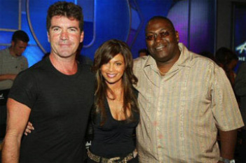
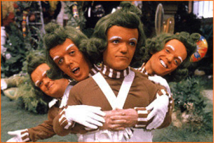

1. Bölüm
2007
Elijah ve Winter
1
28 Aralık 2007
09:09 (Yargı Gecesi’ne 86 saat, 51 dakika kala)
Kör adam boş göz çukurlarını saklayan kara gözlüklerinin ardından ileriye doğru baktı. Gözleri yuvalarından sökülürken gördüğü o parlak renk senfonisini, sivri uçlu tırnaklar retinalarını delerken duyduğu o keskin acıyı hâlâ anımsıyordu.
Laszlo irkilerek o anıyı kafasından uzaklaştırdı. Elini çenesine götürüp, hafif uzamış gri sakalını sıvazladı. En azından gri olduğunu düşünüyordu. Ona kalsa, eline hâlâ siyah geliyordu. Ama kör birisi için renklerin ne anlamı olabilirdi ki?
Hiç.
Ama Darian kör değil.
Dişlerini sıktı. Onu düşünmek bile gerilmesine neden oluyordu. Ayaklarının dibindeki Alman kurdu bunu sezerek dikildi.
Laszlo köpeğin kulaklarının arkasını kaşırken, “Tamam kızım, sorun yok,” diye fısıldadı.
Sascha, salyaları oturdukları kafenin ahşap döşemesine akarken hızla soluyordu. Kendini sakin olmaya zorlayan kör adam etrafındaki dünyanın kokularını içine çekti. Yeni öğütülmüş kahve ve kızarmış tost, ona üniversite yıllarını anımsatan parfüm ve kolonya kokuları, açık kapının hemen dışındaki evsizliğin kirli kokusu.
Laszlo parmaklarını önündeki devasa kapuçino bardağına doladı; kâğıt bardağın üzerinden hissettiği sıcaklık hoşuna gidiyordu. Bir taraftan Darian’ın onu ekme olasılığını düşünmemeye çalışırken, bir taraftan da espresso makinesinin gürültülü tıslamasıyla hoparlörlerden gelen duygulu ve melankolik Kate Bush şarkısının üzerinden zihnini etrafındaki konuşmalara yöneltti.
Birden burnuna çiçeklerin Parliament sigarasınınkine karışan tanıdık kokusu geldi. Koku ve sivri topuklu çizmelerin zeminde çıkardığı sert tıkırtı ona Darian’ın sonunda geldiğini haber veriyordu. Karşısındaki sandalye çekildi. Sascha çenesini sahibinin ayakkabısının üstünden kaldırarak dikildi.
Sonra Darian dudaklarını hafifçe yanağına dokundurarak Laszlo’yu öptü. “Seni yeniden görmek güzel.” Sesi biraz kabaydı, ama altındaki sevecenlik barizdi.
“Seni de yeniden görmek güzel.” Kör adam elleriyle bir hareket yaptı. “Yani, sözün gelişi.”
Laszlo bir şşşşşık sesi duydu; yüzünde bir sıcaklık hissetti, ardından yeni yakılmış kibritin kokusunu aldı. Darian uzun bir soluk koyuverince ılık bir duman bulutu yüzünü yaladı. İçine çektiği duman burnunun içindeki ince tüyleri titreştirdi.
“İşletmenin sigara içilmesine sıcak baktığını pek sanmıyorum.”
“Manhattan’ın nikotinden arındırılmış bölge olduğunu hep unutuyorum.” Laszlo, dumanın Darian konuştukça burun deliklerinden çıkışını hayal etti. “Gerçi, beni kapı dışarı edeceklerinden kuşkuluyum.”
“Bunun cezalandırmayla ilgisi yok,” dedi Laszlo on altı yıllık sessizliğin ardından konuşmalarındaki hazırcevaplığa şaşarak. “Nezaketle ilgili.”
“Her ikisi hakkındaki düşüncelerimi bildiğini sanırdım.”
“Biliyorum.”
Laszlo’nun dudakları nostaljik bir gülümsemeyle kıvrıldı. Kadının ne kadar güzel olduğunu anımsadı: Çikolata rengi ten, şeytani bir hale gibi başını çevreleyen kızılımsı saçlar ve koyu renk, kedilerinkini andıran gözlere yansımayan yayvan gülüş. Ama yüzü artık yılların izlerini taşıyor olmalıydı; tıpkı kendisininki gibi.
Boğazını temizledikten sonra cebinden katlanmış bir gazete çıkartıp ona uzattı. “Söyle bana, bu adam eskiden tanıdığımız birilerine benziyor mu?” Bir kâğıt hışırtısı duyuldu. Kadının şaşkınlığını sezen Laszlo, “Yüzeysel farklılıkların seni yanıltmasına izin verme,” dedi. “Sanırım gözleri gerçek kimliğini ele verecek.”
Darian bir anda irkilerek keskin bir soluk aldı.
“Onun kim… Kim olduğunu nasıl bildin?” diye sordu.
“Radyoda konuşurken duydum ve sesindeki bir şeyler tanıdık geldi.” Sakindi. “Onun için geçen hafta ‘Valentinus’u şahsen dinlemek için Chicago’ya uçtum. O zaman anladım.”
“Ama bu olanaksız.”
Laszlo kadına gerçeği sindirmesi için zaman tanırken bir yandan da o son gece olanları düşünüyordu. Hatasını düzeltmek için son bir şansı daha vardı, ama yapacağı şeyin bu kez ona gözlerinden fazlasına mal olmasından korkuyordu.
Ayağıyla sinirli bir şekilde tempo tutan Darian sigarasından uzun bir nefes aldı.
Laszlo kara gözlüklerini ve onların gerisindeki boş göz yuvalarını göstererek, “Onunla bu şekilde savaşamam,” dedi. “En azından tek başıma yapamam bunu.”
Neredeyse bir dakika boyunca ikisi de konuşmadı. Kör adam yaşanan sessizlik boyunca kadının düşüncelerini hayalinde canlandırdı: Şaşkınlık, korku ve nihayet hayal kırıklığı.
“Elijah ile Winter’in peşindesin,” dedi Darian. “Sana yardım etmelerini sağlamak için.”
“Senin de bana yardım edeceğini umuyordum.” Karşısındaki kadının o işte kendisiyle birlikte olmasına ne kadar ihtiyacı olduğunun birden farkına varan Laszlo duraksadı.
“Ne konuda yardım edeceğim? Valentinus’u öldürmen için mi?”
“Mecbur kalırsam evet.” Ondan yayılan paniğin kokusunu sanki fiziksel bir şeymiş gibi alabiliyordu. “Bunu borçlusun, Darian. Beni bu işe sen bulaştırdın. Şimdi de çıkmam için bana rehberlik etmelisin.”
Kadın sessiz kaldı. Laszlo onu gözlerini huysuz bir çocuk gibi yere dikmiş, dudağını ısırırken canlandırdı zihninde. Darian sonunda sıcak soluğu ve Laszlo’nun burnuna dolan parfüm kokusuyla öne eğilerek yaklaştı. Konuştuğunda sesi fısıltı düzeyindeydi, ama tonundaki yoğunluk etraftaki gürültüyü bastırıyordu.
“Beni buna zorlamaya kalkışmayacağını umuyorum.”
“Öyle bir şeyi asla yapmam.”
“Neden?” dedi Darian buruk bir şekilde. “Ben sana yapmıştım.”
Kadının bu çıkışı Laszlo’yu sarsmıştı, ama belli etmedi.
“Onları nerede bulacağını biliyor musun?” diye sordu Darian.
“İkisi de şehirde.”
“Kolyelerini hâlâ takıyorlar mı?”
“Evet,” dedi kör adam; sesi suçluluk ve pişmanlıkla doluydu.
Darian soluğunu koyuverdi. “Öyleyse sanırım o şeyleri geri almamızın zamanı geldi.”

Ekranda gezinip duran renkli şekilleri, mavimtırak bir küpün sarımsı piramide, sonra da kan kırmızısı küreye dönüşmesini boş gözlerle izleyen Valentinus konuşmayı bir kez daha dinledi.
Laszlo’nun korktuğu her ne kadar açıkça anlaşılsa da, kendine olan güveni de seziliyordu. Adam saldırmaya hazırlanıyordu. Darian ise ayrı bir olaydı. Duyduğu dehşet mutlaktı. Aslında o zayıftı. Ne Laszlo kadar akıllı, ne de onun kadar güçlüydü. Ve onun zayıf noktasıydı.
Valentinus da o nedenle üç yıllık aramaya rağmen Laszlo’yu bulmayı başaramayınca dikkatini Darian üzerine yoğunlaştırmıştı. Onun da iyi saklanmış olacağını tahmin ediyordu, ama hem kaynakları, hem de -en önemlisi- iradesi vardı. Yine de, özel dedektiflere neredeyse yarım milyon dolar ödedikten sonra onu kahvaltı masasında otururken kaderin bir cilvesi sayesinde bulmuştu.
Bir gün gazeteyi açmış ve Darian’ı spor sayfasından ona bakar halde görmüştü. Dodgers Stadyumu’nun en ön sırasında, Kenny Lofton o unutulmaz kurtarışını yaparken yarım metre arkasında oturuyordu. Her ne kadar fotoğraf biraz bulanıksa ve kadın son gördüğünden beri on altı yıl yaşlanmışsa da, kim olduğu hakkında en ufak bir kuşku yoktu.
Darian’ın yüzü de o son günkü tüm görüntüler gibi sonsuza kadar beynine kazınmıştı Valentinus’un.
Aynı gün, öğlen bile olmadan adamları bileti almak için kullanılan kredi kartının izini bulmuştu; on iki saat sonraysa adı artık Darian Wright olan kadın hakkında bilinmesi gereken her şeyi öğrenmişti. Bankada -görünüşe göre birkaç iyi tezgâhlanmış boşanmayla gelmiş- yirmi milyon dolardan fazla parası olan zengin bir kadındı.
Valentinus onunla yüzleşmeye can atıyordu, ama asıl istediği Laszlo idi. Onun için de, haftanın yedi günü, 24 saat çalışacak bir özel dedektif ve kelle avcısı ekibi tutmuştu. Bir buçuk yıllık bir bekleyişten sonra Darian’a sonunda Valentinus’un beklediği telefon gelmişti. Kimliği belirsiz adamın yer ve saat belirtmesine ancak yeten konuşma bir dakikadan az sürmüştü, kaydedilen ses hiçbir kuşkuya yer bırakmamıştı.
Ertesi akşam Astor Place’deki Starbucks’ın normal temizleme ekibi Valentinus’un elemanlarıyla değiştirilmiş, her masa ve sandalyenin altına, iki tuvalete ve depo odasına alıcılar yerleştirilmişti. Valentinus ertesi sabah konuşmaları dinlemeye başlarken her şeye hazırlıklı olduğunu zannediyordu. Ama sonra Laszlo hiç beklemediği bir şeyi açıklamıştı: Elijah ile Winter’in kimliğini.
Laszlo’nun dediklerine bakılırsa, her ikisinin de paylaştıkları geçmişleri hakkında en ufak bir fikri yoktu. Onlara ne olduğunu merak ediyordu. Bilmezlikten gelen mutlu birer hayat mı sürmüşlerdi, yoksa Laszlo’un yaptıklarıyla delirmişler miydi?
Laszlo’dan sonra kendi yaşamının ne hale geldiğini anımsayan Valentinus yumruğunu sıktı, sonra birden duvara vurdu. Acı aniydi. Gözlerini yumdu ve geçmişi bir yana itip anın keyfini çıkarttı. Odaklanmaya ihtiyacı vardı.
Anahtar kolyelerdi. Kafasında bir plan oluştukça gülümsemeye başladı. Çabuk davranırsa Laszlo ile Darian’dan kurtulabilirdi. O ikisi ölünce, beynini önündeki nihai savaş için boşaltabilirdi; belki çok daha zor, ama aynı derecede kazanılabilir bir savaş.
Tanrı’yı öldürmek.
2
29 Aralık 2007
14:46 (Yargı Gecesi’ne 57 saat, 14 dakika kala)
Elijah Glass karşısındaki iki yönlü aynaya dikkatle baktı. Aynanın diğer yanındaki insanlar gözlendiklerini biliyordu, ama belli ki bu umurlarında değildi. Elijah başını salladı. Kendi isteğiyle ve bir sürü yabancıyla birlikte oturup, başka yabancılar tarafından gözetlenmek fikri…
Bunu düşünmek bile solgun ve çilli cildinin bir anda kızarmasına neden oldu. Derin, rahatlatıcı bir soluk alarak işaret parmağını boynunda asılı gümüş haça bastırdı. Ilık metali teninin üzerinde hissetmek onu her zaman rahatlatıyor, kendini emniyette hissetmesini sağlıyordu.
Elijah bakışlarını tekrar pürüzsüz cam yüzeye çevirdi. Camın ardındaki dikdörtgen odada Terry uzaktan kumandayı aldı ve büyük plazma ekrana doğrulttu. Özenle seçilmiş grup (altı adam, altı kadın; yedisi beyaz ırktan, biri Asyalı, ikisi Latin ve ikisi de Afro-Amerikalı) uysal bir şekilde ekrana doğru döndü.
Elijah dağınık kızıl saçlarını eliyle kulaklarının arkasına itip, dizüstü bilgisayarına göz attı. Ekranı on iki eşit kareye bölünmüştü. Her birinin ortasında dışarıya doğru bakan bir yüz vardı. Elijah dev ekrana bakan yüzleri tek tek inceledi. Nabzı yavaşladı.
Televizyon onun gerçekten hoşlandığı tek şeydi. Umutsuz bir uykusuzluk hastası olarak her gece sekiz saati kanallar arasında dolaşarak geçirirdi. Neredeyse her şeyi seyrederdi, ama kesin favorileri de vardı: Fantezi ve bilim kurgu, hukuk, suç incelemesi dizileri, filmler, politika ve elbette komedi dizileri ve reality şovlar.
Elijah’ın tutkusu gerçekliğin irdelenmesiydi. Ama o anda karşısındaki gerçeklik tümüyle yalındı. Kaşlarını çatan, gözlerini kısan, ağızlarını büzen ve burunlarını kıvıran on iki kişiye dikkatle baktı. Her hareketin tek tek hiçbir anlamı yoktu, ama topluca bakılınca… İşte Elijah’ın Tanrı vergisi yeteneği o noktada devreye giriyordu.
Yüz Hareketleri Kodlama Sistemi’nde eğitim almış olan Elijah, insanların yüzünü okumayı biliyordu. Psikoloji profesörü Paul Ekman tarafından 1976 yılında tasarlanan YHKS, üç bin civarında değişik yüz ifadesi ve bunların gösterdiği duyguları belirlemişti. Ekman’ın 46 farklı kas hareketini ya da ‘Hareket Birimi’ni belgelediği 500 sayfalık el kitabını ezberledikten sonra insan yüzü Elijah için kolay okunabilen bir kitap olmuştu.
İstemli, ama sahte bir ‘Pan-Amerikan gülüşü’, yani dudakların kenarlarını yukarıya kaldırmak (HB 12) ile istem dışı samimi bir ‘Duchenne gülüşü’nü, yani HB 12 ile birlikte yanağın kaldırılarak (HB 6) gözlerin kısılmasına neden olmak arasındaki farkı kolaylıkla ayırt edebiliyordu. Korkuyu (HB 1, 2, 15, 20; kaşların hem içi, hem de dışının kaldırılmasıyla birlikte dudakların basılarak uzatılması), tiksintiyi (HB 4, 9, 17; alnın indirilip, burnun büzülmesiyle birlikte çenenin kaldırılması), kısacası insanın hissedebileceği her duyguyu okuyabiliyordu.
Yıllar boyunca insanların hislerini saklamakta da en az onları kontrol etmekte olduğu kadar zorlandığını öğrenmişti. Ve onun gerçeği algılamasına izin veren de yaradılıştan gelen bu kontrol eksikliğiydi. Çünkü Elijah, çoğu kişinin kabullenmeyi reddettiği bir gerçeği kalpten kabullenmişti: Kişinin asıl efendisi zihni değil bedeniydi.
Schopenhauer ne demişti?
Der Mensch kann was er will; er kann aber nicht wollen was er will.
Kişi istediğini yapabilir; ama ne isteyeceğini isteyemez.
Elijah başını salladı. Doğruydu bu. Beden arzuları kontrol ediyordu, arzular da iradeyi. Geri kalan her şey sadece kuru gürültüydü; bilinci kandırıp, bir köleden farklı olduğuna inandıran olgu belliydi.
Video gösterimi bitince Terry ifadesiz bir yüzle, odada bulunan deneklere döndü. Donuk sarı renk saçlarla çevrelenmiş sade bir yüzü vardı.
“Peki,” dedi. “Ne düşünüyorsunuz?”
Asyalı kadın konuşmaya başladı. Elijah zihninde içgüdüsel olarak ona en çok benzettiği tanınmış kişi olan ve ER dizisinde oynayan Ming Na’nın adını takıp kulaklarını dikti. Dikkatle dinlemesine rağmen aslında kadının ağzından çıkan sözcükleri duymuyordu bile.
Onun yerine sesine odaklanmıştı. Tona. Vurgulara. Konuşma temposuna. Sesindeki ipuçları sürekli değişen mimikleriyle (HB 6, 11 ve 12) birleşince bilmek istediği her şeyi anlatıyordu.
Deneklerin geri kalanı da birer birer Terry’nin sorduğu kurnazca soruları yanıtladı. Son adam Elijah’ın Oz dizisinde mahkûmlardan birini canlandıran Luis Guzman’a benzettiği sert görünümlü bir Latindi. Guzman sinirli ve anlaşılmaz şekilde gergin görünüyordu; dudakları fazla sıkılmıştı (HB 23), gözleri kısıktı.
İki yönlü aynadan adamı inceleyen Elijah, onun masanın altında ayaklarıyla sürekli tempo tuttuğunu gördü. Ve birden anladı. Adam bir bağımlıydı ve o anda da ihtiyaç içindeydi. Guzman’ın düşkünlüğünün uyuşturucu, sigara ya da alkol olması önemli değildi. Her ne ise, önündeki işe odaklanmasına engel oluyordu.
Elijah başına takılı mikrofona yavaşça, “Boşver onu,” dedi.
Terry deneklerin göremeyeceği, Elijah’a onu duyduğunu belirtecek kadar hafif bir şekilde başını eğdi. Gösterim elli yedi dakika daha sürdü, ama Elijah sürenin farkına bile varmadı. Denekler sonunda sandalyelerinden kalkınca, o da bitkin bir şekilde yeşil deri koltuğuna çöktü.
Bir bardak soğuk suyu üç uzun yudumda bitirdikten sonra gözlerini kapattı ve zihnini özgür bıraktı. Sonra karartılmış odanın kapısı ansızın açılınca bir yabancının onun yaşam alanına girmek üzere olduğunu farkederek irkildi. Ama gelen Terry idi.
“Özür dilerim,” dedi. “Kapıya vurmayı hep unutuyorum, değil mi?”
Elijah omuzlarını silkip, önüne baktı. “S-s-sorun değil.”
Terry oturdu. Aralarındaki üç metrelik mesafe Elijah’a göre çok kısaydı, ama fazla rahatsız olacağını düşünmedi. Terry tekrar konuştuğunda, sesinde intihar etmek üzere olan birini vazgeçirmeye çalışan bir insanın ağır ve düşünceli tonu vardı.
“Peki, sen ne düşünüyorsun?”
Elijah notlarına, okunması neredeyse olanaksız bir dizi mavi, kırmızı ve yeşil karalamaya göz attı. Aslında fotoğrafik hafızası not almayı gereksiz kılıyordu, ama eğik a’larına ve bozuk t’lerine bakmak kendini daha iyi hissetmesini sağlıyordu. En azından zihninde.
Gerçekteyse duyduğu huzur baktıklarından çok, bakmadıklarından kaynaklanıyordu. Terry ile olan yakınlığından ötürü onun gözlerine doğrudan bakmaya dayanamıyordu. Yabancıları gözlemek farklı bir şeydi. Son iki ay boyunca o kadar yakın çalışmışlardı ki, Terry artık neredeyse arkadaş sayılırdı.
Elijah gözlerini siyah keçeli kalemle yazdığı renkli harflere dikti. Zihinsel olarak harflerin tek renkli olduğunun bilincindeydi, ama sinestezisinden1 dolayı onları bir renk cümbüşü olarak algılıyordu. Bedenin zihin üzerindeki egemenliğinin ve gerçeği algılanmayı kontrol etmesinin bir örneği daha.
11 Sinestezi (synesthesia): Duyuların birbirine karıştığı nörolojik bir durum. (Örnek: harf ve seslerin renk olarak, bazı kelimelerin ağızda tat olarak algılanması.) [ç.n. (Kaynak: Wikipedia)]
Öyle bile olsa, Elijah sinestezisinden, beyninin değişik bölümleri arasındaki açıklanamayan bilgi alışverişinden kaynaklanan o ender sendromdan hoşlanıyordu. Sonuçlar garipti. Bazı insanlar şekilleri tadıyor, kimileri müziği görüyor ya da kokuları duyuyordu. Elijah’ın durumundaysa bu nöro-sinaptik parazit dil merkeziyle görüntü korteksi arasında oluyordu; dolayısıyla alfabenin her harfini farklı renkte görüyordu.
Elijah arkadaşlarının hiçbirinin a’ları kırmızı, b’leri mor olarak görmediğini anladığında sekiz yaşındaydı. Önceleri farklı olmaktan nefret etmiş, ama kısa zamanda renkli harflerin ona faydalı anımsatıcı ipuçları sağladığını ve hafızasını güçlendirdiğini keşfetmişti.
Kulübe üye olmanın getirdiği ayrıcalıklar.
“Kendini ne zaman hazır hissedersen,” dedi Terry onu düşüncelerinden uzaklaştırarak.
Elijah boğazını temizleyip analizine başladı.
“İlk reklam fazla entelektüeldi. Hepsi sıkıldı. İkincisi nezihti, ama kongre üyesinin av tüfeğiyle görüldüğü sahneler bazı kadınları rahatsız etti. Üç numara çoğunda olumlu etki bıraktı. En iyisi o, ama üzerinde biraz daha uğraşmak gerekecek.”
Elijah başını kaldırıp Terry’nin cep bilgisayarına bir şeyler yazdığını görünce rahatladı. Elleri hızla hareket ediyor, ağzından çıkan her sözcüğü yazıyordu.
Terry gözlerini küçük yeşil ekrandan ayırmadan, “Tamam,” dedi, “Şimdi bana biraz renk ver.”
Elijah bu espriye güldü, sonra o hafta gözlemlediği on gruptan öğrendiklerini ve bulgularını cinsiyet, etnik grup, yaş ve gelir düzeyine göre sınıflandırarak anlatmaya koyuldu. Terry onun kırk iki dakikalık monologunu çok ender olarak, sadece birkaç açıklayıcı soru sormak için böldü.
Elijah söylediklerinin çoğunun onun için sürpriz olmadığının bilincindeydi. Sonuçta Terry de vasıflı birisiydi ve kendisi gibi hem psikoloji, hem de örgütsel davranış eğitimi almıştı. Ama iş analize gelince topu Elijah’a atıyordu. Elijah’ın içgüdüleri altın değerindeydi. Birileri ne zaman insanların gerçekten ne hissettiğini bilmek istese Elijah Glass’ı çağırırdı.
Elijah geride kalan beş yıl boyunca film stüdyolarının ve televizyon şirketlerinin en aranılan danışmanı olmuştu. Yıldızların kaprislerine alışık Hollywood patronları onun giderek artan tuhaflıklarını (‘el sıkmak yok’dan başlayıp, ‘görsel veya başka türlü temas kesinlikle yok’a kadar uzanan antikalıklarını) kolayca kabullenmişti. Aslında onun empatik bir dâhi olarak ünlenmesinde o tuhaf davranışlarının da epey yardımı olmuştu.
Elijah üç ay öncesine kadar eğlence sektörü dışındaki müşterileri geri çevirmişti. Bunu Terry, New York eyaletinin en genç Kongre üyesi adına reddedemeyeceği bir teklif yapana dek sürdürdü; sadece partinin yükselen yıldızı adına çalışacak ve normal ücretinin on katını alacaktı.
“Sonbahardaki valilik seçimlerini kazanmak için ciddi bir şansı var,” demişti Terry. “Bir sonraki durağının da Oval Ofis olmasını bekliyorum.”
Elijah bu konuda kuşkuluydu. Kendi yaşındaki birinin öyle bir sorumluluğu almaya hazır olduğuna inanamıyordu. Ama sonra Terry ona Kongre üyesinin konuşmalarını içeren bir DVD vermişti. Gerçekten de olağanüstüydüler. Parlak bir konuşmacı olan eski rahibin Reagan ve Clinton’u anımsatan, yadsınamaz bir karizması vardı.
Bir hafta sonra Elijah teklifi kabul etmişti. Kendinden istenen şey genelde hoşuna gidiyordu, ama kampanyanın ne kadarlık bir bölümünün kaldırımlarından insan taşan New York şehrinde sürdürüleceğini baştan bilse, büyük olasılıkla Los Angeles’ten hiç çıkmazdı.
Bu düşünceyi kafasından uzaklaştırarak üçüncü reklamın hangi yönlerinin yeniden düzenlenmesi gerektiğini anlatmayı tamamladı.
Onun konuşması bitince Terry cep bilgisayarını kapatıp çantasına koydu ve içini çekerek, “Gitmem gerek, yoksa strateji yemeğine geç kalacağım,” dedi. “Kongre üyesi senin gelmeyeceğini duyunca üzüldü. Kampanyadaki tanışmadığı tek üst düzey kişi sensin.”
“Ona ne söyledin?”
“Gerçeği; aynalı duvarın arkasındaki dâhinin bir enoklofob ve hafefob olarak Manhattan’a pek sıcak bakmadığını. Ne yazık ki, Kongre üyesinin fobiler konusundaki bilgisi pek güncel değil. Açıklayacaktım, ama kalabalık içinde olma ve dokunulma korkusunu pantomim yaparak anlatmak oldukça zor geldi. Gelecek sefer için bir önerin var mı?”
“Her fobi için bir parmağını göster, sonra da masanın altına girip ağlamaya başla.”
“Kulağa biraz garip geliyor.”
“Kimse pantomim yapmanın kolay olduğunu söylemedi.”
“Ya da eğlenceli.”
“Fransızlara özgü bir zevk olmalı.” Elijah hafifçe titreyen ellerine baktı. “Şaka bir yana... Üzgünüm, ama gidemem. Yani… Biliyorsun işte.”
“Boş ver,” dedi Terry. “Sayende şimdiden beş puan aldık bile.”
“Ama bu sadece ön seçimler.”
“Daha ilk çatışmada ölürsen savaşı kazanma şansını da kaybedersin.” Terry kapıya yöneldi, sonra birden döndü. “Fobilerin gittikçe kötüleşiyor, değil mi?”
Elijah biraz utanarak, “Nereden bildin?” dedi.
“Senin kadar becerikli olmayabilirim, ama çoğu insan sezgilerimin oldukça kuvvetli olduğunu söyler.” Duraksadı. “Ayrıca bina yöneticisi bana senin niye sabahın beşinde geldiğini sordu.”
Elijah yüzünün kızardığını hissetti. Terry onun kalabalıklardan elinden geldiğince kaçındığını zaten biliyordu, ama son zamanlardaki davranışları olayı gerçekten yeni boyutlara taşımaya başlamıştı. Güvenlik görevlileri onu lobide üç saat bekletmişti, ama kaldırımlardaki sabah kalabalığından kaçmak buna değerdi.
“Soygun öncesi etrafı inceliyordum,” diye takıldı Elijah. “Sen de katılmak ister misin? Gözcülük yapabilirsin.”
“Kalsın,” dedi Terry, “Pantomim sanatımı çalışmam gerek.” Duraksadı. “Bu durumda seninle ayın üçünde yeni radyo reklamlarını gözden geçirmek için görüşeceğiz, değil mi?”
“Sabırsızlanıyorum.”
“Süper. Sonra görüşürüz. Ve de iyi yıllar.” Terry arkasına bakmadan çıktı.
“İyi yıllar,” diye mırıldandı Elijah boş odaya. Bir süre, boynunda asılı gümüş haçı okşayarak boşluğa baktı. Kolyeyi gömleğinin üzerine çıkarttığını anımsamıyordu, ama bunu yapmış olduğuna da pek şaşmadı.
O asabi alışkanlığını birkaç hafta önce farkeden Terry, kolyeyi nereden aldığını sormuştu. İşin komik yanı, tüm erişkin yaşamında takmış olmasına rağmen kendisi de o şeyin nereden geldiğini anımsayamıyordu. Utangaç bir gülümsemeyle ve yalan olduğunu bile bile kolyenin eski bir kız arkadaşının hediyesi olduğunu söylemişti. Aslında insanın bir hafefob olması elbette ki romantik ilişkilere pek izin vermiyordu.
Hayır, haç başka birinden gelmişti. Ama kimden geldiği konusunda da en ufak bir fikri yoktu.

Winter Zhi gözlerini yumup derin bir soluk aldı.
Onları karşısında hissedebiliyordu: Bakan, dinleyen, bekleyen insanlar. Kaç kişi olduklarını merak etti. İki bin mi? Üç bin mi? Anımsayamıyordu. Önemli de değildi zaten. Sahne korkusu yoktu. Tersine, dinleyici sayısı ne kadar fazla olursa performansı da o oranda canlı ve devingen oluyordu.
Kendini sık sık kitlelerin kanını emen, enerjilerini yaratmakta çok başarılı olduğu o yürek titretici işitsel tasvirleri yaratmak için kullanan duygusal bir vampir olarak hissediyordu.
O düşüncelere dalmış haldeyken klarnetler ve flütler, kemanlar ve viyolalar muhteşem bir kreşendoya doğru yükseldi.
Vakit neredeyse gelmişti.
New York Filarmoni’nin nefesli ve yaylı çalgıları Tchaikovsky’nin Re Majör Konçerto’sunun giriş bölümünü hafif, çabuk bir tempoda –allegro moderato– tamamlamıştı. Winter şans getiren nazarlığına, göğüslerinin hemen üzerinde sallanan o gümüş haça dokunma dürtüsüne karşı koydu; ılık metalin tenine dokunmasının verdiği huzurla, derin bir soluk daha aldı.
Gözlerini açınca projektörlerin son derece parlak ışığı açık yeşil gözlerine kör bir bıçak gibi saplandı. Kemanını hüzünlü bir gülümsemeyle omzuna yerleştirip çalmaya başladı. Solonun daha ilk notasıyla kalbi saf ve dolgun sesin coşkusuyla kabardı.
İlk bölümü ateşli bir performansla fişek gibi geçip andante’ye yavaşladı ve o harika, melonkolik ikinci bölüme girdi. Bölümün ortalarında müziğin temposu tekrar canlandı. Ve sonra arkasında üflemeli ve vurmalı çalgılarla birlikte son derece hızlı –allegro vivacissimo– final bölümüne girip, 125 yıl önce doğmuş Rus bestecinin kompozisyonunu icra etmeyi tamamladı.
Winter’in arşesi heyecanlı kodanın son mezürüne kadar Stradivarius kemanın telleri üzerinde klarnet ve flütleri, trompet ve davulları bastırarak, neredeyse olanaksız görünen hareketlerle, uçarcasına gezindi. Zihni bütün konçerto boyunca bilinçli tüm düşüncelerden arınmış, nabzı yalın ve saf bir coşkuyla atmıştı.
Zamanında bir New York Times muhabiri ona konser sonrasında kendini nasıl hissettiğini sormuştu. Winter’in porselen bibloyu andıran yüzü bir anda pembeleşmiş ve bakışlarını uzun, simsiyah saçlarının yüzünü kapatması için yere çevirmişti. O duyguyu tanımlamanın tek yolu, sevişme sonrası gibi olduğunu söylemekti: Bitkin, mutlu, tükenmiş, eksiksiz.
O akşam da farklı değildi.
Orkestranın son akoru Winter’in arşesini indirmesinin ardından kısa bir an havada asılı kaldı. Tını mükemmelliğin ta kendisiydi. O anın sonuna kadar dinleyicisiyle yaşadığı bütünleşmenin tadını çıkaran Winter sanki kendinden geçmişti.
Dinleyicilerin alkışı ılık bir su gibi üstünden aktı. Utangaç bir şekilde dizini kırarak selam verdi. Kalabalık ayağa kalktı; beğeni düzeyini vurgulayan ıslıklar ve bağırışlar giderek artıyordu. Winter tekrar eğilerek selam verdi, ışık saçan bir gülümseme yalnızlık çağrıştıran bebeksi yüzünü aydınlattı.
Smokinli bir adam sahneye çıkan basamaklardan yukarıya koşup kırmızı güllerden oluşan bir buket uzattı. Winter adamın yanağına kondurduğu bir öpücük ve geniş, sahte bir gülümsemeyle kabul etti buketi. Çiçekler ne kadar güzel de olsalar içine tarifi olanaksız bir korku salmıştı.
Peşine düşen yeni bir sapığı hayranları arasında yalnızca görünüşünden tanıyabilecekmiş gibi, gözleriyle ilk birkaç sırayı taradı. Tipik klasik müzik sever grubunu oluşturan, konsere sosyetik eşleriyle gelmiş beyaz saçlı centilmenlerin yanı sıra, takılarını ve dövmelerini sergilemek için açık saçık giyinmiş bir sürü genç ve yirmili, otuzlu yaşlarında her türden insan gördü.
Bir kez daha selam vermek üzereyken gözü sıraların arasındaki koridorda duran adama takıldı. Çelik grisi saçlar, hafif sakalın altındaki kırışmaya yüz tutmuş cilt, koyu renk gözlükler ve granit bloğunu andıran çene... Ama Winter’in donup kalmasına neden olan şey ne adamın görünümüydü, ne de ayaklarının dibinde uysal bir halde oturan Alman kurt köpeği.
Onu durduran şey adamı tanıdığına dair içinde oluşan kesin histi.
Ve kör adamın doğrudan ona baktığından emindi.
3
29 Aralık 2007
16:58 (Yargı Gecesi’ne 55 saat, 2 dakika kala)
Elijah aynanın ötesindeki boş odaya baktı. Dışarıya çıkmak zorunda olmak yerine, 5. Cadde’deki gökdelenden otel odasına ışınlanabilmeyi tercih ederdi. Sokaklar insanlarla dolu olacaktı ve şehirde o kadar Noel turisti varken bir taksi bulmak da neredeyse olanaksızdı.
Metro kesinlikle söz konusu değildi. Tıka basa insan dolu vagonları düşünmek bile sırtından soğuk bir ter boşanmasına neden oldu. Tanrı bile bir enoklofob için New York metrosundan daha beter bir işkence odası tasarlayamazdı.
Kapı birden açıldı ve içeriye füme takım elbise giymiş uzun boylu bir adam girdi. Elijah kendini ziyaretçinin gözlerine bakmaya zorladı. Adam cilalı siyah deri ayakkabılarından karmakarışık sarışın saçlarına kadar kendine güvenle doluydu. Butch Cassidy and the Sundance Kid’deki ya da daha doğrusu The Candidate’deki Robert Redford’u andırıyordu.
Elijah farkında olmadan duvara doğru gerilerken, “Sayın Kongre üyesi,” diye mırıldandı.
Gülümseyen Sounders, “Görünen o ki, ünüm benden önde gidiyor,” dedi ve odanın içine doğru ilerledi. “Yalnızca Terry ile muhatap olmak istediğinizi biliyorum, ama efsanenin ardındaki adamı da tanımadan yapamadım.”
“T-t-teşekkürler,” diye kekeledi Elijah; ne diyeceğini bilememişti. Bakışlarını kaçırmaya çalışsa da, adamda dikkatini çeken –hayır, talep eden bir şey vardı.
“Evet… Terry bana sizin pazarlama dehanızın psikiyatri eğitimi almış olmanızdan kaynaklandığını söyledi.”
“Eğitimini aldım, ama hiç doktorluk yapmadım.”
“Siyasi danışmanlıkta daha fazla para olduğuna karar verdiniz demek, öyle mi?”
Elijah psikiyatri koğuşunu ilk ziyaretinde yaşadığı ruhi çöküşü düşündü. “Eh... Onun gibi bir şey.” Bakışlarını ayakkabılarına dikti.
Sıkıntılı bir sessizlik oldu.
“Neyse... Meşgul olduğunuza eminim. Ama kendimi tanıtmadan da gidemezdim. Unutmayın, ben bir politikacıyım; insanlarla kaynaşırım, ancak böyle varım.”
Genç politikacı elini uzattı. Elijah’ın eli de bir an için kalktı. Refleks gibiydi, ama Elijah öyle olmadığını çok iyi biliyordu. İçinden hareketin ardındaki eylemleri sıraladı.
Serebral korteksimin frontal lobundaki substantia nigra elektro-kimyasal mesajı başlatır, o da miyelin kaplı uzun aksonlardan ve sonra milyonlarca nörondan geçip, kaslarımda dallanan dendritlere ulaşır. Böylece elim kalkar.
Bu tıbbi bilgiler kendi özel Discovery Kanalı belgeseline sahipmiş gibi zihninde aktı Elijah’ın. Karşısındaki korkunç ‘başka bir insana dokunmak’ engeli hakkında düşünmeyi önlemek için basit bir şaşırtmacaydı bu.
Eli iki santim daha kalktı. Sonra cesareti uçuverdi. Kolunu indirip geriye doğru bir adım atınca arkasındaki sandalyeye çarptı.
“Üzgünüm... Ben, şey… Mikroplara karşı bir şeyim var.”
Eli bir saniye daha havada asılı kalan Kongre üyesi başını salladı. “Elbette. Anlıyorum. Eh, ismin arkasındaki yüzü tanımak iyiydi. Ve aynanın arkasındaki kişinin inançlı biri olduğunu gördüğüme de sevindim.”
Başıyla Elijah’ın kolyesini işaret etti.
“Ha! Bu...” Elijah gümüş haça tedirgin bir halde dokundu. “Aslında dindar biri değilim.”
“Tanrı’ya inanmıyor musunuz?”
Sorudaki açık sözlülüğe biraz şaşırarak, “Mmmm, hayır,” dedi Elijah.
“Ben de sizin gibiydim,” dedi Kongre üyesi. “Ama Tanrı’yı bulunca, O da huzuru bulmamda bana yardımcı oldu. Ve eğer söylememde sakınca yoksa siz de huzur bulmaya ihtiyacı olan biri gibi görünüyorsunuz.”
“O kadar basit olmasını dilerdim.”
“Neden değil?”
Elijah omuzunu silkti. “Ben bir deneyciyim.”
Sounders’in deneycilerin bilginin yalnızca deneyimlerden elde edilebileceğine inandıklarını bilmesini beklemiyordu. O nedenle de o son lafını konuşmayı sona erdirme amacıyla söylemişti. Ancak tam tersi oldu.
“O zaman siz bir John Locke taraftarısınız, öyle mi?” Kongre üyesinin yüzünden oyunbaz bir gülümseme geçti.
Onun deneyciliğin kurucusunu bilmesine şaşıran Elijah, “Öyle,” diye yanıtladı. Çoğu insan John Locke’yi Lost dizisindeki bir karakter olarak tanırdı.
“Ama Locke, Tanrı’ya inanırdı,” dedi Sounders. “Ayrıca İngiliz Milletler Topluluğu’nun hoş göremediği tek dini grubun, Tanrı’nın ahlak yasalarına uymaları konusunda güvenilemeyecekleri için, ‘ateistler’ olduğunu söylemiştir.”
“Mesele din konusuna gelince Locke mantıken tutarsızdı. Gerçi onu suçlayamam, çünkü 1600’ler Tanrı’sız putperestler için özellikle hoşgörülü zamanlar değildi.” Elijah duraksadı. “Yine de, sonraki deneyciler her şeye gücü yeten bir Yaratıcı’yı deneysel kanıt yokluğundan ötürü reddetti.”
“Deneysel kanıt mı? Güneşin doğuşunu nasıl nitelendiriyorsunuz?”
“Astronomi.”
“O zaman sanırım O’nu görene kadar Tanrı’ya inanmayacaksınız?”
“Öyle diyebiliriz.”
Sounders başını salladı. “Bu tartışmaya devam etmeyi çok isterdim, ama şimdiden geç kaldım. Yemeğe katılamayacağınıza üzüldüm.” Duralayıp ekledi: “Belki bir dahaki sefere uygun olursunuz.”
“Elbette olacağım,” dedi Elijah; ‘bir dahaki sefer’in asla olmayacağını gayet iyi bildiği için rahattı.
Kongre üyesi elini bir kez daha uzattı, ama hemen geri çekti. “Pardon.” Yüzünden sahte bir gülümseme geçti. (HB 6, 12, 18). “Alışkanlık işte.”
“Önemli değil,” dedi Elijah. Genç politikacının onu bilerek iğnelediğini anlamıştı.
“Eh, sonunda sizinle tanışmak güzeldi.” Sounders gitmek üzere dönmüştü ki, Elijah arkasından seslendi.
“Sayın Kongre üyesi. John Locke’nin söylediği başka bir şeyi anımsayın: Eğer devlet vatandaşlarının haklarını korumazsa, geriye uygun tek bir cevap kalıyor.”
“Neymiş o?”
“Devrim.”
Sounders’in gülümsemesi bir anda eriyip kayboldu. “Bunu aklımda tutacağım. İyi akşamlar, Bay Glass.”
Politikacı odadan çıktıktan sonra Elijah basit bir yemeğe bile katılma konusundaki yetersizliğine lanet ederek kendini sandalyenin üstüne bıraktı. Terry haklıydı; fobileri gittikçe kötüleşiyordu. Ve buna kendisi izin vermişti; sayısı zaten az olan tanıdıklarını boşlamış, kendini ailesinden yalıtmıştı. Fobileri uğruna geri kalan her şeyi feda etmişti; ‘sosyal hayatının’ Law & Order ve CSI dizilerinin tüm bölümlerini izlemekten ibaret olmasının normal olduğuna kendini inandırarak bir modern zamanlar Robinson Crusoe’sına dönüşmüştü.
Bir şeyler yapmazsa, fobileri idareyi daha önce hiç olmadığı ölçüde ele alacaktı. Yakında çalışamaz duruma bile gelebilirdi. Peki, ya sonra?
Derin bir soluk aldı, dizüstü bilgisayarını kapatıp omuz çantasına koydu. Ve bir karar verdi.
Artık saklanmayacaktı. Bedeninin yaşayan herkesten saklanma isteği ile mücadele edecekti. Ve buna hemen o anda dışarıya çıkarak başlayacaktı.

Winter askılı bluzunu giydi; konser kıyafetinden kurtulduğuna memnundu. Işıkları kıstı ve yanan mumların titrek ışığında lotus pozisyonunu alarak oturdu. Gözlerini kapattı, zihnini dünyasal tüm isteklerinden (özellikle de Michael’den) arındırma çabasıyla derin soluklar almaya başladı.
Yalnızca onun adını düşünmek bile kalp atışlarını hızlandırmaya yetmişti. Zihninde Budizm’in Dört Asil Gerçeği’ni yineleyerek arındırıcı bir soluk aldı.
Dukkha. Yaşam acı çekmektir.
Samudaya. Arzu tüm acıların kaynağıdır.
Nirodha. Acı çekmek yalnızca arzuların bertaraf edilmesiyle sona erdirilebilir.
Marga. Sadece Asil Sekiz-katlı Yol arzuyu bertaraf edebilir.
Yol yaşam boyu meditasyon gerektiriyordu. Winter ise o anda nirodha üzerine odaklanmıştı. Soluk alıp verme egzersizlerine devam ederken kişisel ch’i’sinin2 içinde sürekli bir yılan gibi kıvrılıp büküldüğünü, tinsel yin ve yang’ının3 üstünlük için birbiriyle mücadele ettiğini düşledi.
2 ch’i [chi, Qi (‘kiy’ olarak okunur)]: Geleneksel Çin kültüründe evrendeki her canlının bir parçası olduğuna inanılan yaşam enerjisi, tinsel enerji (ç.n.)
3 yin ve yang: Çin felsefesinde, insanların doğadaki olayları algılayışlarında karşılaştıkları ve evrendeki her devingen nesnede bulunduğuna inanılan doğal karşıtların genel tanımlamaları. Edilgeni, karanlığı, dişili, olumsuzu ve tüketimi betimleyen Yin geceye, etkeni, aydınlığı, erili, olumluyu ve üretimi betimleyen yang ise gündüze karşılık gelir. Sürekli bir mücadele içinde olan yin ve yang birlikte bütün’ü yaratırlar. (Kaynak: Wikipedia) (ç.n.)
Soyunma odasının kapısı birden hızla açıldı. Yüreği ağzına gelen Winter gözlerini açtı. Gelenin annesi olduğunu görünce ulaşmış olduğu huzur da kayboldu. Carol Royce yerdeki mumlara öfkeyle baktı. Winter her ne kadar düzenli olarak kiliseye gitse de, annesi onun Çinli babasının doğu felsefesini de kabullenmiş olmasından alenen nefret ediyordu.
Carol ışıkları açtı ve mumları toplayıp söndürmeye başladı.
“Gerçekten, Winter! Bir gün yangın çıkartacaksın. Ayrıca gittiğin her yerde tüm mobilyaların yerini değiştirmen şart mı?”
Winter’in gözleri küçük odadaki dört sandalyeye kaydı; hepsi kapıya bakacak şekilde yerleştirilmişti. Yanıt vermedi; annesiyle feng shui tartışılmayacağını gayet iyi biliyordu. Yirmi altı yıl bir Budist ile evli kaldıktan sonra Carol Royce’a kimsenin kapıya dönük sandalyelerin odadaki kötü ruhları kovmaya yarayacağını söylemesine gerek de olmamalıydı.
Annesi mumları söndürmeyi bitirince suçlayıcı bakışlarını masanın üzerindeki çiçeklere çevirdi.
“Ondan mı geliyorlar?” İlk sözcüğü bir Çingene lanetini anar gibi söylemişti.
“Hayır, anne.”
“Kimden öyleyse?” Yanıtı beklemeden kartı aldı. Hızlıca okuduktan sonra bakışlarını yukarıdan yardım ister gibi tavana çevirdi. “Çılgın bir âşık daha. Artık turneleri bırakmalısın.”
“Bu konuyu konuşmuştuk, anne.”
“Sadece bu olaylar yatışana kadar, tatlım. Biraz geri çekilip medyadan uzaklaşman gerek.”
“Kimsenin beni sahneden kovmasına izin vermeyeceğim.”
“Ama böyle yaşamaya devam edemezsin!”
“Senin istediğin şekilde de yaşayamam!”
Winter gözyaşlarını güç zapt ediyordu. Her zaman duygularını kontrol edebilmekle gurur duymuştu, ama ne zaman işin içine annesi girse delirmenin eşiğine geldiğini hissediyordu.
“Sana yardım etmeye çalışıyorum.” Carol sonra her zamanki nakaratına başladı. Çok hızlı konuşuyordu. “Michael konusunda sana söylediklerimi dinlemiş olsaydın, bunların hiçbiri...”
“Anne! YETER!”
Patlaması o kadar ani ve gürültülü olmuştu ki, kendisi bile şaşırdı. Derin bir soluk alıp yavaşça bıraktı. Devam etmeden önce, bağırmayacağından emin olana kadar bekledi. Bu biraz zaman aldı.
Sonra sakin ama kesin bir ses tonuyla, “Otuz yaşındayım, anne,” dedi. “Bu da zaman zaman kendi kararlarımı verebileceğim anlamına gelir. Ve kararım da turneye devam etmek.”
“Endişeleniyorum. Birisi yine seni benden almaya kalkarsa…” Carol Royce’un göz pınarlarında yaş birikmişti.
Winter bir adım atıp onu kucakladı ve kendine çekti. “Şşşş!” diye fısıldadı kulağına. “Kimse beni senden...”
Yine? Ne demek ‘yine’?
Bunu düşünme.
“...dikkatli olacağım. Söz veriyorum, tamam mı?”
Carol Royce yüksek sesle burnunu çekti, kızına daha da sıkıca sarıldı, sonra geri çekildi. “Seni o kadar çok seviyorum ki.”
“Ben de seni seviyorum.”
“Böyle harika bir kızı hak etmek için ne yaptım?”
“Babam bana senin şeytanla bir anlaşma yaptığını söylemişti.”
“Çok komik!”
Winter annesinin dudaklarının kenarında bir gülümseme gördü. Aslında bu, babasının gerçekten söylemiş olabileceği bir şey, annesinin katı Hıristiyan inançlarına yönelik pek de ince olmayan bir göndermeydi. Babasının ölümü aradan neredeyse beş yıl geçmesine rağmen hâlâ önceki gün yaşanmış gibi geliyordu Winter’e.
Carol bir mendille burnunu sildi ve kızını yanağından usulca öptü. “Aşağıda bekliyor olacağım.”
Winter kendini koyuvermeden önce kapının kapanmasını bekledi; sonra gözyaşları pürüzsüz yanaklarından süzülüverdi. Sessizce, bir dakika kadar ağladı. Sakinleşince annesinin ağladığını anlamaması için makyajını özenle tazeledi.
Aynada kendine bakarken annesinin Michael hakkındaki ilk uyarısını dikkate alsa olayların nasıl gelişebileceğini düşündü. O zaman belki bir mikroskop altında yaşıyor olmazdı. Ya da belki başka bir takipçisi olurdu… Ve işler daha da kötüye gitmiş olurdu.
4
29 Aralık 2007
17:18 (Yargı Gecesi’ne 54 saat, 42 dakika kala)
Elijah sonunda giriş katına ulaştı. Bacaklarını artık hissetmese de, elli altı katı yürüyerek indiğine değmişti. İş çıkış saatinde tıklım tıklım dolu olan asansöre binmemek için her şeyi yapardı. Şimdi karşısında bir sonraki engel vardı: Lobiye açılan kapı. Kapıdan geçmek için gerekli cesareti toplamaya çalışırken antika bir Walkman çıkarttı. Bir iPod’u da olmasına rağmen Walkman’da olan çok önemli bir özelliğe –bir televizyon alıcısına– sahip olmadığı için onu çok seyrek kullanıyordu.
Hafızadaki kanalları tarayıp, sinirlerini yatıştıracak tanıdık bir program aradı. 11. kanalda Seinfeld’i buldu. Çevresindeki ortamın en azından bir kısmını kontrol edebilmiş olmaktan memnun halde soluğunu bıraktı. Duyduğu ilk cümlede dizinin hangi bölümü olduğunu anlamıştı. Dikkatini dağıtmak için Elaine’nin sabrı taşmış yüzünü düşleyerek gözlerini sıkıca yumdu.
“Ama kadının elleri bir erkeğinki gibi,” diye sızlandı Jerry.
“Erkek gibi eller mi?” diye sordu Elaine.
“Erkek elleri. Sanki Yunan mitolojisinden çıkma bir yaratık. Yani kısmen kadın, kısmen korkunç bir yaratık gibi.”
Elijah kapıyı iterek açıp kalabalık lobiye girdi. Asansör binng sesiyle lobiye bir yığın insan daha boşalttı. İnsanların döner kapıdan geçip dışarıdaki kalabalığa karışışını gördükçe kalp atışları hızlandı, başı dönmeye başladı. Manzarayı izlememek için çıkışa arkasını döndüğünde, bu kez de kendini lobideki Noel sergisiyle karşı karşıya buldu.
Elliden fazla rengârenk kutu yedi metrelik bir çam ağacının altına yığılmıştı. Elijah’ın gözleri gümüş, kırmızı ve sarı kâğıtların etrafına sarılmış mor kurdelelerin üzerinde dolaşıp, kocaman yeşil dalların arasından sızan beyaz ışıklara odaklandı.
Ağaç yapaylığına rağmen çok güzeldi. Aklına çocukluğundaki Noel sabahları ve güneş doğmadan kalkıp Darth Vader saatinin hediyelerini açmasına izin verilen saat olan 7:00’yi göstermesini bekleyişi geldi.
O anılar seyretmiş olduğu tüm Noel filmleri ve televizyon dizilerindekilerle birleşti: Alex P. Keaton’un Ellen’i ökse otunun altında öpüşü, Başkan Josiah Bartlet’in ön bahçede Noel şarkıları söyleyişi, Grinch’in Cindy Lou Who’nun hediyelerini çalışı, Ralphie Parker’in girdiği iddia yüzünden dilini buza yapıştırması, Fred Gailey’in Noel Baba’yı mahkemede gururla savunması.
Elijah’ın solukları düzene girdi. Sokağa doğru dönüp, George Costanza’nın sesine odaklanarak kendini ilerlemeye zorladı. Her şey iyi olacaktı. Diziye odaklanmaya devam ettiği sürece şehrin kakafonisinden sıyrılabilecek, oteline dönmeyi başarabilecekti.
Siyah deri eldivenlerini ellerine geçirdi. Buz gibi havanın iyi tarafı da buydu; cildini örtmek için ona bahane sağlıyordu. Sonra döner kapının çelik çerçevesini itti ve dışarıya çıktı. Yarım saniye için sanki Araf’ta kaldı; ne içerideydi, ne dışarıda. Diğer tarafta olacakları kestirebilse, o daire içinde yürümeye devam edip lobinin emniyetli ortamına geri dönerdi.
Ama Elijah’ın kendisini neyin beklediği hakkında hiçbir fikri yoktu. Böylece sokağın karşısından onu gözetleyen siyahi kadından habersiz halde kalabalık kaldırıma adımını attı.

Winter soyunma odasının aynasından kapının hafifçe aralandığını gördü. Adam tam içeri girerken o da kapıya doğru döndü. Siyah gözlükleri görünce, önce onun performansını izleyen kör adam
ama her zaman kör değildi
…olduğunu sandı. Ama sonra onun tenini gördü: Güneşte bronzlaşmış, güzel, kusursuz. Yüzünün büyük bölümü gri kapüşonlu tişörtünün altında saklıydı, ama onu nerede olsa tanırdı.
“Michael!”
Adam başlığını geriye itip güneş gözlüklerini çıkarttı. Koyu gözleri parlıyordu.
“Merhaba, Winter.”
“Güvenlikten nasıl geçtin? Kimseye… Zarar verdin mi?”
Adam ona doğru çekingen bir adım atarken, “Elbette ki hayır,” dedi.
Yüzüne dokunmak için uzandığında Winter ertesi sabah yine hırpalanmış ve dayak yemiş bir güvenlik görevlisinin şikayetçi olup olmayacağını düşünerek irkildi.
“Bunları düşünme,” dedi Michael onun zihnini okur gibi. “Bizi düşün.”
“Artık biz diye bir şey yok. Sen evlisin, unuttun mu?”
Michael tekrar ona doğru uzandı, ama Winter bu kez kımıldamadı. Daha önce defalarca olanın aksine, dokunuşunun artık kendisini bir şehvet seline kaptıramayacağından emin halde ve gözlerini meydan okurcasına dikerek baktı ona. Ama Michael’ın eli tenini okşadığı an her zamanki şey oldu. İradesi arzularına yenik düştü.
Gözlerini bir an bile onun gözlerinden ayırmayan Michael yavaşça yanağını okşarken, öbür elini boynunun arkasına doladı. Sonra parmaklarını yüzünde gezdirip hafifçe dudaklarına yaklaştırdı. Sol elinin başparmağı boynunun hatlarını takip ederek çenesine indi, orada biraz oyalanıp aşağıya kaydı.
Ama parmakları gümüş haçın pürüzsüz metal yüzeyine değdiği anda Winter’in çılgınca arzusu yerini bir iğrenme duygusuna bıraktı.
Ne yapıyorum ben? Bana yalan söyledi. Beni yeniden baştan çıkartmasına izin veremem. Bunu yapamam!
Silkinip sertçe itti onu. “Gitmeni istiyorum.”
“Winter, seni sev...”
“Bunu karına söyle!”
“Ben evli değilim.”
“Harika! Öyleyse New York Post’un ön sayfasındaki ağlayan kadın kimdi?” Winter manşeti gördüğü zaman kapıldığı kandırılmışlık duygusunu asla unutmayacaktı:
“Seninle beraber olabilmek için Felicia’yı bıraktım.”
“Bu noktada tek bir sorun var: Ben seninle beraber olmak istemiyorum.”
Michael bir kez daha onun yüzüne uzandı, ama Winter elini itti. “Çık dışarı! Ciddiyim.”
Tam o sırada Carol kapıyı açtı. “Winter, unuttun...” Michael’i görünce ağzı açık kalmıştı. “Kızımdan uzak dur!”
“Bizi yalnız bırak, Carol. Bu seni ilgilendiren bir şey değil.”
“Kesinlikle ilgilendiriyor!”
Kadın odaya dalıp iki eski aşığın arasına girmeye çalıştı, ama Michael onu sertçe yana itince geriye doğru tökezledi, başını duvara çarptı ve yere yığıldı.
“Anne!” Winter öne atılıp Michael’i aşmaya çalıştı; güçlü eller onu kollarından kavrayıverdi.
“Winter, lütfen! Seni seviyorum.”
“Bırak beni!” Parmaklar tenine gömülmüştü. “Canımı yakıyorsun!”
“Seni bırakamam,” dedi Michael titreyerek. “Bunu neden anlayamıyorsun?”
“Seni artık sevmiyorum! Sen neden bunu anlayamıyorsun?”
Michael onun yüzüne sert bir tokat attı. Winter’in başı tokadın şiddetiyle geriye savruldu, dişleri diline gömüldü.
“Senin için her şeyden vazgeçtim!” Bir tokat daha geldi. “Beni bırakamazsın!” Onu duvara savurdu. “Sen bana aitsin! Beni sevdiğini biliyorum! Bunu çalışında hissediyorum!”
Zorlukla soluk alan Winter, “Senin uzman yardımına ihtiyacın var, Michael,” dedi. “Beni bırakırsan söz veriyorum her şey yoluna girecek.”
“Hayır! Sen olmazsan hiçbir şey yolunda olmaz.” Michael ağzını onunkine yapıştırmaya çalıştı, ama Winter yüzünü kaçırdı. Öfkeden kuduran adam onun çenesini tutup yüzünü zorla kendine doğru çevirdi. Ter içinde kalmıştı, gözleri titriyordu. “Beni seviyorsun,” diye fısıldadı. “Sevdiğini biliyorum.”
Winter başını iki yana sallamaya çalıştı, ama Michael çenesini çok sıkı kavramıştı.
“Sen hastasın. Lütfen yardım etmeme izin ver.”
“Hasta değilim!” diye bağırdı Michael. Winter’in boğazını kavradı ve sıkmaya başladı. “Hasta değilim…”
Genç kadının canı çok yanıyordu; soluk almakta zorlanıyordu.
“Hasta olan sensin,” diye devam etti Michael hırıltılı bir sesle. “Beni baştan çıkarttın! Bu senin hatan!”
Winter panik içinde elini uzattı; eli makyaj masasının üzerinde gezindi. Gözlerinin önünde siyah noktalar uçuşmaya başlamıştı.
“Senin hatan!”
Narin parmaklar soğuk bir metale değdi.
Makas.
“Senin...”
Winter’in bedeni içgüdüsel olarak tepki veriyordu artık. Makası kaldırdı ve savurdu. Sivri uç yumuşak ete batınca boğazındaki el birden gevşedi; hırıltılı bir soluk duyuldu. Elini boynuna saplı gümüş alete götüren Michael’in gözleri şaşkınlıkla büyümüştü. Bir an için ikisi de kımıldamadı; Winter’in gözleri karşısındaki adamın boynundan akan kandaydı.
Birden hareketlenen Michael boğazına saplı makası insanın içini kaldıran bir ‘sssh’ sesiyle çekip çıkarttı. İnanamayan gözlerle önce kanlı makasa, sonra Winter’e baktı. Konuşmaya çalıştı, ama kanla dolu ağzından çıkan tek ses ıslak bir hırıltı oldu. Elini yaraya bastırarak geriye doğru sendeledi. Sonra gözleri yuvalarında tersine döndü ve yere yığıldı.
“Aman Tanrım!” dedi Winter tüm bedeni titreyerek. “Ne yaptım ben?”
5
29 Aralık 2007
17:23 (Yargı Gecesi’ne 54 saat, 37 dakika kala)
Buzdan kayganlaşan kaldırımda yürüyen kalabalığa karışırken Elijah’ın dişleri birbirine kenetlenmişti. Soğuk rüzgâr yanaklarını yalayınca iğneleyici acının keyfini çıkarttı; etrafındaki yüzlerce insan dışında odaklanacak bir şey olması iyiydi. Kulaklıktan Jerry Seinfeld’in kız arkadaşının sesi geliyordu.
“Ben ellerimi yıkayacağım.”
“Tabii. Rafta plaj havlusu olacak.”
İzleyiciler kahkaha atarken Elijah buz gibi havayı ciğerlerine çekti ve binaya geri dönmesini bağıran içgüdülerine rağmen kendini hareket etmeyi sürdürmeye zorladı. Korkusunu düşünceleriyle bastırmaya çalışıyordu.
Etrafımdaki insanların birinin bile gerçek olup olmadığını bilmek olası değil. Tek bildiğim, onları algıladığım. Ve algılar –bir milyon insanı birlikte algılasam bile– bana zarar veremez.
Ama felsefe yapmak onu sakinleştiremedi. En azından o akşam öyle olmayacaktı. Onu ürkütenin insanlar mı, yoksa kendisinin insanları ‘algılaması’ mı olduğu önemli değildi. Her iki durumda da dehşete kapılmıştı. En yakın duvara yaslanmak için duyduğu boğucu isteği bastırıp adımlarını sıklaştırdı. Turistlerin, alışveriş yapanların, işadamlarının, annelerin ve çocuklarının arasından hızla geçerek, bir panik atak krizi girmeden oteline varmak için delice çaba göstermeye başladı.
Az sonra kafasının içindeki hayaletlerden kurtulmak için neredeyse koşar adım yürüyordu. Farkında olmadan kaldırımdan inince, bir taksi korna çalarak onu uyardı. Elijah geriye sıçradı, ama aracın geçerken onu çamurlu karla sıvamasına engel olamadı. Işığın değişmesini bekleyen insanlar arkasında birikirken olduğu yerde donakaldı.
Sakin ol! New York şehri o kadar da kötü bir yer değil. Burada geçen bütün o komedileri düşün.
Seinfeld. Cosby Show. Friends. Jeffersons. Mad About You. Diff’rent Strokes. Will and Grace. Spin City. Sex and the City. Caroline in the City.
Ama bu kentten konu alan yapıtların hepsi parlak ve mutlu değil. Mesela Midnight Cowboy, Death Wish ve Taxi Driver. Ve herkesin favorisi olan Kurt Russell klasiğini de unutma: Escape from New York.
Işık yeşile hiç dönmeyecek gibi geliyordu Elijah’a. Kramer’in konuşmasına odaklanmaya çalıştı, ama deli gibi çalışan zihnine engel olamıyordu.
Başını silkeledi; hissettiği panik giderek artıyordu. Dayanamayacaktı. O gün fobilerinin...
Ben fobik değilim! Bunlar gerçek!
...doruğa ulaşıp onu felç edeceği gün olacaktı. Oteline dönmeyi başaramayacaktı. O...
Yeşil yanınca silkindi. Kırmızı el yerini yürüyen beyaz adama bırakmıştı. Görüntü ona CSI dizisinde cesetlerin etrafına tebeşirle çizilen çizgileri anımsattı.
Tıpkı bir aracın altında ezildikten sonra cesedinin etrafına çizileceği gibi...
KES ŞUNU!
Kaldırımdan yola inip, karşıya geçen insanların en önünde, savaşa giden bir ordunun komutanı gibi yürümeye başladı. Ve çarpıcı güzellikteki siyahi kadının tam karşısında olduğunu gördü. Strange Days’deki Angela Bassett’i andırıyordu. Kadın sigarasını yaya geçidine fırlattı ve sivri topuklu ayakkabısıyla ezdikten sonra ona doğru yürümeye başladı.
Kısa saçları kusursuz cildini mükemmel bir şekilde tamamlıyordu. Bassett 25 de 45 de denebilecek bir yüze sahipti; genç ama olgun. Bir prensesinki –ya da bir askerinki– gibi kendinden emin, neredeyse aristokratça bir yürüyüşü vardı. Doğrudan gözlerinin içine bakarak yaklaşıyordu.
Normal şartlarda Elijah o kadar yoğun bir ilgi karşısında gözlerini kaçırırdı, ama ışıltılı, güçlü kadın onu büyülemişti. Ve onu tanımadığına emin olmasına rağmen, daha önce en azından bir rüyada görmüş gibi hissediyordu kendini. Ellerinin eldivenli olmasından ötürü bir an şaşırtıcı bir esef duydu. Ona dokunmak, teninin dokusunu hissetmek için duyduğu arzu dayanılmazdı.
Sonra, tam esrarengiz yabancının yanından geçmek üzereyken, bir el arkadan uzanıp yakasına asıldı. Atkısının altına daldı ve buz gibi parmaklar ensesine dolandı.
Elijah beyninin içinde havai fişek gibi patlayan bir duygu seli–heyecan, telaş, şiddet, sevinç– altında bunaldığını hissetti. Boynunda sert bir basınç hissetti, bunun hemen ardından bir kopma sesi geldi. Elini boğazına atarken hızla arkasına döndü.
Balon burunlu, kalın ve kısa parmaklı tıknaz hırsız –NYPD Blue’den Sipowicz– bir an için Elijah’ın gümüş haçını onun yüzünün önünde tuttu. Haç o soğuk Aralık gecesinde, geçen arabaların farları altında parladı. Adam Angela Bassett’e omuz atıp yoluna devam ederken, Elijah da çaresizlik içinde tılsımına son bir kez baktı.
Adamı kovalamayı çok istese de şaşkınlıktan donup kalmıştı. Görüşü bir an için çığlık atan milyonlarca renkle doldu ve sonra...
Gerçeklik geri geldi, dünya yeniden yerine oturdu. Öne doğru tedirgin bir adım attı, ama adam çoktan gözden kaybolmuştu. Elini tekrar boynuna götürdü. Gümüş haçın gerçekten gittiğine inanamıyordu.
Hızla nefes alıp vermeye başladı; solukları kesik ve hırıltılıydı. Bir şeye, herhangi bir şeye tutunmak için elini uzattı ve Bassett’in kolunu yakaladı. Sonra kadın, Elijah’ın geçirmekte olduğu panik ataktan çok daha kötüsünü yaşamasına neden olabilecek bir şey yaptı.
Yüzüne dokundu.
Elijah kendisini bile şaşırtacak şekilde geri çekilmek istemedi. O hafif dokunuşta kendisini… Kendisini iyi hissettiren bir şeyler vardı. Boşlukta yüzüyor gibiydi. Neredeyse...
Birden kornalar çalmaya başladı. Işık kırmızıya dönmüştü ve onlar hâlâ sokağın ortasında duruyordu. Bassett, üstü karla kaplı bir limuzin yanlarından hızla geçerken Elijah’ı kolundan tutup kaldırıma çekti.
“T-t-teşekkür ederim,” dedi Elijah. Zorlukla soluyor, olanları anlamaya çalışıyordu. Ve hissettiği tatlı huzurdan dolayı şaşkındı. Her tarafının insanla dolu olmasına rağmen kendini garip şekilde dingin hissediyordu. Kadının koyu renk, bir kedininkini andıran gözlerine baktı.
“İyi misiniz?”
“Sanırım,” diye mırıldandı Elijah; konuşmayı uzatacak bir şeyler bulabilmeyi umuyordu.
“İyi,” dedi Bassett. “Dikkatli olun.”
O karşılık vermeye fırsat bulamadan, esrarengiz yaratık döndü ve insan kalabalığının içinde kayboldu.
Elijah sakin kafayla düşünüyor olsa, aklı kolyesini takıyor olmamasının ne kadar rahatsızlık verici olduğuna yoğunlaşırdı. Ya da saldırıya uğramış olmanın neden bir sinir krizine sebep olmadığı üzerine. Ya da neden insanlarla kuşatılmış olmasına rağmen en ufak bir panik duymadığına.
Ama tüm bunların yerine düşünebildiği tek şey, o ışıltılı kadındı.
Ve görünürde olmadığı halde kadının yakında bir yerde olduğu hissinden kurtulamıyordu. Oralarda bir yerde, kendisini gözetlediği hissinden...

Ambulansın gelmesi sonsuzluk kadar uzun bir süre almıştı sanki. Vurmalı çalgıcılardan ikisi tehditkâr bir tavırla Michael’in başında beklerlerken, sonra da Laura adındaki sakin ve alımsız kemancı 911’i aramış, Carol Royce’ye de başındaki şişliğe bastırması için biraz buz getirmişti.
Görevliler Michael’in gevşek bedeninin üstünde yattığı sedyeyi odadan çıkartırken Winter de kollarını kendi bedenine dolamış halde onları seyrediyordu. Takılan oksijen maskesi yüzünün büyük bölümünü kapasa da, adamın aşk saçan gözleri ruhuna işlemişti. Sağlık görevlileri ona Michael’in iyileşeceğini söylediğinde ne hissetmesi gerektiğini bilememişti.
Tam o sırada bir parlama oldu. Winter içgüdüsel olarak açık kapıya doğru dönünce gözleri bir dizi başka parlak ışıkla bir an için kamaştı. Gözlerini yumunca karanlıkta parlak mavi ve kırmızı lekeler gördü. Ve ancak o zaman fotoğrafının çekildiğini anladı.
“Carl!”
Orkestranın davulcusu hemen kapıya koştu, ama fotoğrafçı o yetişemeden kapıyı yüzüne kapatmıştı. Carl kapıyı açıp dışarıya fırladığında artık çok geçti. Paparazzi kaçmıştı.
“Bayan Zhi?”
Winter kapıda beliren başka bir yabancıya döndü. Kırklarının başında, çilli yüzlü ve kırmızı burunlu bir adamdı karşısındaki. Bel kısmı on kilo daha zayıfken satın alınmış gibi fazla dar duran ucuz bir gri takım elbise giymişti.
“Ben Dedektif Pastorelli’yim,” dedi. “Tıbbi yardıma ihtiyacınız var mı?”
“Hayır,” dedi Winter buz gibi bir sesle. “İyiyim.”
“O zaman size birkaç soru sormama izin verir misiniz?”
Carol, “Bu bekleyemez mi?” diyerek araya girdi.
“Korkarım bekleyemez, hanımefendi.”
“Ona ne soracaksınız ki? Michael Evans bir psikopattı. Kızıma saldırdı, o da kendini korudu. Hepsi bu.”
“Ben de bunu belirlemeye çalışıyorum.”
“Sorun yok, anne. Sen salonda bekle. İşim biter bitmez otele gideriz.”
Carol Royce başını salladı, kızını alnından öptü ve Pastorelli’ye öldürücü bir bakış gönderdi.
Çıkmadan önce, “Kapının hemen dışındayım,” dedi.
Winter bir mendille gözlerini kuruladı, sonra burnunu sildi.
“Görüşmeden önce biraz dinlenmek ister misiniz, Bayan Zhi?” diye sordu Pastorelli.
“Hayır,” dedi Winter. “Ben iyiyim.”
Dedektif küçük bir not defteri çıkarttı. “Bana burada neler olduğunu anlatabilir misiniz?”
“Michael ile konuşurken annem içeriye girdi ve…”
“Ne hakkında konuşuyordunuz?”
“Tekrar birlikte olmamızı istiyordu.”
“Sizin istediğiniz neydi?”
“Buradan ve hayatımdan çıkıp gitmesi.”
“Hm-hmm!” Pastorelli defterine bir şeyler yazdı.
“Annemi itti, sonra beni öpmeye başladı.”
“O şeye… Öpüşmeye katıldınız mı?”
“Hayır… Yani ilk başladığında… Ama ben…”
“Yani siz de onu öptünüz. Sonra da boynuna bir makas sapladınız.”
“Bana saldırdı.”
“Bay Evans hakkında mahkemeden alınmış bir men kararınız mı vardı?”
“Annemin fikriydi o. Ben Michael’in bana zarar vermeye kalkışacağını asla düşünmüyordum.”
“Yani Bay Evans siz takip etmiyor muydu?”
“Şimdi söyledim ya…” Winter susup sabırla en baştan aldı. “Birbirimizi görmeye yaklaşık bir yıl önce başladık. O zaman evli olduğunu bilmiyordum.”
“Hm-hmm!” Dedektif defterine göz attı. “Ya Tom Murdoch? Sam Whitford? Grace Lee? Onlar da mı sizi takip ediyordu? Yoksa o men kararlarının hepsi de annenizin mi fikriydi?”
Winter kollarını göğsünde kavuşturdu.
“Bir konser viyolonisti nasıl oluyor da bu kadar sapık takıyor peşine?”
“Müziğimin insanlar üzerinde bir etkisi var.”
“Öyle görünüyor,” dedi Pastorelli.
“Ne demeye çalışıyorsunuz?”
“Siz söyleyin. Anladığım kadarıyla üç evli ve zengin adam –ve bir de kadın– sizin turnelerinizi izlemek için ailesini terk etmiş. Size pahalı hediyeler alıyorlar, birkaç kez yemeğe çıkartıyorlar; sonra eşleri onlar hakkında ihbarda bulununca da: Kü-üüüüüt! Siz yüzlerine karşı ‘tacizci’ diye bağırıp men kararı çıkartıyorsunuz.”
“Öyle değil!” diye patladı Winter. “Bulvar gazeteleri beni bir yuva yıkıcı olarak gösterdi, ama değilim! Ben yalnızca bir viyolonistim, o kadar. İnsanların yaptıklarını kontrol edemem. O insanların hiçbirinin evli olduğunu bilmiyordum ve bunu öğrendiğim zaman da ilişkimizi bitirdim. Beni takip etmeye devam etmeleri benim suçum değil. Men kararlarını o nedenle çıkarttım. Hepsi deli.”
“Bay Evans da mı? O da deli miydi?”
Birden yumuşayan Winter, “Michael ötekilerden biraz farklıydı,” dedi. “Ama asla bu kadar dengesiz olacağını düşünmemiştim.”
“O zaman niye men kararı çıkarttırdınız?”
“Size söyledim. Annemin fikriydi bu. O kararı çıkartmazsam kimsenin diğerleri hakkında bana inanmayacağını söyledi.” Winter dedektifin gözlerindeki küçümsemeyi farketti. “Bana öyle bakmayı kesin.”
“Nasıl yani?”
“Beni yalancılıkla suçlar gibi.”
“Yalancı sözcüğü sizin ağzınızdan çıktı,” dedi Pastorelli omuz silkerek. “Benimkinden değil.”
Winter detektife dik dik baktı. “Beni tutuklamayacaksanız gitmenizi istiyorum.”
“Hm-hmm! Tamam, ama erkek arkadaşınız kendine gelip ifade verene kadar şehirden ayrılmayın.” Pastorelli defterini cebine attı ve kapıya yürüdü. Sonra durdu ve geriye döndü. “Bu arada… Şu şey Bay Evans’dan mı, yoksa başka bir takipçinizden mi geldi?”
“Ne?”
“Kolyeniz.”
Winter farkında olmadan parmağına doladığı gümüş zincire baktı. “Onu bana annem verdi,” dedi bir solukta.
Pastorelli birkaç saniye sessiz kaldı. “Neden yalan söylüyorsunuz, Bayan Zhi?”
Winter adamın gözlerinin içine soruyu duymamış gibi baktı. “İyi akşamlar, Dedektif.”
“Hm-hmm!”
Winter, Pastorelli soyunma odasından çıkana kadar dudağını ısırdı. Sonra döndü ve aynada kendine baktı. Gözleri hızla yüzünden aşağıya inip boynundaki gümüş haça odaklanmıştı.
Bir an için dedektifin o şey kendisinden alacağına yönelik çılgınca bir korkuya kapılmıştı. Ve birden öyle bir şeye kalkışsa onu engellemek için her şeyi yapabileceğinin bilincine vardı.
Öldürmek dahil.
Blog Dünyasından - I
Tarih:2 Şubat 2007 – Pazartesi, 23:19
DELİSEKSİHARİKA!

YouTube’daki Valentinus videosuna şimdi baktım ve söyleyebileceğim tek şey AMAN ALLAHIM. Bu adam baştan çıkartıcı; hanımlar, gözlerinize dikkat edin. Ve sesi de yumuşacık. İpeksi sesine rağmen, sessiz izlemenizi öneririm; çünkü adam biraz, ahh… neydi o sözcük? Hah: Zırdeli. (Tamam, ‘zır deli’ aslında iki sözcük – eh, o zaman beni dava edin.)
Neyse, adam bir gnostik ve dünya hakkında bazı ilginç görüşleri var, mesela Tanrı’nın o kadar da iyi bir iş becermediğini düşünüyor. Ve American Idol’un hâlâ ülkedeki 1 numaralı program olduğunu göz önüne alırsak, farklı görüşte olduğumu söyleyemem. Neyse, konuyu saptırdım.
Olay şu ki, Valentinus S.E.K.S.İ.
SpyGurl… BİTTİ!
BUNLARA DA GÖZ ATIN:
VALENTİNUS, GNOSTİZM, AMERICAN IDOL, ZIR DELİ
6
29 Aralık 2007
17:26 (Yargı Gecesi’ne 54 saat, 34 dakika kala)
Elijah kendini inanılmaz derecede garip hissediyordu. Yani… Çok iyiydi!
Korkusu gitmişti; içinde panik yerine hafif mutlu bir şarkı vardı. Derin bir soluk aldı, kış havası ciğerlerini ferahlatıcı bir buz bulutu gibi doldurdu. Soluğunu birkaç saniye tuttuktan sonra bıraktı ve ağzından çıkan karbon dioksit buharının havada dağılıp yok oluşunu izledi.
Yavaşça, kendi etrafında tam bir daire çizerek döndü ve gelip geçen yayalara baktı. Birkaç kişi gözlerini ona sorgular gibi dikti, ama bunun nedeni olasılıkla, yüzü enlemesine yarılmış gibi sırıtıyor olmasıydı. İnsanların Manhattan’ın kalabalık caddelerinden birinin ortasında her zaman yaptığı bir şey değildi bu. Noel zamanında bile.
Elijah’ın ise umurunda değildi. En ufak bir korku belirtisi göstermeksizin yanından geçenlerin gözlerine bakmayı sürdürdü. Kendini tüm dünyaya meydan okuyabilecek gibi hissediyordu.
Coşkusunu frenlemekten aciz kalınca yüksek sesle güldü. Hâlâ inanamıyordu. Dışarıdaydı, etrafı insan doluydu, birkaç saniyede bir birileri tarafından dürtükleniyordu ve korkmuyordu.
Bedeninin soyutlanma arzusunu yenmeye yönelik, yıllar süren başarısız bir terapiden sonrasında asla başkaları gibi olamayacağını kabullenmişti Elijah. Onun hiç dostu olmayacaktı. Bir kadına hiç dokunamayacaktı. Her zaman tek başına olacaktı. Yine de içten içe bir umut beslemişti. Psikoloji ve psikozlar hakkında yüzlerce kitap okumuş, ama amacına yaklaşamamıştı bile. O ana kadar.
Ve artık…
özgürdü
…tedavi olmuştu.
Bir an için çığlık çığlığa bağırmak istemiş, hemen ardından… Kendini son derece iyi hissetmişti. O şaşırtıcı güzellikteki kadın yüzüne dokunduktan hemen sonra yani. İçinde yuvalanmış korkuyu çekip almıştı sanki kadın.
Ve onun yakınlarda olduğundan emindi. Tekrar etrafına bakındı, ama yoktu.
Parmaklarını artık boş olan boynunda dolaştırdı. Bu değişim ya hırsızlıkla ilgiliydi, ya da kadının dokunuşuyla. Ama nasıl olabilirdi ki? Ve hangisiydi?
İkisi de mantıklı gelmiyordu aslında, ama hırsızlık olasılığı daha çılgıncaydı. Sonuçta bir metal parçası ruh hali üstünde öyle bir değişimi nasıl yaratabilirdi ki? Ayrıca kolyeye…
çığlıklar… yanan etin kokusu…
…çocukluğundan beri sahipti. Ve fobileri de son birkaç yıldır çıldırtıcı seviyeye gelmişti. Yine de tesadüf olamazdı.
Ve Elijah birdenbire çok garip bir şeyin farkına vardı. Etrafında X-Dosyaları’na yaraşır bir komplonun dönme olasılığını bilmesine rağmen korkmuyordu. İşin doğrusu, kendini mutlu hissediyordu.
Mutlu ve… Mavi. Mutluluk çağrıştıran pembenin ters anlamdaki maviye dönüşmesi anlamında değildi bu. Renk olarak mavi. Derin, berrak bir mavi. ‘O’ harfini gördüğü zaman algıladığı türden bir mavi.
Bu gerçek değil. Başkasının gözlerinden bakıyorsun.
Derin bir soluk aldı, eski Elijah –gerçek Elijah– bir anlığına ortaya çıktı ve kalbi dehşetle doldu. Burgular giren midesine, yapış yapış olan tenine ve sırtından aşağı inen tere rağmen kendini kendisi gibi hissetti.
Sonra mutluluk öyle güçlü bir şekilde geri geldi ki, başı döndü. O kadın ve kayıp kolyesi üzerine neden o kadar yoğun düşünüyordu? Kendisini öyle hissederken bunların hiçbir önemi yoktu. Anın keyfini çıkartmak yerine sorunun ne olduğunu anlamaya çalışarak zaman kaybediyordu. Korkularından kurtulmuştu. Artık her şeyi yapabilirdi. Hem de her şeyi!
Yapacak bir şey, daha önce önce asla yapamayacağı bir şey bulmak için etrafına bakındı. Arkasına dönünce bir panonun –yeşil, sarı, mor ve kırmızı– parlak harflerinin siyah zeminin üzerinde yaptığı ışıltı çarptı gözüne. Henüz bir saat önce o yazının ifade ettiği sözcüğü düşünmek bile midesinin bulanması için yeterli nedendi. Ama şimdi aynı sözcük onu kendine çağırıyordu.
Bir taksiyle bisikletli bir Çinlinin arasından geçip koşarak sokağın karşı tarafına geçti. Daha fazla düşünmemeye çalışarak eldivenli eliyle gümüşi boyalı korkuluklara sıkıca tutunup nemli basamakları ikişer ikişer atlayarak aşağıya indi.
Pis sahanlığa erişince anlık bir duraksama geçirdi, ama o duyguyu hemen bir kenara itip metroya inen insan kalabalığının arasına daldı. Turnikenin üzerinden atlayıp merdivenlerden bir kat daha aşağı indi. O sırada tekerleklerin raylar üzerinde çıkarttığı sürtünme sesi derin bir uğultuyla birlikte havayı doldurdu.
Tren sarsılarak durunca kauçuk contalı kapılar tıslayarak açıldı. Vagondan boşalan insan selinin dinmesini sabırsızlıkla bekleyen Elijah sonunda ileriye atıldı. Saniyeler sonra tıka basa dolu vagonun ortalarında bir yerdeydi. Kapılar kapandı ve harekete geçen tren raylarda hızlanmaya başladı.
Elijah çiziklerle dolu pleksiglas pencereden dışarıya bakarken istasyon yerini ara sıra sarı ışıklarla aydınlanan bir karanlığa bıraktı. İşte o zaman, korkunç bir hata yapıp yapmadığını düşündü. Metro yeni iyileşmeye başlayan bir enoklofob için uygun bir yer değildi.
Hem de hiç.

Darian pis perona soluk soluğa ulaştığında tren istasyondan çıkıyordu.
“Lanet olsun!” diye bağırdı. “Lanet, lanet, lanet!”
Onu kaybetmişti.
Trenin ardından karanlık tünele bakarken kimin daha büyük tehlikede olduğunu düşündü: Elijah Cohen’in mi, yoksa o trendeki insanların mı?
7
29 Aralık 2007
17:31 (Yargı Gecesi’ne 54 saat, 29 dakika kala)
Elijah’ın metroya binerken duyduğu coşku gitmişti. Ama panik içinde de değildi. Onun yerine… Bölünmüş hissediyordu kendini. Benliğinin o anki durumunu tanımlamanın tek yolu buydu. Aynı anda her şeyi hissediyordu:
Mutluüzgünöfkelisakinheyecanlısıkkınenerjik–
Ve her duygu farklı bir renkle çevrelenmişti –puslu mavi, neon sarısı, göz kamaştırıcı beyaz, parlak kırmızı– Sinestezisi sanki birdenbire harfler yerine duygulara odaklanmıştı.
Renkler/duygular bağrışan bir sınıf dolusu çocuk gibi beyninde yaygara kopartmıştı. Elijah sanki artık bir kişi değil, birçok kişiydi. Zihninden hiçbiri iyi şeyler söylemeyen bir dizi çoklu kişilik filmi geçiyordu.
Havva’nın Üç Yüzü. Cain’i Büyütmek. Sybil. Psycho.
Tren sarsılarak durunca, tavandan sarkan metal halkayı daha sıkı kavradı. Kapılar tıslayarak açıldı ve yine bir insan seli boşaldı. Ama inen her kişinin yerine sanki iki kişi binmişti. Elijah inmek istiyordu, ama felç olmuştu. Kalan son bir santimetrekarelik alana da kucağındaki bebeği sıkıca tutan bir kadın sıkıştı ve kapılar kapandı.
Bebek birden ağlamaya başladı. Çığlıkları vagonun içinde fiziki bir varlık gibi dolaşıyordu. Elijah diğer yolcuların yüzlerindeki sıkıntı ifadesini renklerinin sarıya dönmesinden açıkça okuyabiliyordu.
“Şhhhşş! Bir şey yok tatlım.” Annesi bebeği yatıştırmaya çalışıyordu ama başı mavi bir utanç ve parıldayan bitkinlikle çevriliydi. Bebek daha da şiddetle bağırmaya başladı.
Elijah birden üzerine sıcak bastığını hissetti. Yanağından aşağıya bir ter çizgisi iniyordu. Dalgın bir hareketle yanağını silerken, ter tüm bedenini kaplamaya başlamıştı. Gömleği saniyeler içinde tenine yapıştı. Koltukaltlarında birer çeşme açılmıştı sanki.
Bebeğin ağlaması ikiye katlanınca etraftakilerden öfkeli bakışlar gelmeye başladı (HB 2, 4, 5, 25).
Elijah’ın elleri bile terlemeye başlamıştı. Aceleyle eldivenlerini çıkartıp yere attı. Sıcaklık artmaya devam ediyordu. Etrafındaki öfkeli yolculara aldırış etmeden kollarını savurdu ve çılgınca bir telaşla paltosundan kurtuldu.
Yüzünden aşağıya sel gibi boşanan ter gözlerini yakıyordu. Gömleğini yırtarcasına açıp tere bulanmış göğsünü ortaya çıkarttı. İnsanlar bu son hareketi karşısında kaygıyla gerileyince etrafında küçük bir boşluk oluştu.
“Sıkıntın ne? Biberon mu istiyorsun?”
Artık yalnızca soluk almak için duraksayan bebek avaz avaz bağırıyordu.
Tren sarsılarak durdu. Elijah yaşlı bir kadına çarptı, çıplak ve terli tenini gören kadın irkilerek geri çekildi. Hemen ardından onunla kapı arasındaki herkes geriledi. Ümitsizce trenden inmeye çalışan Elijah açılan boşluğa doğru atıldı. Yanından geçerken feryat eden bebeğe bakmak için duraladı. Paltosunun üzerine bir de kalın battaniye sarılmış olan bebeğin görünen tek yeri olan kızarmış yüzü, rahatsızlığın puslu turuncu rengiyle çevrelenmişti.
“Sıcak,” dedi Elijah bağıran bebeği göstererek. “Sıcaktan bunalmış.”
Kadın onun terli yüzüne bakıp bebeğini korumak ister gibi göğsüne bastırdı. Karşısındaki adamın deli olduğunu sandığı belliydi, ama yine de yavaşça bebeğin battaniyesini açtı. Elijah kapılar kapanırken kendini platforma atmayı başarabildi. Vagonun grafiti kaplı penceresinden içeriye bakıp kadının bebeğin paltosunun fermuarını da açtığını görünce rahat bir soluk aldı.
Tren daha istasyondan çıkmadan üşümeye başlamıştı. Paltosunu önü açık gömleğinin üzerine giyerken eldivenlerini attığı için sessizce kendine sövdü. Ve metroda olanlar hakkında düşünmemeye çalışarak çıkışa yöneldi. Ansızın bir déjà vu hissiyle bunaldı. Nedenini bilmeden hızla geriye döndü ve insan selinin onu Times Meydanı’nın altındaki beton dehlizlerde sürüklemesine izin vererek istasyonun derinliklerine doğru yürümeye başladı.
Bir duygu girdabı:
mutluüzgünyorgunkorkmuşöfkelisıkkınkafayıbulmuş-ölmekisteyenuçarı–
bir düşünce karmaşası ve renk cümbüşü halinde etrafında dönüp duruyordu. Yakıcı bir açlık duygusu birden tüm bedenini sardı. Bir saniye sonra da burnuna yıkanmamış giysilerinkine karışan bir vücut kokusu geldi.
Evsiz adamın lime lime olmuş beresinden taşan saçları leş gibiydi. Çenesinin altına doğru yoğunlaşan, ama yanaklarından yukarıya çıktıkça incelen bir sakal yüzünü kaplıyordu. Elinde sıkı sıkıya tuttuğu Gameboy’a odaklanmış gözlerinin altında kir dolu koyu halkalar vardı.
Duvara yasladığı ince bedeni üstündeki eski trençkotun altından ancak belli oluyordu. Yanındaysa karton bir tabela vardı.
BUSH’TAN NEFRET Mİ EDİYORSUNUZ?
Kanıtlayın! Yoksullara yardım edin (yani bana).
Tabelanın yanında üstünde Starbucks’ın ünlü yeşil-beyaz denizkızı arması olan kocaman bir bardak vardı ve neredeyse ağzına kadar bozuk parayla doluydu.
Başka herhangi bir zaman Elijah daha gözden kaybolmadan o evsizi unuturdu. Ama o gece gözlerini ondan alamıyordu. Yanından geçip gitmek yerine durdu. Başı hafifçe döndü, açlık duygusu ikiye katlandı.
Açlık her kalp atışıyla güçlenerek ve diğer her şeyi bastırarak tüm benliğini doldurdu. Tüm düşünceleri ve duyguları bir şeyler yeme isteğinin aşkın baskısıyla tamamen ikinci plana atılmıştı. Bunun gerçek olmadığının bilincine varan Elijah karşı koymaya çalıştı. Güneşin doğuşunu engellemeye çalışsa şansı daha fazla olabilirdi.
Arzusunu tatmin edecek bir şeyler arayarak az ilerideki gazete bayiine koştu. Sırada bekleyen insanları omuzlayarak tezgâhtan bir Kit-Kat aldı, ambalajını parçalayarak açtı ve çikolata kaplı gofreti çılgın gibi ağzına tıktı. Gofreti bir iki saniye içinde midesine indirmezse, o tarifsiz açlık yüzünden delireceğinden emin olduğundan çiğnemekle zaman kaybetmedi.
“Hey!” Siyahi tezgâhtar ona bağırıyordu. “Onun parasını ödeyeceksin!”
Elijah karşılık verecek durumda değildi; yiyecek arayan, açlıktan gözü dönmüş vahşi bir hayvandan farksızdı. Doygunluk duygusunu bekleyerek gofreti neredeyse tek parça halinde yuttu. Ama midesine inen şey benliğinin merkezindeki açlığı azıcık bile gidermedi; aksine, güçlenmesine neden oldu.
Daha fazlasına ihtiyacı vardı. Cüzdanından iki tane yirmilik çıkartıp tezgâhtara doğru savurdu, sonra Kit-Kat kutusunu kaptı. Dizlerinin üzerine çöküp gofretleri yere boşalttı. İlkini aldı, ambalajını yırttı ve ağzına tıktı.
Dişleri yumuşak çikolataya batınca yine çiğnemek için zaman kaybetmeden olduğu gibi yuttu. Ne var ki, çikolata boğazına yapışmıştı. Durmak istemiyor, ama soluk alamıyordu. Boğazını temizlemek için öksürdü ve salyaya bulanmış parçayı avucuna çıkarttı.
Derin bir soluk aldı, gofreti ikiye böldü ve tekrar ağzına tıktı. Ama benliğine büyük acı veren o pembe arzu hâlâ devam ediyordu. Yardım bulmak için çılgın gibi etrafına bakındı, ama kimse onunla ilgilenmiyordu. Öteki yolcular bakışlarını başka tarafa çevirip yanından geçiyordu.
Yalnız bir kişi onu gerçekten görür gibiydi: Evsiz adam. Bakışları artık elindeki Gameboy’da değildi; yalın bir arzuyla Elijah’ın önündeki gofret yığınına yönlenmişlerdi. Ve sonra Elijah, mantıklı hiçbir nedeni olmamasına rağmen kalan gofretleri topladı ve evsize yöneldi.
Adam hırsla onun elinden bir gofret kaptı. Kırmızı ambalajı yırttı, bir parça ısırdı ve yuttu. Sonra bir tane daha. Ve bir daha. O yedikçe Elijah’ın acımasız açlığı da azalmaya başlıyordu. İki gofretten sonraysa tamamen geçmişti. Tekrar kendisi olmuştu. Evsiz adam bunu sezmiş gibi ilk defa konuştu.
“Teşekkürler, Elijah. Seni görmek güzel, adamım.”
Elijah’ın gözleri irileşti; adamın adını bilmesi onu neredeyse az önce olanlardan daha fazla şaşırtmıştı.
“Beni tanımadın, değil mi?” diye sordu evsiz sırıtarak.
“Tanımalı mıydım?”
“Okulda ders sonrası birlikte oynardık. Annelerimiz kardeş. Bunlar sana bir şey ifade ediyor mu?” Bir saniye duraksadı: “Benim, seni geri zekâlı! Stevie!”
“Aman Tanrım,” dedi Elijah. Kir tabakasının altından kuzeni Stephen Grimes’i birden tanımıştı. “Stevie.”
“Ta kendisi!”
“Ne oldu sana böyle?”
“Aman be!” dedi Grimes gözlerini devirerek, “Sanki sen sağlık abidesisin. Hey, bu tanışma merasimine yolda devam etmeye ne dersin? İki haftadır rüyalarımda cheeseburger görüyorum ve gerçeğinin fantezilerimdekine uyup uymadığını merak ediyorum.”
“Elbette,” dedi Elijah. Kendini The Outer Limits’in bir bölümüne düşmüş gibi hissediyordu.
Birlikte merdivenlerden çıkarlarken, Elijah’ın gerçeküstü şaşkınlığı yerini neşeye bırakmıştı. Ama o duygunun gerisinden gizlenen bir de korku vardı. Çünkü gerçeği anlamıştı.
Duyduğu neşe kendine ait değildi.
8
29 Aralık 2007
21:31 (Yargı Gecesi’ne 50 saat, 29 dakika kala)
Winter karanlık otel odasında, yorganın altında kendine sıkıca sarıldı. Babasının o küçük bir kızken yaptığı gibi yatağın kenarında oturuyor olmasını diledi.
Onu düşünmediği tek bir gün bile olmamıştı, ama onunla konuşma arzusu o gün göğsünde fiziki bir acı gibiydi. Annesinin aksine, Yu Han’ın en sakin olduğu zamanlar işlerin ters gittiği anlardı. Winter babasının bu gücünde her zaman huzur bulmuştu. Onu doğu felsefesine çeken de diğer her şeyden çok buydu.
Babası çok şey öğretmişti ona. Budizm. Yoga. Meditasyon. Feng shui. Ve tabii ki ch’i. Konuşmalarından birisini anımsayan Winter güldü. O zaman yedi yaşındaydı.

Kapıda durup babasının usturaya vurulmuş başının arkasına baktı. Turuncu bornozuna kıyasla buruşuk görünüyordu. Winter onun omzunun üstünden altın Buda’sının içinde barındığı küçük tahta mabedi görebiliyordu. Mabet ona gülümsüyordu. Winter de ona gülümsedi.
Babasının çalışma odasını seviyordu. Annesinin –dokunulmaması gereken – eşyalarıyla dolu evin geri kalan kısmından o kadar farklıydı ki. Babasının duvarları ahşap lambrili minik odasına bakmak farklı bir dünyaya bakmak gibiydi. Her şeyin hatta sihrin bile mümkün olduğu bir dünyaya...
“Merhaba, Nu Er,” dedi babası ona dönmeden. “Gel ve yanıma otur.”
Her zamanki uysallığıyla odaya giren Winter babasının yanına oturdu, ama onun lotus duruşunu taklit etmeye çalışmadı; öyle oturmak bacaklarını acıtıyordu. Bir süre hiçbir şey söylemedi; tahtadan yapılmış uzun tütsü çubuklarını seyredip, tatlı ve keskin kokularını içine çekti.
“Budistler neden tütsü yakarlar, Ba Ba?”
Babası güldü, gülünce gözlerinin ve ağzının kenarındaki deri büzüldü. “Eh, aslında çok neden var, ama asıl neden seni şaşırtabilir.”
“Nedir o?” Babasının öykülerini her zaman heyecanla dinleyen Winter öne doğru eğildi.
“İki bin yıl önce Buda Sidarta Gautama bir vaaz veriyordu. Vaazın ortasına doğru keşişlerden birini sivrisinek ısırdı. Kutsal kişi düşünmeden vurup sivrisineği öldürdü. Sonra kan bulaşmış avucuna bakıp dehşete kapıldı; Buda’nın önünde cinayet işlemişti. Vaaz bitince Gautama’ya akıl danıştı. Ve bilge bir kişi olan Gautama hemen çözümü buldu: Tütsü.”
“Anlamadım,” dedi Winter şaşırarak.
“Böcekler dumanı sevmez. Tütsü yakmak sivrisinekleri uzakta tuttuğundan, bu hem konsantrasyonu artıracak, hem de gereksiz cinayetlere engel olacaktı.”
“Yani Budistler tütsüyü sivrisinekleri kovmak için mi yakıyorlar?”
“Eh, olay öyle başladı, ama geçen iki bin yıl boyunca evrim geçirdi. Şimdi tütsü birçok nedenden dolayı kullanılıyor: Hoş olmayan kokuları maskelemek, meditasyon seanslarının süresini belirlemek, Buda’ya bir adakta bulunmak ya da bir odayı arıtmak için.”
“Odanın nesi var?”
“Hiçbir şeyi yok. Ama eğer ch’i enerjini evrenle dengelemek istiyorsan, saf olması gerek.”
“Bruce Lee filmlerinde hep ch’i’den söz ediyorlar. O bizim yaşam gücümüz, öyle değil mi Ba Ba?”
“Tam olarak değil, Nu Er. Budistler evrendeki her şeyin hem sürekli değiştiğine, hem de birbirleriyle bağlantılı olduğuna inanır. Onun için kadim filozoflar maddeyi açıklamaya çalışırken onun iki özelliği olması gerektiğine karar verdi: Görünmezlik ve hareket. Şimdi etrafımızdaki her şey bu özelliklere sahip mi?”
Winter bir an düşündü, sonra omuzlarını silkti.
“Sana bir ipucu vereyim.”
Babası dudaklarını büzdü ve hafifçe kulağına üfledi. Winter güldü.
“Hava!” diye bağırdı küçük kız.
“Doğru. İşte ch’i’nin anlamı bu: ‘Hava’ ya da ‘nefes’.”
“Ama o zaman neden Enter the Dragon’da ch’i’nin kişinin yaşam gücü olduğunu söylüyorlar?”
“Çok farklı çeşit ch’i vardır. Yaşam gücü gibi olan kişisel ch’i var, ama evrensel ch’i de en az onun kadar önemli. Zihin, beden ve ruh olarak sağlıklı olmak için evrenle uyum içinde yaşamalısın.”
“Bunu nasıl yapabiliriz?”
“Evrenle birlikte kendinin de değişmesine izin vererek. Ama dikkatli olmalısın; çok az ya da çok fazla değişiklik dengesizliğe yol açabilir, bu da seni hasta edebilir.”
“Yani evrenle dengede kaldığın sürece sağlıklı mı olursun?”
“Kendi içinde de dengeli olmalısın. Yin ile yang’ın mutlaka denk olmalı.”
Winter duvardaki siyah-beyaz daireyi gösterdi. Sembol ona her zaman iki kurbağa yavrusunu anımsatıyordu. “Bu dairesel şeyin içimde olduğunu mu söylemek istiyorsun?”
“Hayır, Nu Er,” diye kıkırdadı babası. “Taijitu yalnızca bir resim, ama yin ile yang’ı betimliyor.”
“O zaman yin ile yang nedir?”
“Dünyadaki tüm yaratıklarda bulunan ilkel karşıt güçlerdir. Yin genellikle su olarak betimlenir. Üzgün, edilgen, karanlık ve dişildir; geceyi simgeler. Yang ise genellikle ateş olarak betimlenir. Mutlu, etken, aydınlık ve erildir; gündüzü simgeler.” Duralayıp kızının söylenenleri özümsemesini bekledi. “Gördüğün gibi, hiçbir şey tümüyle yin ya da yang değildir. Her şey içinde karşıtının en azından tohumunu barındırır: Kış yaza dönüşür; yukarıya çıkan her şey aşağıya inmek zorundadır. Benzer şekilde, yang olmazsa yin de olmaz; tıpkı sıcak olmadan soğuğun, aydınlık olmadan karanlığın olmayacağı gibi.”
Winter babasını irileşmiş gözlerle ve tek kelime kaçırmadan dinliyordu.
“İçimizde hem yin’i, hem de yang’ı barındırırız: En karanlık gecede bile yıldızlardan gelen bir ışık vardır. Ama yin ya da yang’dan biri artarsa, diğeri azalmalıdır: Doğan güneş geceyi kovalar. Mükemmel bir dengeye sahip olduğun zaman uyum içinde olursun. Budist meditasyonun erişmeye çalıştığı şeylerden biri de budur: Kişisel ch’i ile evrensel ch’i arasındaki mükemmel denge.”
“Sen bunun için mi tütsü yakıyorsun, Ba Ba?”
“Ah, hayır.” Yu Han hüzünlü bir şekilde güldü. “Ben yalnızca kokusundan hoşlanıyorum.”

Winter’in yanağından aşağıya bir gözyaşı damlası kayıp yastığına düştü. Yaşıyor olsa, babasının Michael ile diğer tüm takipçileri hakkında ne düşüneceğini merak ediyordu. Öyle anlarda bazen kaza geçirenin kıymetli babası değil de annesi olmasını dilemeden yapamıyordu. Kendini hemen suçlu hissetti. Öyle bir şeyi düşünebilmesi...
Birden halıya sürtünen bir şeyin sesini duydu. Üstüne bir korku dalgası çöktü; yalnız değildi.
Michael bu. Geri geldi!
Birisinin soluk aldığını duyabiliyordu. Beyninde gök gürültüsü gibi yankılanan küçük, ama dehşet verici bir ses. Sadece uyurken seyretmeye mi gelmişti? Hırsızlık için mi? Uyur numarası yapmak mı daha tehlikeli olurdu, yoksa yüzleşmek mi?
Winter’in nabzı hızlandı; kalbi deli gibi atıyor, şakakları zonkluyordu. Yataktan fırlamaya hazırlanarak kaslarını gerdi.
Ve eldivenli bir el ağzına kapandı. Bağırmaya fırsat bulamadan boynunda keskin bir sızı duydu. Geri çekilerek kaçmaya çalıştı, ama saldırgan çok güçlüydü. Ona doğru uzanmaya çalışırken gücünün bir anda tükendiğini hissetti; kolları kırık birer dal parçası gibi yana düşüverdi.
Karaltı bir an duraladı. Sonra şırıngayı bıraktı ve elini yavaşça ağzından çekti. Winter bağırmaya çalıştı, ama ağzından sadece cılız bir tıslama çıktı. Sanki göğsüne dev bir kedi oturmuştu.
Korkması, hatta dehşete düşmesi gerektiğini biliyordu, ama duyguları bile felç olmuştu sanki. Hızlanan kalp atışlarını ve tüm bedenini basan soğuk teri hissetmesi gerekirken, duyduğu yalnızca dehşetti. Bu duygu, normalde birlikte getirdiği fiziki duyumsamalar olmadan yüzüyordu beyninde. Bir kez daha bağırmaya çalıştı, bu kez de ağzından ancak hafif bir fısıltı çıktı.
Adam ona doğru eğilince pencereden gelen ışık elindeki metal cismin üstünde yansıdı. Öteki elini Winter’in boynuna doğru uzattı; eldiveninin yumuşak derisi tenine buz gibi dokundu. Çenesini geriye doğru itti ve daha yakına eğildi.
Winter ağlamak istiyordu, ama gözlerine yaş gelmiyordu. Sonunun geldiğinin bilinciyle beyninde bir çığlık attı. Orada, o yabancı otel odasında katilinin kim olduğunu bile bilmeden ölecekti. Yeni bir çılgın hayran mıydı? Ya da intikam kovalayan eski aşıklardan biri mi? Üstündeki adam tanıdık gelmiyordu, ama yatak odası dışında kimseyi gerçekten tanımış mıydı? Ve...
Ve bir klik sesi duydu, ardından ensesinde bir şeyin kaydığını hissetti. Çaresizlik içinde, adamın ne yapmış olduğunu –ve sonrasında ne yapacağını– düşünerek gözlerini yatağın başucu paneline dikti. Gölge adam onun başını yastıktan kaldırdı.
Yumuşak bir ‘vızzzzz’ sesi duydu Winter; sanki bir fermuar açılmıştı. Bir an için adamın elinde gümüşi bir şey görür gibi oldu, ama sonra nesne karaltının cebinde kayboldu. Saldırgan tekrar öne doğru eğilip komodinin üstünden bir pense aldı. Winter dehşet dolu bir an için adamın o şeyi dişlerini çekmek için kullanacağını düşündü.
Sonra pense de, adam da görüş alanından çıktı. Onu görmemek üstünde olmasından bile daha korkunçtu. Yumuşak ayak seslerini tekrar duydu ve ardından açılıp kapanan kapının tıkırtısı geldi. Kulaklarını dikti, ama kendi hırıltılı soluğundan başka bir şey duyamadı.
Yalnızdı.
Winter saldırganın enjekte ettiği ilacın etkisinin geçmesini bekledi. Sonsuzluk kadar uzun gelen bir süre sonra kollarını yeniden hissetmeye başladı. Derin bir soluk alıp yatağın içinde doğruldu. Tüm oda etrafında dönüyordu.
Çıplak ayaklarla yere bastı ve titreyen bacaklarının üstünde durmaya çalıştı. Bir şeylerin farklı olduğunu ilk o zaman anladı.
İçgüdüsel olarak kolyesine dokunmak için elini boynuna götürdü. Yoktu. Kuşkusunu doğrulamak için sendeleyerek banyoya gitti. Adamın onun üzerine eğildiği zamanki hareketlerini belleğinde canlandırdı ve olaylar yerine oturdu: Pensenin zinciri kesişi, kolyenin boynundan kayarak süzülüşü...
Aynada çıplak boynuna bakarken içinden bir panik dalgası yükselmeye başladı. Gümüş haçın boynunda olmadığı bir zamanı anımsamıyordu bile. O şey neredeyse parmakları gibi bir parçasıydı onun. Asla çıkartmamıştı kolyeyi; ne duşta, ne konserde, ne de sevişirken. Asla. Yalnızca bir kere denemişti bunu yapmayı.
On yedi yaşındayken arkadaşlarının modaya pek de uymayan o takıyı alaya alması nedeniyle (kopçası hiçbir zaman çalışmadığından) başının üzerinden geçirip çıkartmış, ama komodinin üzerine koyduğu anda çok şiddetli bir bulantıyla sarsılmıştı. Dayanılmaz bir kusma isteği duyduğu halde banyoya koşmak yerine, gümüş haçı alıp göğsüne bastırmış, bir saniye sonra da ağzından fışkıran kusmuk beyaz elbisesini mahvetmişti. Ama o bunu umursamamıştı bile. Kolyeyi tekrar başından geçirerek tenine bıraktığında içini tarifi olanaksız bir huzur doldurmuştu. O günden sonra da onu çıkartmayı asla denememişti.
Ve şimdi… Şimdi kolye gitmişti.
Benliğinin bir parçası onun geri gelmesini istiyordu, ama o ana dek varlığından haberdar bile olmadığı bir başka parçasıysa neşe içindeydi. Çünkü o yanı Winter’in bilincine varamadığı bir şeyi kavramıştı.
Haç olmayınca özgürdü.
I. Ara
20 Mayıs 2007
10:31 (Yargı Gecesi’ne 225 gün kala)
Susan Collins yüzüne son derece sıcak (ve o derece sahte) bir gülümseme yapıştırdı, programın sinyal müziği stüdyodaki geri zekâlı dinleyicileri hayvani bir coşkuyla doldururken sahneye çıktı. Hiçbir anlam ifade etmeyen açılış konuşması boyunca sırıttıktan sonra iki numaralı kameraya döndü.
“Şimdi de bugünkü programımıza gelelim! Bu sabahki misafirim, ülkeyi kasıp kavuran yeni bir dinin –Gnostizm’in– lideri. Adını aldığı kavram çok eski ve bilindik olsa da, bazıları bir tarikat olduğunu söylüyor; yandaşlarıysa daha önce hiç bu kadar mutlu olmadıkları konusunda yemin ediyor. Şimdi lütfen Valentinus için bir alkış!”
Gerçi Valentinus son günlerde bulvar gazetelerinin manşetlerinden inmiyordu, ama Susan yine de o dindar çatlağı programa aldığı için Gary’i öldürmek istiyordu. Kibirli budalanın sahneye çıkmasıyla kalabalık coştu. Adam gülümseyerek hafifçe el salladı; kendine güvenin ve utangaçlığın mükemmel karışımını sergiliyordu. Tavrı ve çocuksu, güzel yüzü çoğunluğu kadın olan topluluğu daha da coşturdu.
Valentinus yaklaştı. Susan normal koşullarda fazla yakın çevresinde kimseyi istemezdi, ama adamda bir şey vardı. Gözleri griydi ve sanki içlerine minik yeşil noktalar serpiştirilmişti. Hiç öylesine keskin odaklanan gözbebekleri görmemişti Susan; sanki doğrudan ruhunun içine bakıyorlardı.
Genelde erkeklerinin Cro-Magnon türünden olmasını tercih ederdi ama karşısındaki şahane, androjenliğin sınırlarında gezinen adamı da son derece seksi kılan bir şeyler vardı. Teni on beş yaşında bir oğlanınki gibi, son derecede pürüzsüzdü. Uzun, dalgalı koyu kahverengi saçları bile seksiydi. Başka herhangi birinde fazla Bee-Gees tipli durabilirdi, ama Valentinus şahane elmacık kemikleri ve ince çenesiyle durumu kurtarıyordu.
Kollarını beline dolayan Valentinus onu sıkıca kucaklarken, Susan da gözlerini yumup onun kokusunu içine çekti. Kokusunda bile farklı bir şey vardı adamın. Tam olarak ter değil, ama teri çağrıştıran bir... Belki misk. Veya… Seks.
Suzan onun gömleğini yırtarak açıp, ellerini pürüzsüz, adaleli göğsünde dolaştırmak ve o yeleyi kavrayıp, adamı üstüne çekmek için dayanılmaz bir istek duydu içinde.
Valentinus geri çekilince not kartlarını yüzünün önünde bir yelpaze gibi salladı. Ve üç numaralı kameraya bakarak, ama aslında Valentinus’un gri-yeşil gözlerine bakmayı arzulayarak, “Sabah kahvesinden daha iyi bir uyarıcı oldu bu, öyle değil mi bayanlar?” dedi.
Herkes kahkahalarla gülerken Susan arkalarındaki turuncu renkli kanepeyi işaret etti ve Valentinus ile gidip birlikte oturdular.
Sonraki 42 dakika boyunca Susan onu gizemli örgütü etrafında dolaşan söylentiler hakkında sıkıştırmaya çalıştı, ama kalabalığı idare konusunda en yetenekli politikacıya bile taş çıkartabilecek biri olduğu anlaşılan Valentinus, tuzağa düşmeyecek kadar akıllıydı. Hedonistik alem söylentilerine gülüp geçti, gnostik inisiyasyon toplantılarına giriş sağladığı iddia edilen efsanevi ‘gümüş biletlerin’ varlığını reddetti ve Susan topladığı paranın miktarını sorgulayınca da konuyu değiştirdi.
Tek bir soruyu bile doğrudan yanıtlamamasına rağmen Susan görüşmenin sonunda onun tanımış olduğu en dürüst kişi olduğunu düşünmeden yapamadı. İnsanların iddia ettiği gibi bir şeytan değildi Valentinus. Ondan hoşlanmıştı, kendine engel olamıyordu. Ve bu hoşlanma yalın cinsel enerjinin ötesindeydi.
Valentinus’a yakın olmak ona kendini… Güvende hissettiriyordu.

Susan yakasından kavradığı Valentinus’u soyunma odasının duvarına öylesine şiddetli çarptı ki, Başkan Clinton’un imzalı resmi yere düştü. Onun omuzlarının gömleğin altında ne kadar ince göründüğüne şaşırmıştı, ama bu önemli değildi. Penisi ince olmadığı sürece sorun yoktu.
Valentinus’un bebek yüzünü tuttu, onunkinin tadına bakmak için dilini uzattı. Öpüşme heyecan vericiydi. Adamın elleri onu sıkıca kavrarken, dili de dudaklarının iç tarafında yavaşça geziniyordu.
Susan’ın kalbi göğsünden fırlayacakmış gibi atmaya başlamıştı; ilk öpüşmede ıslandığını hissedebiliyordu. Normalde o derece heyecanlanması için epey bir süre geçmesi gerekirdi, ama Valentinus ile yaptığı söyleşi ona ön sevişme gibi gelmişti. Eteğini yukarıya sıyırıp külotunu çıkarttı.
Valentinus’un göğüslerini kavrayan elleri ince ipek bluzu neredeyse delecek kadar sertleşmiş meme uçlarını sıktı. Tüm bedenini bir şehvet dalgası saran Susan’ın gözleri bu dokunuşla irileşti. Şimdiden orgazmın eşiğine geldiğine inanamıyordu. Jack’ın ona oral seks yaptığı sevişmelerin yarısında bile orgazm olmazken, şimdi basit bir öpüşmeyle doruğa ulaşmak üzereydi.
Kendini tutmaya, en azından o içine girene kadar patlamamaya çalıştı, ama bu mümkün değildi. Dalganın tepesine çoktan çıkmıştı; bedeni karşı konulmaz bir şekilde ileriye atıldı. Onun durumunu hisseden Valentinus elini karnında kaydırarak aşağıya indirdi ve nemli parmağını hafifçe klitorisinin üstünde gezdirdi.
“TANRIM! AMAN TANRIM-M-M!”
Orgazm bedeninde ve benliğinde patlarken Susan kendini tamamıyla güçsüz hissetti. Kasıklarını onun eline bastırıp, kızışmış bir köpek gibi pürüzsüz cildine sürttü. Başını geriye attı, omurgasını yay gibi gerdi ve yaşadığı orgazmın son kalıntıları bedenini sarsarken gözlerini kapattı. Sonra uzun ve titrek bir iç çekişle soluğunu bıraktı.
Adaleleri gevşeyip öne doğru eğilirken, bir eli belinin arkasında, diğeri hâlâ apış arasında olan Valentinus ona destek oldu. Bedeni onunkine yaslanmış halde ne kadar durduklarını bilmiyordu Susan. Tek bildiği, kendini cennette hissettiğiydi.
Bir süre sonra Valentinus onu yavaşça kanepeye götürünce gözlerini yumdu ve boşalma sonrası rehaveti içinde dinlenmek için uzandı. Neden sonra doğrulup ona yaşamının en yoğun orgazmını yaşatan adama baktı.
Yerdeki külotu ayağının ucuyla iterken, “Söyle bakalım,” dedi, “Programına çıktığın herkese bu kadar yakın mı davranırsın?”
“Sen ne düşünüyorsun bu konuda?” Valentinus’un gözlerinde muzip bir bakış vardı.
“The View’u artık Star Jones’un sunmadığına memnunsundur diye düşünüyorum.”
“Çok ayıp.”
Susan gülerek eteğini çıplak bacaklarının üstünden aşağıya indirdi. Sonra kalktı ve aynanın karşısında bluzuyla saçlarını düzeltti.
Valentinus da o arada cebinden gümüş bir kartvizit çıkartıp masaya bırakmıştı. “Seni yakında görmeyi umuyorum.”
Yanıt beklemeden kapıyı açıp çıktı.
“Kendini beğenmiş orospu çocuğu,” diye söylendi Susan onun arkasından. Masanın üstünden kartviziti aldı ve daha açık bir gümüşi renkte yazılmış olan adresi okumak için ışığa doğru eğdi.
Ve o şeyin bir kartvizit olmadığını o zaman farketti. Bir davetiyeydi bu. Valentinus’un varlığını daha biraz önce inkâr ettiği kötü ünlü gümüş biletlerden biri. Yapımcısını aramak için cep telefonunun kapağını kaldırdı, sonra duraladı. Söylentilere göre bunu herhangi birine söylerse, Valentinus onun toplantıya katılmasını engellerdi.
Ama nereden bilecekti ki? Ondan daha riskli bir sürü insana yalan söylemiş ve yakalanmamıştı. Valentinus onu asla küçük beyin yıkama seanslarına çağırdığı diğer mizantroplardan biri gibi okuyamazdı. Yine de…
Davetten kimseye söz etmemeye karar vererek cep telefonunun kapağını kapadı.
Ne olur, ne olmaz.
9
29 Aralık 2007
22:31 (Yargı Gecesi’ne 49 saat, 29 dakika kala)
“Tatlım, ne oldu?” dedi Carol kapıyı açar açmaz.
Winter büyük ve aydınlık odaya girdi, sersemlemiş bir halde dağınık yatağa oturdu. “Soyuldum.”
“Aman Tanrım! İyi misin?” Carol kızını ayağa kaldırdı ve kırık arar gibi sırtını, kollarını yokladı. Elleri boynuna gelince birden nefesini tuttu. “Kolyen nerede?”
“O çaldı.”
“Kim?”
‘Kör adam,’ demek istedi Winter. ‘Bugün öğle saatlerinden beri beni gözetleyen kör adam.’ Ve sonra beyninin başka bir parçası, varlığından haberdar olamayacağı kadar derine gömülmüş bir parçası, ona bir isim fısıldadı: Laszlo Kuehl.
Ama ağzından çıkan yalnızca, “Bilmiyorum,” oldu.
“Bana yalan söyleme.”
“Ne? Yalan...”
“ONU KİM ALDI?” Yüzü kireç gibi bembeyaz olan Carol artık bağırıyordu.
Winter bir adım geriledi; farkında olmadan ellerini korunmak ister gibi öne uzatmıştı. “Anne, sakin ol. O yalnızca bir…”
‘Takıydı,’ demek üzereyken susmuştu. Çünkü doğru değildi. Annesi çılgına dönmüş olmasa bile Winter kolyesini asla öyle tanımlamazdı. Birden her şey berraklaştı.
“O kolye neden bu kadar önemli, anne?” diye sordu ona doğru bir adım atarak. “Nereden geldi o bana?”
“Ben… Ben… Söyleyemem.”
“Neden?”
“Bu günün geleceğini biliyordum,” dedi Carol. “Konserlere çıkmana asla izin vermemeliydim. Seni o yolla buldular. Ben...”
“Sen neden söz ediyorsun, anne? Onlar dediğin kim?”
“Laszlo’nun seni almasına izin vermeyeceğim hayatım.” Annesinin yükselmeye başlayan sesi artık titriyordu. “Bir daha asla yapamayacak bunu.”
Winter’in her tarafından bir anda ter boşaldı. Midesi buruldu, kulakları zonklamaya başladı. Beyni keskin, tiz bir iniltiyle doldu.
“Anne! Beni korkutuyorsun! Laszlo kim?”
Ama Carol başını çılgın gibi ileri geri sallıyordu. “Sana zarar vermesine izin vermeyeceğim. Ben… Ben… Tanrım!” Sudan çıkmış bir balık gibi ağzını açtı, sendeledi.
Winter onu öne doğru devrilirken yakaladı ve acemice bir tutuşla yere indirdi. Annesinin yüzü morarmaya başlamıştı. Hemen telefona koşup sıfırı tuşladı. Bir erkek sesi anında yanıt verdi.
“Annem kalp krizi geçiriyor! Bir ambulans çağırın!”
Telefonu bırakıp annesinin yanına diz çöktü ve kalp masajına başladı.
Bir. İki. Üç...
“Burada ölme, anne!”
Bir. İki. Üç...
“Nefes al, anne! Nefes al!”
Sonraki yedi dakika sanki bir sonsuzluktu.
Sonunda ambulans görevlileri kapıdan girince Winter bitkin bir halde geri çekildi. Sağlık ekibi kendi arasında tıbbi bir şeyler konuştu, sonra birisi Carol’un yüzüne oksijen maskesini geçirdi, ikincisi bir şırınga hazırladı.
Doktor olduğu anlaşılan kişi başını kaldırmadan, “Bayılmadan önce ne yapıyordu?” diye sordu.
“O… Biz… Tartışıyorduk.”
Winter konuşurken gerçeği kavradı. Annesi yalnızca bayılmamıştı. Bir şekilde bunu ona kendisi yapmıştı. Evet, yapmak istememişti, ama bu gerçeği değiştirmiyordu. Annesinin kalp krizine kendisinin neden olduğuna emindi.
Ve bunu ona sadece bağırarak yapmamıştı.

“Tatlım! Sen iyi misin?”
Winter yanıt veremeden efemine menajeri cılız kollarını onun omuzlarına doladı. Adam gül suyu kokuyordu. Birkaç saniye onu öylece tuttuktan sonra omzunu hafifçe sıktı ve geri çekildi. “Yapabileceğim bir şey var mı?”
Winter başını iki yana salladı. “Geldiğine sevindim.”
“Annen nasıl?”
“Annem…” Winter’in ağzı açılıp kapandı, ama o sözcüğü söyleyemedi. Hâlâ inanamıyordu. Sağlık görevlileri geldiklerinde her şeyin yoluna gireceğini düşünmüştü. Ama öyle olmamıştı.
“O öldü.”
Reginald derin bir soluk aldı, sonra ona tekrar sarıldı. İlgisi hoş bir melodi gibi doldurmuştu Winter’in beynini.
Menajer onu bırakıp geri çekilirken, “Ne yapacaksın?” diye sordu.
“Bilmiyorum. Başka akrabam bile yok… Sanırım… Bilmiyorum.”
“Düşüncesizlik etmek istemem ama, bu akşamki Sony konseri hakkında…”
Winter o konuyu tamamıyla unutmuştu. Sony Classics’ten bir canlı kayıt ayarlamıştı Reginald. Pazarlıklar altı ay, yeri seçmekse iki ay sürmüştü. Konseri yeniden planlamak tam bir kâbus olacaktı.
“Hayır,” dedi Winter bakışlarını kaçırarak. “Yapamam.”
Ama bunu söylerken bile tereddüt ettiğinin bilincindeydi. Michael, hırsız ve annesi... Son on iki saat öylesine gergin geçmişti ki, duygusal bir rahatlamaya ihtiyacı vardı. Sadece müzik yaparak erişebileceği türden bir rahatlama.
“Sorduğum için kendimi kötü hissediyorum, ama Micheal ile olanlardan sonra…” Reginald duralayıp derin bir soluk aldı, sonra telaşla devam etti. “Bu gece çalmazsan Sony konseri iptal eder. Senin için bir dönüm noktası, Winter. Bir daha böyle bir şansı asla yakalayamayabilirsin. Annen bu noktaya gelmen için çok çaba harcadı. Kendisi yüzünden bundan vazgeçmeni asla istemezdi.”
Reginald haklıydı. Ama Winter nasıl yapabilirdi ki? Annesi ölmüştü. Ölmüştü.
“Yapamam.”
“Lütfen, lütfen, lütfen bir daha düşün,” diye sızlandı Reginald elini sıkıca kavrayarak. “Bu akşamki konseri Carol’a ithaf edebilirsin. Çalmalısın. Mutlaka.”
Rüzgâr çanlarının çınlaması gibi gelen ani bir arzu dalgası birden Winter’in benliğini sardı. Reginald haklıydı. Bunu mutlaka yapmalıydı. Annesi olmadan o dünyada tek başınaydı. Müziği hariç, tek başına. Başını öne eğdi ve “Tamam,” dedi.
Reginald onu kucaklayınca çan sesleri yerini derin bir gürlemeyle gelen rahatlama duygusuna bıraktı. Winter şaşkın bir halde etrafına bakındı. “Sen de duydun mu?”
“Neyi duydum mu?”
10
30 Aralık 2007
02:11 (Yargı Gecesi’ne 45 saat, 49 dakika kala)
Stevie homurdanarak yanına döndü. Bir an sanki uyanacak gibi göründü, ama sonra horlamasına kaldığı yerden devam etti. Rahatlayan Elijah nöbetine döndü. Kuzeni uyanmadan önce neler olup bittiğini anlamak istiyordu, çünkü Stevie kalktıktan sonra onun ihtiyaçlarından başka bir şeye odaklanmak olanaksız olacaktı.
Belki yüzüncü kez çıplak boynunu yokladı. Hırsızlıktan o yana yaşanan onca çılgınca şeye rağmen zihni dönüp dolaşıp tek kritik noktaya geliyordu. O olaydan sonra başka şeyler de düşünmüştü, ama düşüncelerin –aslında duyguların– ona ait olmadığı açıkça ortadaydı. Onlar Stevie’ye aitti. Ve öylesine dayanılamayacak derecede güçlü çıkmışlardı ki, Elijah’ın itaat etmekten başka seçeneği olmamıştı.
Metrodan çıkınca Stevie Grimes (çünkü herkes çılgınca sırıtan bir serseri ve onun solgun benizli, kızıl saçlı arkadaşından uzak durmak için kenara çekildiğinden) etrafında bir boşluk yaratarak yürümeye başlamıştı.
Beklentiyle karışık bir acıkma hissi duyan Elijah, “Nereye gidiyoruz?” diye sordu.
“Vaat edilen topraklara,” dedi Grimes ve parlayan devasa sarı ‘M’ harfini işaret etti.
Kalabalık McDonald’s’a girdiklerinde, burnuna oraya özgü meşhur koku gelen Elijah ağzının sulandığını farketti.
“Dikkat!” diye bağırdı Grimes ve bekleyen müşterileri kabaca yana iterek ilerledi. “Açlıktan ölmek üzere olan bir serseri geliyor! Yol verin!”
Belki Stevie’nin yaydığı kokudan, belki de o çılgın, uygunsuz tavırlarından ötürü sıranın başına geçmelerine itiraz eden çıkmadı. Kasadaki tombul genç kıza ulaşan Stevie onun açılış selamını yarıda kesti.
“Big Mac Extra menü, tatlı-ekşi sosla dokuzlu McNuggets, elma tatlısı, bir kutu McDonaldland kurabiyesi ve bir diyet kola... Yani başlangıç olarak.”
“Menüyü süper yapmak ister misiniz?”
“Kahretsin, tabii ki!” dedi Grimes tezgâha sabırsızlıkla vurarak. Sonra Elijah’a döndü. “Sen bir şey ister misin?”
“Ben de aynısından alayım,” dedi Elijah. Hissettiği gül rengi açlık hissinden tiksiniyor, ama ona engel olamıyordu.
İki dakika sonra tepsilerini pembe-gri masalardan birine taşıdılar. İkisi de hiç zaman kaybetmedi. Birbirlerinin kopyası gibi hareketlerle köpükten yapılma kutuları açtılar, burgerlerini çıkarttılar ve eşit büyüklükte birer ısırık aldılar.
Elijah hayatında hiç o kadar lezzetli bir şey tatmamıştı. Baharlı sos, et, keskin peynir ve tatlı ekmeğin bileşimi ağzının içinde patladı. Bir ısırık daha almak için o kadar sabırsızlanıyordu ki, neredeyse koca lokmayı çiğnemeden yutacaktı.
Ardından birer ketçap paketi yırtıp patates kızartmasına giriştiler. Sessizlik içinde, ağızlarındakini yutmadan yeni lokmalar ısırarak yediler. Sonra McNugget’lara başladılar.
Elijah da kuzeni gibi ağzına atmadan önce her tavuk parçasını ballı sosa buluyordu. Dolu midesi isyan etse de, beynindeki bir nokta durmadan boğazından aşağı daha fazla yiyecek göndermesini talep ediyordu. Nihayet Stevie son tavuk parçasından sonra tıkınmaya ara verince, Elijah da rahat bir nefes aldı.
Stevie arkasına yaslandı, ağzını açtı ve yan masada oturan genç çiftin dikkatini çekecek kadar gürültülü bir şekilde geğirdi. “Biliyor musun,” dedi gülerek, “Fransa’da geğirmek şefe övgü sayılıyormuş.”
“Sen Fransızlardan nefret edersin.”
“Doğru. Ama bozuk bir saat bile günde iki defa doğru zamanı gösterir.”
Stevie elma tatlısının kutusunu açtı. Hemen aynısını yapan Elijah da dişlerini tatlının yumuşak orta bölümüne geçirdi, ardından geri kalanı diyet kola yardımıyla götürdü.
Stevie son olarak McDonaldland kurabiyelerinin kutusunu aldı ve içindekileri tepsisine boşalttı. Aradığını bulana kadar bir süre kurabiyeleri karıştırdı. “Her zaman Hamburglar’ın kafasını kopartarak başlarım. Diğer kurabiyelerin kimin patron olduğunu anlaması için.”
Elijah kendisinin mi, yoksa onun mu daha deli olduğunu merak ederek kuzenine baktı.
Onun bakışlarını yakalayan Stevie’nin yüzünde bir gülümseme belirdi. “Şaka yapıyorum, ahbap. Asıl patronun Mayor McCheese olduğunu herkes bilir.” Kendi esprisine gülüp kurabiyeleri aceleyle mideye indirmeye başladı.
Elijah da ona yetişmek için elinden geleni yapıyordu.
Sonunda Stevie arkasına yaslanıp bir kez daha geğirdi, sonra diyet kolasını açtı ve üç büyük yudumda midesine indirdi. “İnanılmaz,” dedi. “Bir susamlı ekmek içinde iki kocaman köfte, özel sos, marul, peynir, turşu ve soğan. Şu özel sos da her zaman beni etkilemiştir. İçinde ne olduğunu hiç merak ettin mi?”
“Soya yağı, turşu, arıtılmış sirke, su, yumurta sarısı, yüksek fruktozlu mısır pekmezi, şeker, soğan tozu...”
Stevie elini kaldırarak onun sözünü kesti. “Tamam, tamam. Anladım. O şeye ‘özel sos’ demeleri boşuna değil anlaşılan. Öylesi kulağa daha hoş geliyor.” Sonra ekledi: “Fotoğrafik hafızanın hâlâ yerinde olduğunu görüyorum, ama bu pisliği niye ezberlersin ki?”
“Birkaç yıl önce bir reklam filmi için McDonald’s’a pazar araştırması yapmıştım.”
“İyi.” Grimes bir buz parçasını dişlerinin arasında ezdi. “Biliyor musun, sıcak bir banyoya fena halde ihtiyacım var.”
“Oldu bil,” dedi Elijah. Sokağın tam karşısındaki otelin girişindeki tenteye bakıyordu. “Gidelim.”
Noel haftası olduğundan, kalan tek odanın geceliği 2.800 dolardı. Elijah odayı tuttu. Stevie’i asansöre bindirebilmek için kapıdaki adama rüşvet verdikten sonra teras katına yöneldiler. 180 metrekarelik süitin kapısını açınca kör edici beyaz bir heyecan dalgası Elijah’ın zihnini kapladı. Neredeyse bir sevinç çığlığı atacaktı.
“Çok hoş,” dedi Stevie.
İki adam odayı aynı anda gözden geçirdi. Kırk kat aşağıdaki şehrin muhteşem manzarası... İki koltuk arasına yerleştirilmiş gök mavisi kadife kanepe... Maun çalışma masası... Siyah mermerden kesilme cilalı bar bankosu... Uzun tüylü füme halı...
“Ben duş yapayım, sonra bilgilerimizi tazeleriz.”
“Burada beklerim,” dedi Elijah ve koltuklardan birine oturdu.
Stevie banyoya girip kapıyı kapattı. Birkaç saniye sonra Elijah akan suyun sesini duydu ve yaklaşık bir dakika sonra inanılmaz bir rahatlama duygusu tüm benliğini sardı. Teninden akan sıcak su bedenindeki tüm acıları ve sızıları bir anda yok etmiş gibiydi.
Stevie’nin teni demek istiyor olmayasın?
Elijah başını salladı. Artık olanlardan anlam çıkartmaya çalışmanın ötesine geçmişti. Stevie’nin aldığı duşun keyfini (dolaylı olsa da) hayatı boyunca hiçbir şeyde olmadığı kadar çıkartarak arkasına yaslandı, kendini bıraktı.
Blog Dünyasından - II
Tarih: 21 Mayıs 2007 – Perşembe – 00:08
GÜMÜŞ Bİİİ-LEEE-Tİİİ İSTİYOM!

“Baba! Ben bir Uumpa Luumpa istiyorum ve onu ŞİMDİ istiyorum!”
Üzgünüm Veruca, ama sen çürük bir yumurtasın (ya da çürük bir ceviz, eğer Tim Burton yorumunu tercih edersen ki, ben etmem, Johnny Depp fetişime rağmen). Her neyse, Bay Seksi’nin gümüş biletleri hakkındaki son dedikoduyu duydunuz mu? Evet, en favori adamımdan söz ediyorum: Valentinus (üzgünüm Johnny).
Sokakta dolanan laf odur ki, ‘seanslarından’ birine girebilmenin tek yolu bir gümüş bilet ile davet edilmek. Yapmanız gereken tek şey DOKUZ SAYFALIK BAŞVURU FORMUNU doldurmak. Böylece siz de dünyanın en seksi dini fanatiğini CANLI olarak dinlemek için seçilen şanslı azınlıktan biri olabilirsiniz.
Şimdi, izin verirseniz başvuru kompozisyonlarım üzerinde çalışmak zorundayım. Baayyy!
BUNLARA DA GÖZ ATIN:
VALENTINUS, GNOSTIZM, VERUCA SALT, TIM BURTON,
JOHNNY DEPP
Blog Dünyasından - III
Tarih: 21 Mayıs 2007 – Perşembe – 02:52
OFFF!
Hala başvurumu yazıyorum ve size şunu söyleyeyim: Bu hiç de o kadar kolay bir iş değil (ve ben de <söylemesi ayıp> bir profesyonelim). Associated Press için Ulysses üzerine hazırladığım İngilizce kompozisyondan bu yana hiç bu kadar çok çalışmamıştım.
Offf!
11
29 Aralık 2007
20:11 (Yargı Gecesi’ne 51 saat, 49 dakika kala)
Stevie banyodan kalın, beyaz bir bornoz giymiş olarak çıktı; bambaşka biri gibi görünüyordu. Saçı düzgünce taranmış, o pis sakalı da cildini kaplamış olan kir tabakasıyla birlikte gitmişti. Plastik bir torbayı, içinde fare ölüsü varmış gibi bedeninden uzakta tutuyordu.
“Elbiselerim,” dedi. “Oldukça kirliler.” Sonra ekledi: “Oda hizmetleri bana yeni bir şeyler verir mi dersin?”
“Onları ararım.”
“Harika.”
Stevie zinde adımlarla yürüyerek kapıyı açtı ve torbayı koridora fırlattı. Sonra oturma odasına döndü, kanepeye uzandı ve Elijah’a baktı.
“Şimdi odadaki şu filden bahsedelim – metrodaki o gofret maskaralığı neyin nesiydi?”
“Ben… Bilmiyorum,” Elijah henüz kendini yaşananları analiz etmeye hazır hissetmiyordu.
“Peki, şuna ne dersin: Son on yedi yıldır hangi cehennemdeydin?”
“Ne demek istiyorsun?”
“Bay Kuehl seni o özel okula davet ettikten birkaç ay sonra ailen dünya yüzünden silindi. Anneme ne zaman sizlerin nerede olduğunu sorsam beni odama gönderiyordu. Ne oldu? Bir cinayete falan mı tanık oldun?”
“Hayır,” dedi Elijah kaşlarını çatarak. “Yani… Sanmıyorum. Doğrusunu istersen, o zamanlarla ilgili olarak hafızam biraz bulanık.”
“Saçma. Klasik bir hafıza silinmesi, öyle mi? Total Recall gibi yani.” Güldü. “Fark Amerika’da yaşanmasında.”
Elijah hafızayla ilgili her filmi –Paycheck. Forgotten. Johnny Mnemonic. Gothika. Memento. Vanilla Sky. Identity. Eternal Sunshine of the Spotless Mind. Robocop. The Manchurian Candidate– zihninden geçirirken, “Evet,” dedi.
Kesin olan bir şey vardı: Ne zaman birinin hafızası silinse, sonuç o kişi için iyi olmuyordu.
“Eski mahalleden anımsadığın son şey nedir?”
“Sen Bay Adı-Her-Neyse’den bahsedene kadar arada boşluklar olduğunun farkında bile değildim.”
“Bay Kuehl.”
“Kuehl,” diye yineledi Elijah. Bir nedenden ötürü zihnini o isim hakkında düşünmeye zorlayamıyordu. Kaygan bir şeydi; yabancı bir dilde söylenmiş bir sözcük gibiydi.
“Yani sekizinci sınıf hakkında hiçbir şey anımsamıyor musun?”
“Kahire Orta Okulu’na geçtiğim yıldı o.”
“Mısır’a mı gittin?”
“Hayır, Kansas’daki Kahire. Kendi ülkenin coğrafyasıyla biraz ilgilensen, Kansas’ta da bir Kahire olduğunu bilirdin.”
“Ih-hhh!” dedi Steive. “Hangisinin daha kötü olduğundan emin değilim. Demek istediğim, Mısır’da en azından piramitler var. Kansas’ta ne var ki?”
“Çok fazla bir şey yok,” dedi Elijah. Bir taraftan da ailesiyle oraya taşınışını düşünüyordu. Eşyaları arabaya yükleyip bütün gece yol alışlarını, babasının sanki birden ortadan yok olmasından korkar gibi onu dikiz aynasından sürekli gözleyişini anımsıyordu.
“Elijah Cohen: Kansas’ta büyüyen bir Yahudi.”
“Neden söz ediyorsun sen?” diye sordu Elijah. Midesinde ansızın bir boşluk hissetmişti. “Benim soyadım Glass.”
“Olamaz!” dedi Stevie yerinde doğrulurken, “Adını da mı değiştirdiler? Aman Tanrım! Bu iş tümüyle boka sarmış. Bir mafya katliamına falan tanık olmadığından emin misin? Belki bir şeyler gördün, hafızanı bastırdın ve hükümet de seni Doğu Bokistana yolladı. Bu Total Recall falan değil, resmen Witness!”
“Bir an için ciddi olabilir misin?”
“Sanırım.” Stevie mini-bara gitti, 14 dolarlık bir Heineken açtı ve uzun bir fırt çekti.
Beyninde olayları bir anda yerine oturtan Elijah, “Dur bir dakika!” dedi “Sana niye inanayım ki? Kabalık etmek istemiyorum, ama...”
“Ah, elbette! Suçu evsizin birine at gitsin. Sokaklarda yaşayıp bok gibi koktuğuma göre mutlaka deli olmalıyım.”
“Bak Stevie... Demek istediğim... Hangisinin daha mantıklı olduğunu düşün. Birilerinin benim hafızamı silip, adımı değiştirmesi mi, yoksa senin… Olayları yanlış anımsaman mı?”
“Pekâlâ, zeki adam. Söyle öyleyse bana. Ebeveynlerin neden ailenin geri kalanıyla tüm bağlarını koparttı? Ve babanın Wall Street’i bırakıp Kahire’ye gitmesi için bir neden var mıydı?”
Elijah soruları yanıtlamak için ağzını açtı, ama yapamayacağını anladı. Ailesinin, o eve döndükten hemen sonra, neden taşındığı hakkında hiçbir fikri yoktu. Brooklyn’den ayrılmalarının ertesinde babasının aylarca evin içinde asabi bir şekilde dolaştığını, her gün okula onunla birlikte gidip gelmekte ısrar ettiğini anımsıyordu. Annesinin sürekli omzunun üzerinden arkasına baktığını, en ufak bir seste bile irkildiğini de.
Ve Elijah teyzesi Sally ile eşi Miles Amca’yı ya da büyükanneyi ya da kuzen Jessie’yi neden arayamadıklarını sorduğu zaman...
“Dur ben tahmin edeyim. Anımsayamıyorsun, değil mi?”
“Hayır,” dedi Elijah. Varlığından hiç haberi olmadığı hafıza boşluğu onu büyük hayrete sürüklemişti. “Anımsayamıyorum.”
“Oyun, set ve maç!”
Yerinden kalkan Elijah tavana kadar uzanan pencereye gitti; Broadway’de santim santim ilerleyen arabaların kırmızı ve beyaz ışıklarına baktı. Sonra biraz geri çekilip camdaki aksine ve göğsüne, haçın her zaman durduğu, ama şimdi boş olan noktaya baktı.
Elleriyle orayı yoklayarak döndü. “Sana bir şey soracağım. Sekizinci sınıftayken gümüş bir haç takıyor muydum?”
“Sen Yahudisin be! Ne haçı?”
“Yarım kan Yahudi,” diye düzeltti Elijah.
Ebeveynleri onu nasıl yetiştirecekleri konusunda bir türlü anlaşamadığından, Elijah hem kiliseye, hem de yerel sinagoga giderek büyümüştü. Hep o işten zararlı çıkanın kendisi olduğunu düşünmüştü; iki misli dua, iki misli suçluluk duygusu. Ama Aralık ayı gelince de iki misli hediye almıştı.
Bu durum en yakın sinagogun 60 kilometre uzakta olduğu Kahire’ye taşınana dek sürmüştü. Ondan sonra o destansı savaşı Hıristiyanlık –yani annesi– kazanmıştı. Yahudilerin Tanrısı yerini Baba, Oğul ve Kutsal Ruh’a bırakmıştı.
Aslında Elijah o şeylerin hiçbirine inanmamıştı. Ne Yahudiliğe, ne Hıristiyanlığa ve elbette ne de Tanrı’nın kendisine. Bir taraftan inanılmaz bir içgörüyle lanetlenmişken ve başka bir kişiye dokunamazken nasıl inanabilirdi ki? ‘Sevecen’ bir Tanrı için bu biraz fazla acımasızlık oluyordu doğrusu.
“Haçı anımsıyor musun, anımsamıyor musun?” diye soruyu tekrarladı.
“İlke olarak başka erkeklerin takılarını anımsamam. Ama eğer takmış olsan seninle mutlaka dalga geçer ve işte onu unutmazdım. Yani hayır demeliyim. Neden ki?”
“Sürekli taktığım bir haç vardı. Bugün öğleden sonra çalındı ve o zamandan beri her şey biraz…”
“Çılgınca mı?”
“Evet.”
“Yani ondan önce başka insanların duygularını algılayamıyor muydun?”
“Bunu nereden biliyorsun?”
“Ben geri zekâlı değilim, kuzen. Mazlumlara gofret vermeyi alışkanlık haline getirmediğini düşünmüştüm. Önce deli olduğunu düşündüm, ama sonra hamburgercide o eşzamanlı yeme numarasını çekince bir şeylerin döndüğünü anladım.”
Stevie birasını bitirip yenisini açtı. Şişenin yeşil-beyaz kapağını bir süre oynadıktan sonra odanın ortasına fırlattı.
“Sanırım böyle bir şey senin başına hiç gelmedi,” dedi Elijah umutla.
“Hayır, ama olmasını isterdim. O zaman belki son iki haftayı çöp tenekelerinden yiyecek aşırarak geçirmezdim.”
“Sana ne oldu?” diye sordu birden Elijah. “Özür dilerim. Demek istediğim...”
“Demek istediğin, işleri nasıl metroda yaşamak zorunda kalacak kadar bombok edebildiğim mi?”
“Evet.”
“Bunun benim suçum olmadığını söylesem inanır mıydın?”
“Hayır, büyük olasılıkla inanmazdım.”
12
21 Mayıs 2007
01:13 (Yargı Gecesi’ne 224 gün kala)
Her şey can sıkıntısıyla başlamıştı. Ne fazla, ne eksik. Stevie Grimes başyapıtını tamamladığında onun yaratılışının arkasında asil bir amaç olmasını dilemişti. Eğer yakalanırsa herkes aynı soruyu soracaktı: Neden?
Neden olmasın?
Evet –Grimes’in ağzının kenarında istem dışı bir gülümseme belirdi– neden olmasın? İnsanları gerçekten çileden çıkartacaktı o şey. Her aşama planladığı gibi giderse (ki on sekiz ayrı simülasyon aynı sonucu gösterdiğine göre, öyle olmaması için hiçbir neden yoktu), öyle bir karşılık insanları ciddi olarak delirtebilirdi.
Ve tek isteği de hep bu olmuştu: İnsanları kızdırmak.
Grimes bundan niye bu kadar hoşlandığını bilmiyordu, ama hoşlanıyordu işte. Binlerce telefon teknisyeninin saçlarını yolup, onun neden olduğu sorunu çözmek için bir yol bulma çabalarının düşüncesi bile… Bu tek kelimeyle nirvana idi.
Sandalyesinde geriye yaslandı ve dalgın bir şekilde ağzındaki şekerle oynarken pencereden dışarıya baktı. Parıldayan turkuaz rengi suyun üzerinden görünen masmavi gökyüzü sanki titriyordu.
İlk başlarda 27 gibi genç bir yaşta Meksika’ya çekilip emekli olmanın kusursuz bir yaşam tarzı oluşturacağını düşünmüştü, ama birkaç hafta sonra sıkılmaya başlamıştı. İspanyolca bilmiyordu, her sabah akşamdan kalma bir şekilde uyanmak rezil bir şeydi ve güneş koruma faktörü 45 olan bir losyona bulanmazsa beyaz teni çok çabuk yanıyordu.
İkinci ayın sonuna doğru zamanının çoğunu evde video seyrederek geçirmeye başlamıştı. Ve Goodfellas filmini otuz yedinci seyredişinden sonra emekli olmak istemediğine karar verdi. Tek istediği yeniden yaşamın içine girmek, login etmek ve dünyayı unutmaktı. Böylece sanal ortamdan ayrılışına son verdi ve büyük bir hırsla geri döndü.
Eve dönmek harikaydı.
Grimes hayatı seyretmeyi onu yaşamaktan çok daha fazla seviyordu. Yedi yıl NSA4 için profesyonel röntgencilik yaptıktan sonra o şey alışkanlık haline gelmişti. İnsanları gözetlemeyi, sırlarını öğrenmeyi, geçmişlerini araştırmayı özlüyordu. İşinin hoşlanmadığı tek tarafı idari prosedürlerdi. O şeyler ve bir de geri zekâlı patronları.
4 National Security Agency: Ulusal Güvenlik Teşkilatı (ç.n.)
Grimes işini kendi kendine yeniden yarattı, ama bu defa patronlar yoktu. Bir bilgisayar mağazasına gidip hayallerini süsleyen sistemi almıştı: Alienware ALX Area 51, 800 MHz’lik 2 GB Çift Kanal DDR2 PC-6400 SDRAM ve 16MB önbelleğe sahip dakikada 10,000 dönüş hızında SATA RAID 0 148 GB sabit disk sürücüsü. ALX’ine aşıktı. Bilgisayarı aldıktan sonra, ayrılırken NSA ana sisteminde bırakmış olduğu arka kapıyı yoklayarak gözetlemeye devam etmeye başlaması uzun sürmemişti.
Ama aynı heyecanı bulamamıştı. NSA’da iken hep bir amacı, yürüttüğü bir operasyon vardı. Ama bir misyonu olmadan insanların özel cep telefonu konuşmalarını dinlemek, ya da CEO’ların kişisel e-postalarını okumak aynı zevki vermiyordu. İnsanlara şantaj yapmayı düşündü, ama zaten yeteri kadar parası vardı.
Böylece internetteki chat odalarında gezinmeye başladı. Grimes (ya da, bilinen adıyla Scythe2112), Stefan Artz (yani Çılgın_Alman) adındaki genç Almanla işte o odalardan birinde karşılaştı. Yaşıtı birçok teknik yetenek gibi genç Alman da bir hacker olmak istiyordu. Ve gerçek bir ‘kaos yaratmak’.
İşler o aşamada ilginçleşmeye başladı.
Grimes’in hep aradığı amaç birdenbire önüne çıkmıştı: Benzersiz bilgisayar virüsünü yaratmak, onu yaymak ve geriye yaslanıp olacakları seyrederek tadını çıkarmak. Ve kendini virüsler hakkında bulabildiği her şeyi okumaya adadı.
İlk bilgisayar virüsünün bir çocuk tarafından tasarlandığını öğrenmek onu şaşırtmadı. Konunun mucidi Richard Skrenta adında on beş yaşında bir yeniyetmeydi. 1982’de yoluna çıkan her Apple II’nin işletim sistemine bulaşan basit bir program yazmıştı. Skrenta’nın Elk Cloner olarak bilinen virüsü ardıllarının aksine gerçek anlamda bir zarar vermiyordu. Tek amacı bilgisayarın her 50. açılışında ekrana bir şiir getirip kullanıcıları sinirlendirmekti:
Tüm disklerinize bulaşacak
Yongalarınıza sızacak
Evet, o! Klonlayıcı!
Size zamk gibi yapışacak
RAM’ınızı da değiştirecek
Gönderin Klonlayıcıyı!
Skrenta’nın mirasının o aptal şiir olduğuna inanamıyordu Grimes.
Ama 1986’daki ilk PC virüsünün yaratıcıları da çok daha iyi değillerdi. Bunlar Brain Bilgisayar Hizmetleri adında bir dükkân işleten Basit ve Amjad Farooq Alvi adında iki Pakistanlı kardeşti. Sattıkları yazılımın kaçak kopyalarının bulunduğu dizinlerin içine korsanlığı engellemek amacıyla bir telif hakkı uyarısı –©Brain– yerleştiren bir virüs yaratmışlardı.
Brain oldukça zararsız olmasına rağmen, yeni bir türün –disk erişim isteklerine müdahale edip kullanıcılara yanlış bilgi vererek varlığını gizleyen ‘gizli virüs’ tipinin– ilk örneği olmasından ötürü daha zararlı bir neslin temellerini atmıştı. Kendini kopyalayabilen bu iblisi bir kere keşfettikten sonra hackerler yeni nesil virüsü tasarlamaya giriştiler.
Çeşitli yazılım firmalarının piyasaya hemen anti-virüs yazılımları sürmesine rağmen yazılımcılar da kendilerini yeni şartlara uyarlayarak saptanmaları ve ortadan kaldırmaları giderek zorlaşan yeni virüsler üretti. İlk şifrelenmiş virüs olan ve Almanya’da doğan Cascade her bulaştığı sistemde şifresini değiştiriyordu. Derhal kopyaları belirmeye başladı: Lehigh, Miami (South African Friday the 13th) ve Jarusalem.
Sonra 1989’da sahneye Dark Avenger çıktı. Bir sisteme uzun süreç içinde sızan ve dolayısıyla da farkedilene kadar en çok zararı veren ilk ‘yavaş sızıcı’ idi bu. Ondan az zaman sonra da ilk ‘zaman bombası’ virüs İsrail’de ortaya çıktı; Tolkien’in Yüzüklerin Efendisi’nden esinlenen Frodo herhangi bir yılın 21 Eylül’ünden sonra açılan tüm sistemlerin sabit disklerini bozdu.
Sonraki hackerler her yeni programa bulaştıklarında değişen rastlantısal şifreleme süreçleri üreten polimorfik virüsleri geliştirdi. Ardından da sabit disklerdeki mevcut bilgilerin üzerine yazmak için Microsoft Office’nin kendine özgü programlama lisanını kullanan Makro Virüsler yaratıldı.
E-postaların yaygınlaşmasıyla birlikte hackerlere gün doğdu. 1999’da kişinin Outlook’taki adres listesinde bulunan herkese Word belgeleri gönderen Melissa’yı yarattılar. Sonra 2000’li yıllarda bilgisayarları tüm kullanıcıların adını ve giriş şifresini virüsün yazarı olan ve ülkesinde bilgisayar virüslerini yaymaya karşı bir kanun olmadığı için sonradan serbest bırakılan Filipinli bir gence e-posta olarak yollamaya yönlendiren I Love You virüsü geldi.
Sonraki yıllarda kanun koyucular işi ciddiye almaya başladı; Avrupa Birliği hızla Sanal Suçlar Anlaşması’nı yaratırken, FBI da Sanal Suçlar bölümünü açtı. Buna rağmen Code Red, The Klez Worm, Nimda, Sobig, Slammer, Scalper, Fizzer ve Grimes’in favorisi olan Trojan.Xombe gibi yeni virüsler her ay ortaya çıkmaya devam etti.
Grimes virüsler hakkında öğrenebileceği her şeyi hazmettikten sonra Çılgın_Alman’a yardım elini uzattı. Çocuğa Windows XP işletim sistemindeki bazı açık noktaları öğretmeye çalıştı, ama Alman’ın kodlama yapmaya hiç niyeti yoktu; o yalnızca bir virüs yaymak istiyordu. Grimes bu konuda ona yardımcı olmaktan mutluluk duydu.
Sonraki bir haftayı, kendini Yahoo’nun Almanca ana sayfasına yerleştirip, siteye giren her bilgisayara indiren basit ama zarif bir solucan yazarak geçirdi. Dahiyane bir şeydi. Bir kere indirildikten sonra kullanıcı ne zaman bir tarayıcı açmaya kalksa bilgisayar kapanıp yeniden açılıyordu.
Solucanın tek sorunu ardında devasa bir iz bırakmasıydı, ama bu Grimes’in umurunda değildi, çünkü virüsü yayacak olan o değildi. Böylece virüsü bir chat odasındaki duyuru tahtası aracılığıyla Çılgın_Alman’a iletti.
Alman’ın Anarchie-Maschine virüsü ilk gün 19 ülkede 20 milyondan fazla bilgisayara bulaştı. Yahoo sistemine virüsü silmek için bir program koyduğunda iş işten geçmişti bile; virüs bulaşan sistemlerin Yahoo’ya (ya da herhangi başka bir siteye) erişmesi mümkün değildi; ne zaman bir tarayıcı açmaya çalışsalar bilgisayarları kapanıp açılıyordu.
Bir sürü olumsuz halkla ilişkiler sorunu ve yüzlerce davayla karşı karşıya kalan Yahoo’nun, bilgisayarı olan neredeyse her Alman vatandaşına bildiğimiz postayla virüsün panzehirini içeren bir CD göndermekten başka çaresi kalmamıştı. Zavallı Stefan Artz’a gelince, teknolojik anarşi planı henüz daha bir günlük bile değilken polis kapısına dayanmıştı bile.
Stefan suçunu hemen itiraf edip virüsün gerçek babasının Scythe2112 olduğunu söyledi. Ama, yetkililer Scythe2112 ile ilgili hiçbir bilgiye ulaşamadı, çünkü Grimes hem Stefan’ın bilgisayarına, hem de duyuru tahtasının sunucularına girip yaptıkları sohbetlerin tüm kayıtlarını silmişti.
CNN International o gece Anarchie-Maschine hakkında doksan saniyeden uzun bir haber yapmasa, o şey olasılıkla Grimes’in yaydığı son virüs olacaktı. Ama ekranda virüsünün amblemini görünce adamın aklı başından gitti.
Ve böylece yepyeni bir hobi doğmuş oldu.
Olayı izleyen on sekiz ay içinde Grimes 109 ülkede 200 milyondan fazla bilgisayara başarıyla virüs bulaştırdı. Kullanıcıların virüsün kodunu okumasını engelleyen ‘zırhlı virüsler’, belli bir yazılımı kullanmaya çalışınca bilgisayarı ele geçiren ‘önyükleme sektörü virüsleri’, hem önyükleme sektörüne, hem de dosyalara bulaşan ‘çoklu virüsler’, dosyalara saldırdıktan sonra kendini silen ‘doğrudan eylem virüsleri’, çalışmakta olan tüm programlara bulaşan ‘hızlı bulaşıcılar’, sürekli değişim geçirerek algılanılmayı neredeyse olanaksız kılan ‘polimorfik virüsler’ ve yolunun üzerine çıkan her şeyi yok eden ‘silme virüsleri’ tasarladı.
Daha da iyisi, her yeni virüste suçu bir hacker özentisinin üzerine attı. Çok geçmeden Ölüm_Meleği efsanesi (namı diğer Scythe2112, Reaper0U812, TheRiverStyx, Hades666) netteki hacker söyleşi odalarında ağızdan ağza dolaşmaya başladı. Diğer hackerler yeni bir Ölüm_Meleği virüsünü yakalanmadan yayan ilk kişi olmak için onu aramaya başladı.
Ama onlardan hep bir adım önde olan Grimes, her hackerin gerçek kimliğini öğrenmeye dikkat ediyordu. Sonra da FBI’nın ana sistemine girip, Sanal Suçlar bölümünün hazırladığı günlük durum raporlarını okuyordu. Federaller genellikle Grimes’in maşasını kendi olanaklarıyla bulmayı başarıyordu, ama başları sıkışırsa Grimes anonim bir tüyo ile onlara yardımcı oluyordu.
Sonunda sıkıldı. Eşi benzeri olmayan bir şey istiyordu: Dünyadaki her haber programının ilk sırasına yerleşecek bir virüs.
Ama ne?
Anarchie-Maschine milyonların internete girmesini engellemişti. Holy Ghost kullanıcıların Word belgelerinin içine İncil’den alıntılar sokarak daha da fazlasını ürkütmüştü. Chile Taco dünyanın her tarafındaki PC’lerin osuruk sesi çıkarmasına, Alarm Kloxx ise dizüstü bilgisayarların her sabah saat üçte kakofonik bir yaygarayla açılmasına neden olmuştu.
Stevie milyonları yıldırmış, korkutmuş, sinir etmiş ve kızdırmıştı. Ama her virüs sadece öncekinin değişik bir varyasyonuydu. Son gösterisi için etrafı gerçekten dağıtacak bir şey istiyordu.
AMA NE?
Bir gün o sorunun yanıtını düşünürken cep telefonu çaldı ve Grimes o güne kadarki en sinir bozucu fikrini buldu.
13
29 Aralık 2007
20:37 (Yargı Gecesi’ne 51 saat, 23 dakika kala)
Elijah kuzeninin öyküsünü keserek, “Bir dakika,” dedi. “Önce şunu doğru anlayayım. Yani sen yaşamının tam bir yılını insanları illet edecek virüsler tasarlamaya mı adadın?”
“Aslında iki yıla yakın bir süre diyebiliriz.”
“Ortaokulda olduğundan bile daha aşağılık bir adamsın.”
“Olmayı deniyorum.”
“Bilgisayarım o Alarm Kloxx musibetini kaptıktan sonra bir hafta boyunca doğru dürüst uyuyamadığımı biliyor musun? Bugün bile yatmadan önce pilini çıkartıyorum.”
Stevie’nin gözleri gururla parladı.
“Pekâlâ… Sormaya korkuyorum aslında… FBI sonunda seni yakaladı mı? Neden bu hale düştün?”
“Hayır,” dedi Stevie. “Karma diyelim buna. Çılgın_Alman kodeste hack etme üzerine çok çalışmış. Çıkınca peşime düşüp beni buldu. Aptallık ettim. Kurduğum tek ciddi güvenlik duvarı benimle yalancı kimliklerim arasındaydı. Kimliğimi tespit etti. Sonra da beni becerdi. Tüm banka hesaplarımı boşalttı, kredimi yok etti, hatta ailemin malvarlığını bile silip süpürdü.”
“Neden polise gitmedin?”
“Onlara ne diyecektim ki? Çılgın_Alman’ın adı kötüye çıkmış Ölüm_Meleği olduğum için peşimde olduğunu mu? Beni en az 100 yıl içeri tıkarlardı. Hem… Servetimi elde ediş şeklim de tam olarak yasal değildi.”
“Tanrım!”
“Para çalmadım, ama gelirlerimi vergi dairesine kuruşuna kadar bildirdiğim de pek söylenemez.” Stevie duraksadı. “Her neyse… Ebeveynlerime birilerinin onların kimliğini çaldığını söyledim. Babam bunun benim yüzümden olduğunu anlayınca beni kapı dışarı attı. Büyük olasılıkla polise de teslim ederdi, ama ayrıntılar konusunda biraz muğlak davrandım.”
“Yakışmış.”
Stevie içinde karbonhidrattan fazla hava olan 15 dolarlık bir çerez paketini açarken, “Ben de öyle düşündüm,” dedi. “İşin en kötü yanı da son virüsümü tamamlamaya şu kadarcık kalmış olmasıydı. Dahiceydi. Onu cep telefonları yoluyla yayacaktım. Tarih yazacaktım. Ama Çılgın_Alman sayesinde ev sahibim dairemdeki her şeye el koyup tüm bilgisayar donanımımı sattı.”
Stevie yüzünü buruşturup başını iki yana salladı. “Tanrıya şükür ki, Gameboy bende kalmıştı, yoksa aklımı kaçırabilirdim.”
“Ev sahibi sadece kirayı ödemedin diye eşyalarını satamaz.”
“Sahte bir tutuklama emri varsa ve aranan kişi de sensen satabilir.”
“Haaaa!”
“Evet, haaaa! Tanrı eksikliklerini göstermesin, Cumhuriyetçiler yasayı değiştirdikten sonra Çılgın_Alman beni iflas ettirdiği yetmemiş gibi bir de aynasızları peşime taktı. Kahrolası sosyal güvenlik numaram artık zehir saçıyor ve tanıdığım herhangi birini aramaktan bile korkuyorum. Son birkaç haftadır metro istasyonlarında dilenip yeni bir kimlik edinmek için para biriktiriyorum.”
Stevie barın üzerine çıkıp dramatik bir şekilde kollarını kaldırdı. “Sonra da Anka kuşu gibi küllerimden tekrar doğacağım.”
“Çok fazla X-Men dergisi okumuşsun sen.”
“Belki. Peki, senin öykün ne? Son on yedi yılda kayda değer bir şeyler yaptın mı? Kanserin çaresini bulmak örneğin. Ya da süpermodelleri becermek.”
“Pek değil,” dedi Elijah. “Pazar araştırması işindeyim. Glass5 Danışmanlık: Şeffaflık Bizim İşimizdir.”
5 İng. Cam (ç.n.)
“Cam. Şeffaflık. Çoook zekice.”
“Onayladığına sevindim.”
“Yani sen de yemeğin ortasında arayan şu sinir bozucu tiplerden misin?”
“Hayır. Benim uzmanlığım odak grupları.”
“Sıradan bir zihin-okuyucu.”
“Sadece güçlü sezgilerim var.”
Bir müşteri benzer bir yorumda bulunduğunda Elijah’ın sürekli kullandığı kaçamaktı bu. Her zaman insanların arzuları hakkında olağanüstü güçlü sezgileri olan sıkı bir psikologdan başka bir şey olmadığını düşünmüştü. Bilimselliğe inanırdı ve altıncı hisle ilgili herhangi bir ima onu deli ederdi.
Şimdiyse o ifadede ufak da olsa gerçeklik payı olup olmadığını merak etmeye başlamıştı. Stevie’nin karşısında oturup onun tüm duygularını hissederken gerçeği yadsımak zorlaşıyordu. Sadece ‘sezgileri güçlü’ bir insan değildi o.
Çok daha fazlasıydı.

Elijah ile ve Stevie o akşam çok fazla konuşmadı. Stevie 20 dolarlık bir kutu Planters fıstık yedikten sonra ‘iyi geceler’ bile demeden kanepede uyuyakaldı.
Ve Elijah orada oturmuş, evreninin merkezine –yani kayıp kuzenine– bakıyordu. Ama tek yitik ruh Stevie değildi. Kendisi de öyleydi. Kansas’tan Brooklyn’e neden taşındıkları...
kaçtıkları
...konusunda hiçbir şey anımsamıyordu.
Belki de yüzüncü kez Stevie ile arasındaki psikotik ilişkiyi düşündü.
Hayır, psikotik değil. Başka bir sözcük... Bunu halletmek için HarfAdam oynamak zorundasın. HarfAdam’ı anımsıyor musun? Hani şu Elektrik şirketinin kötü kalpli Heceleyici’yi her zaman yenen harf değiştirici süper kahramanını?
“Yuvarlanan O’dan daha hızlı. Sessiz E’den daha güçlü. Tek bir sıçrayışta büyük T’nin üzerinden atlayabilen. O bir sözcük. O bir plan. O… HarfAdam o.”
‘Psikotik’ sözcüğünü alalım. Şimdi,’k’yı, ‘o’yu ve ‘t’yi kaybedelim. Onların yerine bir ‘ş’ koyalım. İşte oldu. Buldun.
İlişkileri psikotik değildi. Psişikti.
Ama neden Stevie? Akraba oldukları için mi? Bu mantıklı gelmiyordu Elijah’a. Ebeveynleriyle hiçbir zaman psişik ilişkisi olmamıştı. Hatta onlara yakın olduğu bile söylenemezdi. O üniversiteye başlayınca boşanmışlar, Elijah sonrasında ikisini de çok az görmüştü. Görüştüğü zamanlarda da ortam hep gergin oluyordu; onların yakınında olmak bile boğucuydu.
Ama Stevie ile kendini bir şekilde (en azından kuzeni beslendikten sonra) özgür hissediyordu. Onun kim-takar tavrı ona da bulaşmıştı sanki. Elijah bir an için geleceğinin psişik bir sözleşmeyle kuzeninin arzularına bağlı bir hizmetçi olmaktan ibaret olduğunu düşündü. Çok saçma görünüyordu bu… Ama acaba öyle miydi?
Kuzeninin kölesi olma fikri onu ne kadar ürkütüyorsa, Stevie’yi gözünün önünden uzaklaştırmak fikri de eşit derecede dehşet vericiydi.
Ya ona bir şey olursa? Ya –Tanrı korusun– ölürse?
Bir yaşamın son anlarını hissedip, sonra yaşamaya devam etmek nasıl bir şey olurdu acaba? Ama…
Elijah birden buz kesti.
Ama ya hayat devam etmezse? Ya Stevie ölünce, o da ölürse?
II. Ara
24 Ağustos 2007
23:57 (Merkezi Avrupa Yaz Saati) (Yargı Gecesi’ne 129 gün kala)
Valentinus seansı yönetmeyi bitirince duş almak için oteline gitti. Başına dökülen su tere bulanmış bedeninden akıp giderken duvara yaslandı. İnisiyasyon toplantıları hep yorucu oluyordu, ama o akşamki onu sahiden tüketmişti.
İspanyollar dindar insanlardı ve Madrid’de yaşayanların %89’undan fazlasının Katolik olması da katılımcı bulmayı o derecede zorlaştırıyordu. O akşamki yirmi yedi katılımcının üçü dışında hepsi düzenli olarak kiliseye gidiyordu. İnançları çok güçlüydü, ama Valentinus daha önce de sayısız kez yaptığı gibi onları bastırmayı başarmıştı. Kilisenin düzenbazlığını tüm çıplaklığıyla ortaya koymuştu ki, bu gerçeği saklamak için zekice tasarlanmış bir sis perdesiydi.
Nefesini bırakıp, duş başlığını sıcak suyun yüzüne gelmesi için çevirdi. Rahatlamaya ihtiyacı vardı. Seans onu heyecanlandırmıştı. Duygularını kontrol altına almaya ve kendine gelmeye çalıştı.
Sadece plana odaklan.
Başını sallayarak kat ettiği yolu düşündü. Sadece o yolculukta Barselona, Vertara ve Sevilla’da yandaşlar bulmuştu. Üç şehir daha gezip sonra İtalya’ya geçebilirdi. O ülkede en azından elli taraftara ihtiyacı vardı, bu da toplam suikastçı sayısının neredeyse yarısıydı. Neyse ki katılımcıların çoğu Roma’dan geleceği için elli ayrı toplantı yapmak zorunda kalmayacaktı.
İtalya’dan sonra Avrupa’daki işi bitmiş olacaktı. Gittiği ülkelerin çoğunda –Letonya, Lituanya, Belarus, Ukrayna, Bosna, Hırvatistan, Slovenya, Avusturya, Macaristan, Slovakya, Çek Cumhuriyeti, İsviçre, Belçika, Hollanda, İngiltere, İrlanda ve Portekiz’de– bir ya da iki şehri ziyaret etmişti. Sadece Fransa, Almanya ve Polonya’da üçten fazla şehre uğraması gerekmişti.
İçini çekerek suyu kapattı. Küvetten çıkıp düzgün fiziğini aynada beğeniyle seyretti. Bedenini seviyordu. Maddi tek zaafı buydu. Dünyayı geride bıraktığında sadece o bedeni özleyecekti.
14
30 Aralık 2007
09:08 (Yargı Gecesi’ne 38 saat, 52 dakika kala)
Winter önündeki koyu mavi kadifenin üstüne dizilmiş ince iğnelere baktı. Sağ avucunu yukarıya çevirdi. Sonra sol eliyle bir iğne alıp yavaşça bileğiyle avucu arasındaki kıvrıma dört milimetre kadar batırdı.
İğne ‘kesik sekans’ olarak da bilinen lie que ile kesişince keskin bir sızı ve tanıdık bir karıncalanma hissetti. Aynı şeyi sol bileğinde de yaptı, sonra her iki elini de avuçları yukarıya bakacak şekilde yavaşça dizlerine koydu.
Gözlerini yumdu ve akupunktur iğnelerinin etrafında yoğunlaşan ch’i enerjisinin kollarındaki ve bacaklarındaki bir düzine jing-luo’dan birini canlandırdığını hayal etti. Birbirine bağlı on iki meridyenden her biri değişik bir organa karşılık geliyordu ve ch’i’nin bedende dolaşımını sağlıyordu.
Winter akciğer meridyenindeki yedinci noktayı uyararak baş ağrısına neden olan tıkanıklığı açmayı umuyordu. Babasının eski tekerlemesi aklına gelince güldü: Enseye ve başa, lie que bağlıdır.
Gözlerini kapayarak dış dünyayla olan ilişkisini kesti. On dakikalık meditasyondan sonra baş ağrısı azalmaya başlamıştı ki, birden çalan telefon tüm dikkatini dağıttı. Duymazdan gelmeye çalıştı, ama mümkün değildi. Ayağa kalkıp komodine gitti ve ahizeyi kaldırdı.
“Alo?”
“Winter…”
Winter midesinde bir boşluk hissetti. Telefondaki ses fısıltının biraz üstündeydi, ama hemen tanımıştı. “Beni rahat bırak, Michael.”
“Bekle!” diye hırıldadı Michael. “Kapatma. Seni seviyorum. Ve senin de beni sevdiğini biliyorum.”
Winter gözlerini yumdu. Onu gerçekten sevmiş miydi? Evet, o sözcükleri birçok kez söylemişti, ama bunu anlamını kastederek mi yapmıştı? Ya da Michael onun tenine dokunduğu zaman hissettiği heyecanı, bir türlü yakalayamadığı o tek duyguyla mı karıştırmıştı?
“Senden hoşlanmıştım, Michael. Ama artık öyle değil. Şimdi… Şimdi senden sadece korkuyorum.”
“Beni neden affedemiyorsun?”
“Çünkü sana güvenemiyorum. Ve çünkü…”
Çünkü diğerleri gibi onun da deli olduğunu düşünüyorsun. Gerçek şu ki, onun seni gerçekten sevdiğine inansan, neredeyse affedebilirdin de. Ama sevdiği sen değilsin. Yalan mı? Müziğin. Her zaman da öyle oldu.
“Michael lütfen!” diye hıçkırdı Winter. “Şikâyetimi geri alacağım. Sadece beni yalnız bırak. Sana yalvarıyorum.”
“Seni aklımdan çıkartamıyorum. Gözlerimi ne zaman kapatsam karşımdasın. Müziğini duyuyorum ve…”
“Seni bir daha asla görmek istemiyorum! Beni anlıyor musun?”
Michael bir süre sessiz kaldı, tekrar konuşmaya başladığında hırıltılı sesinde Winter’in buz kesmesine neden olan telaşlı, çılgınca bir ton vardı.
“Bu akşamki konserine gelebilirim ve son bir defa konuşabiliriz. Ben…”
Winter ahizeyi çarparak yerine koydu. Kalbi deli gibi atıyordu. Kapı çalınınca yerinde sıçradı. O kadar korkmuştu ki, boğazına kadar yükselen çığlığı zorlukla bastırdı. Kendini bir aptal gibi hissederek kapıya gidip gözetleme deliğinden baktı.
Joseph Uecker’i görünce rahat bir nefes aldı ve kapıyı açıp iriyarı koruma görevlisine baktı. Adamın kasları beyaz gömleğinin üzerine giydiği lacivert ceketin üzerinden bile belli oluyordu. Koca adam her zamanki gibi rahatsızmış gibi duruyordu. Öyle yapılıydı ki, ona bakmak bile insanın kendini incecik hissetmesi için yeterliydi.
“Rahatsız ettiğim için özür dilerim, efendim. Ama burada sizi… Sizi görmek için ısrar eden bir bey var.”
Koruma görevlisi gözünün ucuyla sağına baktı. Başını kapıdan uzatan Winter de bakışlarını o yöne çevirdi. Ve o… O adam bir rüyadan –ya da karabasandan– çıkmış gibi orada duruyordu.
Yanında Alman kurt köpeği ile birlikte, kör adam.
Winter’in benliğini derin bir kaygı kapladı. Bir takipçiyle daha uğraşamazdı.
“Gönder onu,” dedi. Üstündeki tişörtün içinde kendini fazlasıyla korunmasız hissediyordu. Kollarını gövdesine doladı. “Günün geri kalan kısmında da rahatsız edilmek istemiyorum.”
“Emin misiniz?” diye sordu Uecker. “O sadece diyor ki…”
“Ne dediği umurumda değil!” diye patladı Winter. “Gitmesini istiyorum. Anladın mı?”
Uecker omuzlarını dikleştirdi. “Evet efendim.”
“Teşekkür ederim.” Winter kapıyı çarparak kapattı.
Dışarıda kör adamla geçmesine izin vermesi için ikna etmeye çalıştığı Uecker arasında hızlı, ama hararetli bir konuşma geçtiğini duyabiliyordu. Söylenenlerin hepsini anlayamasa da şaşırtıcı bir durum olduğunu anlayabilmişti; koruma görevlisi sanki yumuşuyordu.
Kapıyı hızla açıp koridora fırladı.
“Neden beni rahat bırakmıyorsunuz?” diye bağırdı kör adama. “Gidin buradan! Hemen!”
Kör adam ona doğru kararsız bir adım atarken, “Bayan Zhi,” dedi. “Beni bir dinleseniz.” dedi.
Winter bir an bocaladı. Adamın sesinde reddetmek istemediği bir şey, inandırıcılıkla karışık ve neredeyse hipnotik bir yakarış vardı. Belki haklıydı. Belki de onu dinlemesi gerekiyordu. Ne zararı olurdu ki…
Ama Winter kendine engel oldu. O çılgınlık artık bitmeliydi. Benliğinin bir parçasını isteyen her hayranını dinlemeye son vermeliydi artık.
Kesin bir kararlılıkla, “Hayır,” dedi. “Sen beni dinle! Dön ve git. Buraya bir daha gelme. Asla! Git!”
Kör adam bir şey söyleyecek gibi ağzını açınca, Winter bakışlarıyla onu susturdu. Gözleri sanki karşısındaki kişinin hissedebildiği fiziki bir güç yayıyordu.
Sonunda adam başını öne eğdi. “Gel Sascha.” Başka tek bir söz söylemeden dönüp köpeğiyle uzaklaştı.
Winter, “Giderken yollarını kaybetmeyeceklerinden emin ol,” dedi Uecker’e ve odasına girip kapıyı kapattı. Yalnız kalınca yanakları gözyaşlarıyla ıslanmış halde yere çöktü. On dakika kadar öylece ağladı. Michael için... Annesi için... Yeni, esrarengiz kör takipçisi için… Ve nihayet kendi için ağladı.
Ama gözlerini kapadığında gördüğü kişi o insanların hiçbiri değildi.
Beyninde çalınan gümüş haçının ateşten bir top gibi parlayan görüntüsü ve onsuz yaşamının asla aynı olmayacağına yönelik kesin inanç vardı.
Bileklerinde duyduğu acıyla gözlerini açtı. Kollarından aşağı iki ince çizgi halinde sızan kanı gördü.
Kahretsin!
Eğrilmiş akupunktur iğnelerini çekip bileklerinden çıkarttı. Kolundaki kanı silerken bunun ileride olacakların bir alameti olup olmadığını düşünmekten kendini alamadı.

Michael Evans hastaneden çıkınca Winter ile ilişkilerinin bittiğini kabullenmek zorunda kaldı. Bir daha asla onun porselen tenine dokunamayacaktı. O ılık, pürüzsüz vücudunu hissedemeyecekti. Sevişirlerken benliğinde yankılanan güzel müziği bir daha asla duyamayacaktı.
Winter ile onun soyunma odasında seviştikleri ilk akşam son derece şaşırtıcı ve harikulade bir müzik duymuştu. Önce bunun bir müzisyen grubu tarafından yakın bir yerlerde seslendirildiğini sanmıştı; ama yarı uyanık halde ikinci defa seviştiklerinde aynı güçlü ve etkileyici ritme yeniden kapılmıştı. Sevişmelerinin coşkusuyla birlikte müzik de doruğa ulaşınca, Michael çanları kulağıyla değil, beyniyle algıladığını farketmişti.
Ama duyduğu sadece çanlar değildi. O utkulu çan seslerinin gerisinde başka sesler de vardı. Flüte benzeyen bir şeyin tiz ve hafif melodisi. İnce bir tenorun pes, oyunbaz tınısı. Ve başka bir dünyadan geliyormuş gibi algılanan melodiyi kusursuzca tamamlayan, kırılan camın keskin, billurumsu çınlamasıyla karışık, uzaklardan gelen bir sesin yuvarlanan notaları.
İki âşık doyuma ulaştıklarında, titreyen ve sarsılan bedenlerle aynı anda orgazm olurken çıkardıkları farklı sesler o ana dek yaşadıklarından çok daha keyif verici, tek bir coşkulu, sarsıcı doruk noktasında birleşmişti.
Winter yorgunluktan baygın, uzun koyu renk saçları göğsüne yayılmış bir şekilde uyurken, Michael asla Felicia’ya dönemeyeceğini anlamıştı. Ertesi sabah sadık bir koca gibi evine gitmiş ve onu hâlâ seviyormuş gibi davranmıştı, ama bu sadece bir maskaralıktı.
Winter Zhi ile seviştikten sonra kalbini artık başka kimseye veremezdi. O geceyi izleyen iki ay boyunca sadece onun için yaşadı. Kendini onun masum sololarında kaybederek ve arka planda ona eşlik eden orkestraların ötesinde sadece onu işiterek konserlerini dinlemek için tüm ülkeyi dolaştı.
Ve her gece salon ışıkları yanıp, hâlâ Winter’in müziğinin duygusal yansımaları içinde olan dinleyiciler dağıldıktan sonra, o insanları öylesine etkileyen kadının kendisine ait olduğunu bilen Michael gururdan kabarıyordu.
Felicia peşine düşüp onu bulduğunda izah etmeye çalışmış, ama o anlayamamıştı. Duyduğu öfkeyle medyaya gitmiş, ağlayan yüzü ertesi sabah gazetelerde Winter ile Michael’in el ele tutuşmuş resimlerinin yanında çıkmıştı.
Winter o olaydan sonra onunla tüm ilişkisini kesmişti. Kaltak annesi de hakkında bir men kararı çıkarttırmıştı. Michael bunun ertesinde Felicia ile barışmaya çalışmış, ama seviştikleri zaman artık onunla olamayacağını son kez anlamıştı. Winter ile sevişmenin hazzını tattıktan sonra karısıyla sevişmek bir cesetle seks yapmak gibiydi. Ertesi gün, boşanma davası açtı. Winter’in onu geri kabul edeceğini ummuştu, ama karar kesindi.
Tüm bunları tekrar tekrar düşünerek hastaneden eve doğru buz tutmuş kaldırımda yürürken Michael de kesin kararını verdi.
Eve girince Felicia tüm mobilyayı götürdüğü için bomboş olan salondan geçerek doğruca yatak odasına gitti, gardırobu açıp en üst rafa uzandı. Eliyle yoklayarak eski Adidas kutusunu buldu. Kutuyu yatak olarak kullandığı battaniye yığınına götürdü, kapağını açtı ve içindeki .38’lik Smith&Wesson tabancayı yavaşça çıkardı.
Atış poligonunda talim yapmayalı uzun zaman olmuştu, ama bu Michael’i endişelendirmiyordu. Bir polis olan babası daha on yaşındayken ona silah kullanmayı öğretmişti. İnsan şeklindeki hedefte delikler açan silahın güçlü tepkisini ilk hissedişinde duyduğu heyecanı hâlâ anımsıyordu.
Ama o akşam tetiği çektiğinde öyle bir zevk duymayacaktı. Bu kez delikler bir kâğıt parçasında açılmayacaktı. Winter Zhi’nin kalbinde olacaklardı.
15
30 Aralık 2007
12:08 (Yargı Gecesi’ne 35 saat, 52 dakika kala)
Uyandıklarında öğlen olmuştu. Yattığı yerden doğrulan Stevie miskin miskin gerindi.
O daha ağzını açmadan Elijah seslendi: “Yiyecek bir şeyler ısmarlayacağım.”
Yemekler yarım saat içinde gelmeye başladı.
Szechwan Palace’den kızarmış domuz etli pilav. Burrito Emporium’dan mantarlı tavuk. Atomic Wings’den tavuk kanadı. Taj Mahal’dan körili kuzu. Ve E.J.’s Luncheonette’den iki dilim yaban mersini pastası. Kahverengi yiyecek paketleri taşıyan adamlar birbiri ardına geliyordu.
Elijah daha önce hiçbir öğünden o derece zevk almamıştı. Bir önceki akşam olduğu gibi yiyişini Stevie’ye göre ayarladı. Geride kaldığında rahatsızlık veren bir uyumsuzluk hissi duyuyordu.
Stevie sebzeli tempura’sını6 silip süpürürken, “Pekâlâ,” dedi. “Neler olup bittiğini anlamanın zamanı geldi. Baştan başlayalım. Elijah’ın yaşamı, Kahire’den Delişehir’e.”
6 Kızartılmış deniz mahsüllerinden yapılan bir Japon yemeği (ç.n.)
“Sağol.”
“Ciddiyim ahbap. ‘Yeteneklerinin’ havadan geldiğini sanmıyorum. Metroya binmeden hemen önce kolyenin çalındığını söylemiştin, değil mi?”
“Doğru.”
“Öyleyse oradan başlayalım.” Stevie yerinden kalkıp odanın içinde dolaşmaya başladı. “Onu nereden almıştın?”
“Anımsa…”
“Tamam, tamam! Anımsayamıyorsun. Bu durumda doğru iz üzerindeyiz demektir. Bir bakalım… 1991’de özel bir okula transfer oldun.”
“Kahire Ortaokulu o kadar da özel bir yer değildi.”
“Orası değil. Başka bir yer. Devlet okulundan ayrılırken üstün yetenekli çocuklar için bir okula gideceğini söylemiştin. Bunu anımsıyor musun?”
Elijah başını olumlu anlamda salladı.
“Yani bir ipucu daha. Orada sana bir şeyler yapılmış olmalı.”
“Ya sana yalan söylediysem?”
“Sanmam. Sally Teyze’nin de yalan söylemiş olması gerekir, çünkü anneme aynı şeyi anlatmıştı. Annem de beni yetersiz olmakla suçlamıştı. Bir ay boyunca, ‘Neden biraz gayret etmiyorsun?’ lafını dinlemek zorunda kalmıştım. Her neyse… Hafızam beni yanıltmıyorsa, seni keşfeden Bay Kuehl idi. Aşağı yukarı, seninle aynı zamanda ayrıldı okuldan.”
Elijah o adı zihninde dolaştırdı. Hatırlamadığı bir öğretmen onu anımsamadığı bir programa dahil etmişti.
“Peki, Kahire’ye ne zaman taşındınız?”
Elijah bu kez de geçmişi düşündü. Anımsadığı ilk şey, suyun üzerine kurulmuş bir salıncaktı.
“Yaz aylarıydı. Yeni evimize taşındıktan hemen sonra göl kenarında bir 4 Temmuz partisi vardı ve ben her şeyin ne kadar mükemmel ve huzurlu olduğunu düşündüğümü anımsıyorum.”
“Harika. Şimdi bir zaman cetvelimiz var. Şubat’ta gittin ve Temmuz’da, aradaki beş aya dair hiçbir şey anımsamadan tekrar ortaya çıktın. Haç o zaman sende miydi?”
“Sanırım.”
Stevie başını salladı. “Bunun tek bir açıklaması var: Seni cinler ele geçirmiş.”
“Stevie...”
“Bir dakika, bir saniye benimle kal. Scully bile bazen Mulder’i dinliyordu.”
Elijah X-Files dizisine yapılan atıf karşısında gözlerini devirdi, ama kuzeninin devam etmesini bekledi.
“Önce bir iblis tarafından ele geçiriliyorsun ki, bu hafıza kaybını açıklar. Sonra sahneye Bay Kuehl çıkıyor. Muhtemelen ortada neler döndüğünü anlayan, sonra da seni bu…” Stevie duralayıp, parmaklarıyla havada hayali tırnak işareti yaptı. “…özel okula gitmek için kandıran gizli bir iblis avcısı. Sonra iblisi kovuyor, eski bir haçla seni korumaya alıyor ve seni İncil Bölgesi’ne7 yolluyor. Öykünün sonu.” Kuzeninin yüz ifadesini görünce ekledi: “Biraz zorlama mı? Evet. Olanaksız mı? Hay…”
7 Bible Belt: ABD’nin dinsel olarak tutucu bilinen güneydoğu bölgesine verilen ad (ç.n.)
“EVET!”
Omuz silken Stevie pastasından bir parça aldı. “Ama bir an için seni de inandırdım.”
“Aslında inandırmadın.”
“Eh, peki. Denediğim için beni suçlayamazsın. Ama cidden, burada gerçek bir Alacakaranlık Kuşağı saçmalığıyla karşı karşıyayız. Zihinlerimizi her olasılığa açık tutmalıyız.”
“Tüm bunların bilimsel bir açıklaması olması gerek.”
“E.T. ortaya çıkmadan önce Scully de hep böyle derdi.”
Elijah buna yanıt vermedi.
“Bak, normal olarak dindışı bir teori öne sürerdim – doğaüstü güçler, uzaylılar, hükümet komplosu, bu tür şeyler– ama yaşananların senin şu haçla ilgili olduğunu kabul etmek zorundasın. Ve eğer yedi sezon Vampir Avcısı Buffy izlemek bana bir şey öğrettiyse, o da yaşayan ölülerle başa çıkmanın tek yolunun haçlar ve kutsanmış su olduğudur.”
“Yani şimdi ben bir vampir mi oldum?”
Stevie başını iki yana salladı. “Kötü örnek. Demek istediğim, dinin bu işin bir parçası olduğunu düşünmek belki de o kadar çılgınca değildir. Dünyada ne kadar Hıristiyan var? Bir milyar civarında mı? Bu kadar taraftarı olduğuna göre, tüm şu İncil zırvalığının gerisinde bir şeyler olması lazım.”
Elijah pencereden dışarıya bakarak, “Şimdi mantıklı olmaya başladın,” dedi. “Sanırım bu da Kıyamet’in ilk işareti olmalı.”
“Pekâlâ, Bay Büyücü. Bakalım sen nasıl bir teori üreteceksin? Ortaokuldayken bile neredeyse lanet olası bir yarı tıp öğrencisiydin. Senin doktor olman gerekmiyor muydu?”
“Tıbba başladım ama… Bıraktım.”
“Hey!” Stevie kuzeninin omzuna sevecen bir yumruk attı. “Serseri bir yanın olduğunu hep biliyordum. Ne oldu? Baskıya mı dayanamadın?”
“Uzun hikâye.”
Stevie ellerini başının arkasında birleştirdi. “Tesadüfe bak, programım şu anda bomboş.”
Aslında belki Stevie haklıydı ve ilerlemenin tek yolu geçmişe bakmaktı. Elijah psikiyatri koğuşundaki ilk –ve son– gününü düşündü.
16
9 Eylül 1999
07:57 (2007 Yılbaşı’na 7 yıl, 113 gün kala)
Elijah beyaz önlüğü ilk defa giydiğinde yeşilleri8 çoktan terden sırılsıklam olmuştu. Doktorlar belki de o nedenle giyiyordu önlüğü; hastalar ne kadar korktuklarını anlamasın diye.
8 Tıp öğrencilerinin hastanelerde staj yaparken giydiği yeşil giysiler (ç.n.)
Derin bir soluk aldı. Tüm hayatı boyunca o an için çalışmıştı. Lise mezuniyet töreninde veda konuşmasını yapan örnek öğrenci. Kansas Üniversitesi’nde Magna Cum Laude.9 Tıbbiyeye giriş sınavlarında alınan mükemmel notlar. Ve Johns Hopkins Üniversitesi’nde üçüncü sınıfa kadar gösterilen başarı. Eğer günün getireceklerine entelektüel anlamda hazır biri varsa, o da kendisiydi.
9 ABD üniversitelerinde sınıfının en üst %2’si arasında mezun olanlara verilen derece (ç.n.)
Öyleyse neden donuna kaçıracak kadar korkuyorsun? Entelektüel olarak hazır olabilirsin, ama duygusal olarak daha şimdiden geberiksin.
Musluğu sonuna kadar açtı ve buz gibi suyu yüzüne çarptı; terle karışan su kaygan bir karışım oluşturdu. Paslanmaz çelik lavabodan başını kaldırıp aynaya baktı.
Flüoresan lambalarının göz kamaştıran ışıklarının altında solgun cildi bir vampirinkini andırıyordu. The Lost Boys’daki Kiefer Sutherland. Bir çift uzun sivri dişle karşılaşmayı bekleyerek ağzını açtı, ama tek görebildiği kendi biraz çarpık dişleriydi.
Yüzünü kahverengi sert kâğıt havluyla sildi ve patronuyla buluşmak üzere dışarıya çıktı. Psikiyatri asistanı sırıtarak verdiği ve onlara ne kadar bilgisiz, değersiz, dış kapının dış mandalı, işe yaramaz kişiler olduklarını hatırlatan konferansından sonra sorularını birbiri ardına sıralamaya başladı.
“Dr. Glass,” diye gürledi. “Bana duyguların nasıl çalıştığını anlatın.”
Elijah toplum içinde konuşmaktan nefret ediyordu. Bunun bir sınavdan başka bir şey olmadığını kendine anımsatarak, sadece asistan doktor üzerinde odaklanmaya çalıştı. Ve iş sınav vermeye gelince, Elijah’ın üzerine yoktu. Hafifçe öksürerek boğazını temizledi.
“Kan b-b-basıncı, bağırsaklardaki şişkinlik, cilt ısısı, ışık, cinsel uyarı, vesaire hakkındaki bilgiler beyine iletilir. Hipotalamus bu bilgileri açlık, susama, zevk, acı, cinsel doyum, öfke ya da saldırganlık gibi duygulara çevirir. Sonra da bedenin geri kalanına otonom sinir sistemi yoluyla komutlar gönderir.”
“OSS hangi üç kısımdan oluşur?”
“Sempatik, parasempatik ve enterik.”
“Bunların işlevleri nedir?”
“Sempatik sistem vücudu tehlikeye karşı hazırlayan kaç-ya da-dövüş refleksini harekete geçirir. Gözbebeklerini büyültür, göz kapaklarını açar, ter bezlerini uyarır; kan dolaşımını artırmak için büyük kaslardaki kan damarlarını açar, kan basıncını yükseltmek için öteki damarları büzer, kalp atışını hızlandırır; akciğerlerdeki bronkiyal tüpleri açar ve sindirimsel salgıları durdurur. Aynı zamanda epinefrin salgılamaları için adrenal bezlerini tetikler.”
Tepki bekleyerek bir an duraladı, gelmeyince devam etti:
“Parasempatik sistemse tam tersini yapar. Gözbebeklerini küçültür, tükürük bezlerini tetikler, mide salgılarını uyarır, bağırsakları harekete geçirir, bronkiyal tüpleri büzer ve kalp atışını yavaşlatır.”
“Ya enterik sinir sistemi?”
“Mide faaliyetlerini düzenler,” dedi Elijah, sonra da söylemek üzere olduğu laftaki ironiyi düşünerek duraksadı. “Bu da s-s-sinirli olduğunuz zaman mide bulantısı hissetmenize neden olur.”
“Yani duygular kendilerini fiziksel tepkiler olarak mı gösterir?”
“Evet.”
“Öbür türlü olmadığına emin misiniz?”
“Pardon?” dedi Elijah. Kafası karışmıştı.
“Hangisi önce gelir? Tavuk-yumurta meselesi. Önce korku hissederiz ve bedenimiz sonra mı tepki gösterir? Yoksa bedenimizin harici uyarılara verdiği yanıtı beynimiz korku olarak mı yorumlar?”
“Emin değilim.”
Stajyer doktor elindeki panoya göz atarak, “Doktor… Hodge,” dedi.. “Dr. Glass’a yardım etmek ister misiniz?”
“Elbette.” Nefretlik cerrah özentisi Zack Hodge güldü. “Duyguyla ilgili iki teori var. 1884’de öne sürülen birincisi, beynin bir kaç-ya da-dövüş tepkisi tetiklediğini ve sonra da bunun neden olduğu fiziksel tepkiyi korku hissine dönüştürdüğünü ileri süren James-Lange Teorisi’dir. Başka deyişle, kalp atışlarımızın hızlanması, gözbebeklerimizin büyümesi, vesaire nedeniyle korku duyarız. Bu teori 1929’da alt beynin duygu-üreten bilgileri alıp, sonra bunları aynı anda hem yorumlanmaları için üst kortekse, hem de fiziksel tepki için OSS’ye gönderdiğini ileri süren Cannon-Bard Teorisi tarafından çürütüldü. Başka deyişle, korktuğumuz için kalp atışlarımız hızlanır, gözbebeklerimiz büyür. Tıp dünyası hangi teorinin doğru olduğuna henüz karar vermiş değil, ama çoğunluk Cannon-Baird Teorisini destekliyor.”
“Çok güzel,” dedi asistan ve Elijah’a sert bir bakış gönderdi. “Nereden geldiğinizi bilmeden, nereye gideceğinizi de bilemezsiniz. Bunu hatırlamaya çalışın, Dr. Glass.”
Asistan onları kalabalık asansöre sokarken Elijah yanıyordu. Kapılar kayarak açıldığında beş tıp öğrencisi, okulun ilk günündeki çekingen birinci sınıf öğrencileri gibi dışarıya çıktı. Ama artık çiçeği burnunda tıp öğrencileri değil, birer doktordular. Bilgisiz ve tehlikeli, ama her şeye rağmen doktor.
Seyrettiği tüm hastane dizileri Elijah’ın beyninden geçti. ER. Chicago Hope. St. Elsewhere. Gideon’s Crossing. Diagnosis Murder. Grey’s Anatomy.
Üçüncü yılın ilk günü hep bilinen şeyler yaşanırdı. Bunu milyon kere seyretmişti. Sonunda korkacak kadar akıllı olanlar, doktor olabileceklerinin inancıyla başarıya ulaşırdı. Elijah da öyle olacaktı. Önündeki on yedi saati bir şekilde atlatmak zorundaydı, o kadar.
“Dinleyin şimdi,” dedi asistan doktor. “Servisteki hastaların çok azı şiddete eğilimli. Yine de zor bir durumla karşılaşırsanız paniğe kapılmayın. Güvenlik görevlileri sürekli tetiktedir. Bana yakın durun ve dikkatinizi toparlayın. Gidelim.”
Asistan kalın çelik kapıya vurdu ve kısa boylu bir zenci açtı. Kapı açılırken isterik çığlıklar atan bir kadın sesi kulaklarını tırmaladı.
“Psikiyatri koğuşuna hoş geldiniz.”

Elijah titreyen elini göğsüne bastırdı. Gömleğinin altındaki gümüş haçı hissetmek endişesini azaltıyordu. Vücudundaki her refleksin kaçmayı dayatmasına rağmen ayaklarını ileriye gitmeye zorladı. Adım adım.
Büyük gündüz odasına girince aklından geçen ilk düşünce, ‘Burası bir otobüs terminali,’ oldu. Odadaki herkes bekliyordu. Bazıları hastasını görmek için bekleyen ziyaretçilerdi. Başka kimileri ziyaretçilerini bekleyen hastalardı. Aileleriyle buluşmuş, her şey yolundaymış gibi davranan hastalar bile bir şeyler bekliyordu.
Dışarıya çıkmayı bekliyorlardı. İyileşmeyi bekliyorlardı.
Hastaların hepsi, Victoria’s Secret modellerini bile cinsiyetsiz gösterecek kadar bol pijamalar giymişti. Yüzleri temizdi, ama saçları dağınık ve yıkanmamış gibiydi; ayrıca hepsi yorgun ve biraz da bezgin görünüyordu.
Doktor grubu yanlarından geçerken birkaçı ölü ve ruhsuz gözlerle onlara baktı. Elijah’ın algılayabildiği tek duygu sessiz, sakin bir yakarıştı.
Lütfen canımı acıtmayın. Lütfen beni normale döndürün. Lütfen bırakın gideyim.
Sabırsızlık yansıtan bir kadın sesi, “Elijah,” diye fısıldadı. “Hadi.”
Elijah gözlerini mahzun duruşlu bir hastadan ayırdı ve kapının ağzında bekleyen Alex’i gördü. Çekici çalışma arkadaşı onu acele etmesi için uyarır gibi başını yana eğdi. Grubun geri kalanının gitmiş olduğunu farkeden Elijah, hızla Alex’in ardından kapıdan geçti.
Eğer ziyaretçi alanı iç karartıcı olarak tanımlanacaksa, hasta odalarının dışındaki koridoru tarif etmek için ancak vahim sözcüğü kullanılabilirdi. Hava yoğun ve ağırdı; duvarlar sanki insanın üzerine geliyordu.
Asistan duvarda asılı plastik bir dosyadan hasta çizelgesi aldı.
“Her biriniz gruba sunum yapmadan önce hastasıyla beş dakika yalnız kalacak. İlk olarak…” Elindeki çizelgeye baktı. “Teğmen Robert ‘Bob’ Olin. Çöl Fırtınası sonrası post-travmatik stres bozukluğu.’ Dr. Glass, hasta sizin.”
Grup Elijah’ı boğucu koridorda yalnız bırakarak yürüyüşüne devam etti. Elijah çabucak Olin’in kayıtlarını gözden geçirdi. Okudukça midesi burulmaya başlamıştı. Renkli sözcükler sayfadan fırlıyordu sanki:
Halüsinasyonlar… Tehlikeli… Şiddet eğilimli… Katil.
Derin ama titrek bir soluk aldı ve çelik telli küçük pencereden odaya baktı. İçeride zayıf bir adam duvara monte edilmiş televizyona bakıyordu. Sonra dönüp onun gözlerinin içine baktı. Elijah birini gözetlerken yakalanmış gibi utandı birden.
Suçluluk duygusunu bir kenara bırakıp kapının kilidini açtı ve odaya girdi. Olin’in ona baktığını –içine baktığını– hissedebiliyordu. Ve sonra hastanın gevşek yüzü sanki olağanüstü bir şey görüyormuş, önemli bir soru soracakmış gibi gerildi.
“Günaydın, Bay Olin. Benim adım Eli… Dr. Glass. Bugün kendimizi nasıl hissediyoruz?”
“Her günkü gibi: Deli. Ama sanırım sen bunu zaten biliyordun.” Bir an duraksadı. “Sen diğerlerinden farklısın.”
“Evet,” dedi Elijah. “Ben hâlâ okuyorum.”
“Hayır.” Olin başını iki yana salladı. “Demek istediğim, sana bakınca hiç renk göremiyorum. Sanki… Sanki burada değilsin bile.”
Kendini adama yaklaşmaya zorlayan Elijah, “Ne demek istiyorsunuz?” diye sordu.
“Diğerlerinin hepsi… Onlar parlıyor. Ama sen öyle değilsin. Sen görünmüyorsun. Havaya bakar gibiyim. Ya da ölü birine.”
“Hangi renklerde parlıyorlar, Bay Olin?”
“Bana Bob de. Herkes bana sadece Bob der.”
“Hangi renklerde parlıyorlar, Bob?”
“Nasıl hissettiklerine bağlı,” dedi eski asker. “Kuveyt’teyken bir sürü renk görmüştüm. Ama çoğunlukla yeşil vardı. Koyu, çürümeyi çağrıştıran bir yeşil. Yeşil korkudur. Adamların çoğu korkmuyor gibi davranıyordu, ama ben anlardım. Her zaman anlarım.” Bob başını yana eğip delici bakışlarla onu süzmeye devam etti. “Sen hariç. Seni okuyamıyorum.”
“Bana şu renklerden biraz daha bahseder misin?”
“Onlar bana insanların ne istediğini söyler. Pup’u da o yüzden öldürdüm zaten.”
“Pup kim?”
“Missourili zavallı, salak bir çocuk. Bir av köpeği gibi bakan gözleri vardı ve on beşinden bir gün fazla göstermiyordu. Bu yüzden de herkes ona Pup10 derdi. Ama kaya gibi sağlamdı; kör bir köşeden ilk dönen o olurdu. Senin anlayacağın, taşaklı biriydi.”
10 İngilizcede köpek yavrusu anlamına gelir (ç.n.)
Elijah sessizce dinliyordu, ama bunun nedeni profesyonellik değil, ne diyeceğini bilmemesiydi.
“Ama yaptıklarımızın herkesten çok onu yiyip bitirdiğini görebiliyordum. Ona baktığımda çevresindeki o titrek, açık mavi sisi görebiliyordum; şimşek ışığı tonundaydı.” Bob yüzünü buruşturdu. “Beynimi ağrıtıyordu. Ve gerisinde de o bok rengi vardı; çürük bir diş gibi. Pup o kadar fazla acı çekiyordu ki… İçi içini yiyordu… Görebiliyordum… Ve hissedebiliyordum. Yemekhane çadırında karşısında oturamıyordum. Ben de bir akşam devriye gezerken Beretta’mı kafasına dayayıp tetiği çektim.”
Elijah dikildiği yerde huzursuzca kıpırdadı.
“Öldüğü zaman… Yani ölürken, bütün o Iraklılar gibi kusmuk rengi bir ışık dalgası içinde, çıplak ve dehşete kapılmış halde değildi. Sadece iç geçirdi; sanki ayağına batan bir çiviyi çekip çıkartmışım gibi. Ve sonra tüm renkleri karardı. Tıpkı seninkiler gibi.”
“Ben ölü değilim, Bob.”
“Kanıtla o zaman.” Bob elini uzattı. “Sana dokunmama izin ver.”
Kalp atışları hızlanan Elijah geriledi.
“Sen bir hayaletsin, değil mi?”
“H-h-hayır.”
“O zaman neden sana dokunmama izin vermiyorsun?”
Çünkü bende hafefobi var. Tüm psikiyatrların deli olduğunu bilmiyor muydun? Bu mesleği neden seçtiğimizi sanıyorsun? Ya da belki sen haklısındır. Belki de ben ölüyüm; tıpkı Altıncı His’deki Bruce Willis gibi. Bizim Bruce da ölü olduğunu düşünmüyordu, değil mi?
Bob aniden yataktan fırlayıp Elijah’ın elini yakaladı. Eski askerin parmakları tenine dokunduğu anda Elijah’ın gözlerinin önünde bir dizi renk belirdi.
Donuk, pembemsi bir umursamazlık. Keskin, günbatımı-turuncusu bir merak. Ve koyu, mide bulandırıcı yeşil bir korku.
“Aman Tanrım!” dedi Bob derin bir soluk alarak. “Aman Tanrım-Tanrım-Tanrım-Tanrım!”
Bob’un nakaratı yerini kulak tırmalayan, dehşet yansıtan bir çığlığa bıraktı. Çığlık kesik ve duygusuzdu, ama Elijah’ın benliğini kırık bir cam parçası gibi delip geçti. Elijah adamın parmaklarını açmaya çalıştı, ama bu mümkün değildi. Beyni pırıltılı bir turkuaz dalgayla dolarken, hissettiği dehşet de ikiye katlandı.
Ve sonra, o da çığlık çığlığa bağırmaya başladı. Beyni aynı zamanda hem harikulade, hem de dehşet verici olan bir renk cümbüşüyle dolmuştu. Elini kurtarmak istiyordu, ama kaslarındaki tüm kuvvet sanki akıp gitmişti.
İkisi birlikte ve parmakları diğerininkine kenetlenmiş vaziyette deli gibi çığlık atmaya devam ettiler. Elijah orada böylece ne kadar durduklarına emin değildi. Ama beyni…
(on iki yaşından beri)
…hiç hissetmediği duygularla allak bullak olurken geçen zaman ona sonsuzluk kadar uzun geldi.
Sonra ansızın bir çift adaleli kol bedenini kavrayıp geriye çekti. Devasa bir görevli onu bez bir bebek gibi kenara iterken, bir diğeri de iri bedeniyle Bob’u kıstırıp etkisiz hale getirdi. Bob’un ellerinden kurtulan Elijah’ın aklı başına geri gelmişti. Ama heyecandan titreyen dizleri gövdesini taşımakta zorlanınca boylu boyunca yere yığıldı.
“Doktor! Doktor, iyi misiniz?”
Görevli yardım için uzandı, ama Elijah o yabancı elden uzaklaştı.
Yerde sürünerek gerilerken, “İ-i-iyiyim,” dedi. Odadaki çelik sandalyeye tutunarak kalktı ve biraz da utanarak üstündeki tozları silkti.
El ve ayak bileklerindeki bağlara direnen Bob’a baktı. Adam boynundaki damarlar gerilmiş halde Elijah’a döndü ve görevli cılız koluna bir şırınga saplarken dişlerini göstererek sırıttı. Kahverengi gözleri iğnenin acısıyla bir an için büyüdü, sonra bulanıklaştı. Bir kez daha, ama bu kez sersemlemiş halde gözlerini kırpıştırarak Elijah’a baktı.
“Sen ölü değilsin,” dedi kendinden geçmeden önce. “Başka bir şeysin sen.”
17
30 Aralık 2007
14:37 (Yargı Gecesi’ne 33 saat, 23 dakika kala)
“Bir dakika, doğru anladım mı?” dedi Stevie. “On üç yıl kıçını yırtarak okuduktan sonra kötü bir deneyim yaşadın diye her şeyi bıraktın, öyle mi? Piliçlerin doktorların peşinde nasıl koştuğu hakkında bir fikrin var mı senin?”
“Bu benim için büyük bir sorun değil.”
“Ne demek, büyük sorun değil? Sen bekâr, heteroseksüel, yirmi dokuz yaşında bir erkeksin. Başka nasıl sorunların var ki?”
“Benim hafefobim var, Stevie.”
“Yani?”
“Yani insanlara… Dokunmaktan hoşlanmıyorum.”
“Aman Tanrım! Hâlâ bakirsin, değil mi?”
Elijah başını eğip, ellerine baktı. Yüzündeki ince damarlar açıldıkça kızardığını hissediyordu. Stevie neden her şeyin o kadar üzerine gidiyordu ki? İnsanları rahatsız etmek konusunda psişik bir becerisi vardı sanki.
Stevie eliyle onun dizine bir şaplak attı. “Sana bir hanım ayarlamalıyız, kuzen!”
“Önce nelerin döndüğünü anlamaya çalışsak daha iyi olmaz mı?”
“Kesin olan şu ki, senin acil olarak rahatlamaya ihtiyacın var.”
“On saniyeliğine bile olsa ciddi kalabilir misin?”
“Çok ciddiyim. Belki de tüm bu olanların nedeni sisteminin…”
“STEVIE!”
Kuzeni nihayet susunca Elijah ellerini gür saçlarının arasından geçirerek arkasına yaslandı ve tavana baktı. Stevie neredeyse bir dakika kadar sessiz kaldı.
“Haklısın ahbap,” dedi sonunda. “Bunların senin bekâretinle ilgisi olmadığına eminim.”
“Teşekkür ederim.” Elijah duraksadı. “Sanırım yok.”
“Peki… Şu anda yaşadıklarının tımarhanedeki o sapığa dokunduğun zaman hissettiklerinle aynı olduğunu mu düşünüyorsun?”
“Akıl hastası demek daha doğru.”
Stevie omuz silkti. “Pa-ta-tes, pat-tes. Bana göre hepsi aynı. Demek istediğim, metrodayken benim karnım açtı; beni görünce sen de acıktın. Senin şu akıl hastan deliydi; ona dokununca sen de delirdin.”
“Delirmedim. Ben sadece…”
“Onun hissettiklerini hissettin. Aynı bende olduğu gibi. Aradaki tek fark, Bob’un durumunda ona dokunman gerekti, bende ise kablosuza terfi ettin.”
Elijah her ne kadar kabul etmek istemese de, kuzeni haklıydı.
“Sen bir empatsın. Next Generation’daki Deanna Troi gibi.”
“O bir Betazoid idi.”
“Sadece yarı-Betazoid. Babası insandı. Neyse, bunun konumuzla ilgisi yok, ama dediğim hâlâ geçerli: Sen empatiksin. Beyninde empati duygusunu tetikleyen şey her neyse, aşırı çalışıyor sanki. Tıp okurken empatinin nasıl çalıştığını öğrenmedin, değil mi?”
“Ayna nöronlar.”
“Hiç duymadım.”
“Nöronun ne olduğunu biliyorsun ama değil mi?”
Stevie ‘hayır’ anlamında başını salladı.
“Nöron, ‘sinir hücresi’nin süslü adı. Beynimizde yaklaşık 100 milyar nöron vardır ve birbirleriyle elektriksel sinyaller aracılığıyla haberleşirler.”
“Harika.”
“Üç temel nöron vardır: Aferent nöronlar doku ve organlardan beyine bilgi iletir. Eferent nöronlarsa o bilgiyi işleyip beyinden gönderilen sinyalleri aktarır. Aracı nöronlar da beyin ve merkezi sinir sistemi içindeki iletişimi sağlar.
“Anladım.”
“İyi. 1996’da, Giacomo Rizzolatti ve Leonardo Fogassi adında iki İtalyan bilim adamı maymunların motor nöronlarını inceliyorlardı. Bir mola sırasında Fogassi bir muzu eline alınca, Rizzolatti maymunda hareket olmamasına rağmen premotor korteksindeki bir nöron kümesinin ateşlendiğini farketti. Normal olarak nöronlar sadece bir eylem sırasında ateşlenir, ama o olayda maymun hareketi gördüğü zaman da ateşlenmişti. Maymunun muzu eline almasıyla aynı şeyi bilim adamının yaptığını görmesi fark etmiyordu; hücreler her iki halde de aynı tepkiyi vermişti. Rizzolatti bu hücre kümelerine ‘ayna nöronlar’ adını verdi.”
“Bırak tahmin edeyim,” dedi Stevie. “Bu ayna nöronlar duyguları da taklit ediyorlar.”
“Doğru. Birisiyle etkileşime girdiğimiz zaman, o kişinin davranışlarını gözlemlemekten daha fazlasını yaparız. Beynimizde onların eylem, izlenim ve duygularının içsel bir betimlemesini yaratırız; eylemde bulunan, algılayan ve hisseden kendimizmiş gibi.”
“Maymun gördü, maymun yaptı,” dedi Stevie.
“Aynen. Ayna nöronlar, mesela bir golf sopasını sallamak gibi karmaşık eylemleri, sadece bir başkasının onları yapışını seyrederek öğrenmemizi sağlar. Aynı zamanda duyguları da iletirler ki, bir boksör yumruk yediği zaman olduğumuz yerde sinmemizin nedeni de budur; ayna nöronlarımız bize o yumruğu yediğimiz hissini verir.”
“Ya da bir porno film seyrederken…”
“Anladın,” dedi Elijah onun sözünü keserek. “Her neyse… Bilim adamları bizi diğer hayvanlardan ayıran şeyin beynimizdeki ayna nöronların sayısı olduğuna inanıyor; bazı şeyleri öğrenmemiz onlar aracılığıyla mümkün oluyor. Alet kullanmak, konuşulanları anlamak…” Elijah duraksadı. “Ve empati duymak.”
“Yani benim hissettiğim her şeyi senin de hissetmenin nedeninin ayna nöronlarının fazla mesai yapıyor olması mı diyorsun?”
Bunu bir süre düşünen Elijah başını salladı. “Olası değil.”
“Neden?”
“Ayna nöronlar duyguları bir algılama sonucunda tetikler. Ama metrodayken ben senin aç olduğunu beş duyumdan herhangi biri vasıtasıyla algılamadım. Açlığını hissettiğimde seni henüz görmemiştim bile.”
“Demin de dediğim gibi, kablosuza geçmişsin.”
“Olamaz. Beyin dediğin organ öylesine dağınıktır ki, bırak başkasınınkileri, kendi hislerimizi algılamamız bile bir mucize sayılır.”
“Ha?”
“Birleştirme problemi diye bir şey duydun mu?”
“O gün herhalde hastaydım; dersi kaçırmışım.”
“Birleştirme problemi, bilinçli algının nasıl çalıştığını sorgular; çünkü bilim adamlarının değişik nöron kümelerinin etkinliklerinin tümleşik bir algısal deneyim oluşturmak için nasıl bir araya geldiği hakkında hâlâ en ufak bir fikri yoktur.”
“Tümleşik ne?”
Elijah iç geçirdi. “Peki, dinle: İnsanlar renk, hareket ve şekilleri görsel korteksin üç farklı alanında işler. Yani kırmızı bir halkadan atlayan beyaz bir kaplan görürsek, bazı nöronlar beyazın varlığını, başka bazıları kırmızının varlığını, diğerleri dairesel halkayı ve kimileri de atlayan kaplanı belirtir. Soru şu: Beynimiz kaplanın beyaz olup atladığını, halkanın ise kırmızı ve hareketsiz olduğunu anlamak için tüm bu verileri nasıl birleştirir?”
“Nöronların birbirleriyle konuştuğunu sanıyordum.”
“Sorun da bu zaten; bilim adamları görsel korteks nöronları arasında hiçbir iletişim bulamadı. Ayrıca her şey aynı anda oluyor. Bu sadece görsel spektrumdaki birleştirme problemini tanımlıyor. Beyinin birbirleriyle ilgisiz alanlarda meydana gelen birden fazla duyusal uyarıyı nasıl bütünleştirdiğiyse, daha da büyük bir gizem.”
“Yani kimse beynimizin nasıl çalıştığını bilmediğine göre senin beyninin benim hissettiklerimi anlayamayacağını mı söylüyorsun?”
“Kimsenin bilincin nasıl oluştuğu hakkında bir fikri olmadığını düşünürsek, senin ve benim olanları anlayabilmemizin herhangi bir yolu olmadığını söylüyorum.”
Stevie bir süre sessizlik içinde Elijah’ın söylediklerini düşündü. “Pekâlâ… Beynin her nasıl çalışıyorsa çalışsın, en azından şimdi senin şu hapahipinin…”
“Hafefobi.”
“Adı neyse o şeyin gerçeklikle ilgili olduğunu biliyorsun. Demek istediğim, her defasında duygularını hissedeceğimi bilsem, ben de insanlara dokunmaya korkardım.”
“Evet,” dedi Elijah. Kolyesi çalındığından o yana ilk defa bir nebze olsun rahatlamıştı.
Stevie haklıydı. Hafefobisi gerçekten de mantıklıydı. Ve enoklofobisi de artık eskisi kadar mantıksız görünmemeye başlamıştı. Fobilerinin tümüyle akıl dışı olmadığını kalbinin derinliklerinde hep bilmişti aslında. Şimdi nedenlerini anladığına göre belki… Belki de onları kontrol altına almayı öğrenebilirdi.
“Bu fen dersine biraz ara verebilir miyiz?” diye sordu Stevie. “Beynim bulandı.”
“Aklından ne geçiyor?”
“Önce biraz uykuya ihtiyacım var. Sonra da sinemaya gitmeye ne dersin?”
Elijah karşı çıkmak istedi, ama sinema isteği –aslında Stevie’nin isteği– içinde büyüdü. Hayır demesine olanak yoktu.
“Olur,” dedi. Sonra birden yerinde dikildi. “Tabii ya! Sinema mükemmel bir yer olur!”
“Ne için?” diye sordu Stevie kuşkuyla.
“Bir düşünce deneyi için.”
III. Ara
10 Eylül 2007
08:03 (Merkezi Avrupa Yaz Saati) (Yargı Gecesi’ne 112 gün kala)
Solothurn Pfyffer von Altishofen o sabah meslek yaşamı boyunca ilk defa geç kalmıştı. Ana kapıdan girerken siyah beresini çabucak başına geçirdi. İçerideki labirentten geçip görev yerine vardı.
“Hauptmann, çok özür dilerim…”
“Bahane yok!” diye gürledi yüzbaşı. “Albayın henüz gelmediğine dua et. Gelmiş olsa, bu görevi kaybederdin.”
Von Altishofen başını üzüntüyle eğdi. Yüzbaşıya kendisini mazur görmesi için söyleyebileceği hiçbir şey olmadığı gibi, ne derse desin çiğnenip kendisine geri tükürülecekti. Sessiz kalmak en iyisiydi.
“Schweizergarde’de geç kalmak hoş görülmez. Özellikle de senin görevlerine sahip bir baltacı söz konusu olduğunda. Artık çocuk değilsin. Bir erkeksin. Öyle davranmaya başlasan iyi olur.”
“Evet efendim.”
Yüzbaşı Segmüller, “Şimdi silah deposuna rapor ver,” diye homurdandı. “Akşamdan önce tüm silahların bir envanterini istiyorum.”
“Evet efendim.”
Segmüller bir süre daha baktı ona, sonra yürüyüp uzaklaştı. Von Altishofen yüzbaşı gözden kaybolduktan sonra bile yüz ifadesini bozmadı. Silah envanteri çıkartmak genelde ceza kabul edilmesine rağmen onun hoşuna gidiyordu. Silah eğitimini seviyordu ve modern silahlarla eski kılıçlar arasında olmaktan haz alıyordu.
Yanından geçerken kırıtarak göz kırpan bir Fransız bayan turist grubuna hiç aldırmadan, bodruma inene kadar sert yüz ifadesini bozmadı. Aklında kendine bir eş bulmaktan çok daha ciddi düşünceler vardı. Dikkatini o sabah otobüsü kaçırmasına neden olacak kadar dağıtan düşünceler.
Silah deposuna gönderilmek onun için bir mola gibiydi. Öyle salakça bir idari işle uğraşmayı, en ufak dikkatsizliğin bile çok ciddi sonuçlar doğurabileceği nöbet görevinde olmaya tercih ederdi. Köşeyi dönüp büyük ve uzun salona girdi. Havada belli belirsiz bir toz ve yağ kokusu vardı. Kapıyı kapattıktan sonra ucu baltalı kargıları saymaya başladı. Birini raftan alıp keyifle elinde tarttı.
Parmağını yavaşça baltanın keskin ağzında ve arkasındaki kertikli dikenin üstünde gezdirdi. Jilet gibi keskin balta uzun bir sopaya takılıydı. 160 santimetre uzunluğundaki sapı iki eliyle tutarak ağır silahı savurdu. Güçlü kollarını zorlayan ağır balta bir hışırtı çıkartarak ve ölümcül bir hızla havayı yardı.
Usta elinden çıktığı belli olan öyle bir silahla 14. Yüzyıl’da savaşmanın nasıl bir şey olacağını hayal etmeye çalıştı. Daha basit devirler. Az düşünce, fazla eylem. O zamanlar yaşasa çok başarılı olacağından emindi. Her ne kadar kanlı bir dönem olsa da, savaşta ölmekten gurur duyardı. 1300’lerde yaşamayı şimdiki sakin yaşamına neredeyse tercih edecekti. Öylesine iyi eğitimli bir katil olup da yeteneklerini kullanma fırsatı bulamaması hayıflanacak bir durumdu.
Başını iki yana sallayarak o garip düşüncelerden sıyrılmaya çalıştı. İçgüdüsel olarak bir dua okudu. Ama aklı sürekli bir gece önceki toplantıya gidiyordu. Postadan çıktığında o gümüş bileti çöpe atmasına ramak kalmıştı. Gnostik kültün üyesi olan Amerikan film yıldızlarının öyküsünü La Republica’da okumamış olsaydı, büyük olasılıkla atardı da. Ama sonunda merakı üstün gelmişti.
Toplantıya gidince katılımcı sayısının azlığı von Altishofen’i şaşırtmıştı. Aslında gece boyunca birkaç defa toplantının sadece onun için yapıldığı düşüncesine de kapılmıştı. Bunun saçmalık olduğunu biliyordu. Neticede, kim –özellikle de Valentinus kadar zeki birisi– onun gibi dini bütün bir Katoliği hedef seçerdi ki?
Von Altishofen’in İsa’ya olan inancı tüm yaşamı boyunca bir an bile zayıflamamıştı. Yani… Önceki geceye kadar. Valentinus o kadar inandırıcıydı, akıl yürütmesi o kadar mükemmeldi ki, Solothurn dediklerine kapılmaktan kendini alamamıştı. Dört saatlik toplantının sonunda sadece Katolikliği değil, Hıristiyanlığı da tümüyle reddetmeye hazırdı.
Ama Valentinus ondan herhangi bir vaatte bulunmasını istememişti. Tek istediği, o gece geri dönüp, kendisini bir daha dinlemesiydi. Solothurn da kabul etmişti.
Dinlemekten ne zarar gelirdi ki?

Valentinus, Roma’daki en önemli toplantıyı sona bırakmıştı. Mükemmel kiralık katili bulmak ona 300.000 Avro’ya yakın bir paraya patlamıştı. Beş adamın her birini gümüş zarfları açarken gizlice gözetliyor olsa da, o ‘benzersiz yetenek’lerden sadece bir tanesini toplantıya çekmeyi başarmıştı.
Solothurn Pfyffer von Altishofen.
Valentinus odadaki öteki kadınları ve erkekleri önemsememiş, zeytin yeşili gözlere sahip, sarışın ve iri yapılı askere odaklanmıştı. Diğer on üç katılımcıyı umursamıyordu bile. Onlar zaten sadece gösteriş için oradaydı. Valentinus’un yurtdışı toplantılarının çoğu gibi, o toplantı da aslında tek bir kişi için yapılmıştı. Önceki gece o kişi von Altishofen idi.
Onun diğer arkadaşlarından hiçbirini toplantıya getirmeyi başaramamıştı, ama bu önemli değildi. Bir kişiye ihtiyacı vardı; von Altishofen de görevi yerine getirmek için yeterli erişime sahipti. Yirmi iki yaşındaki asker toplantıdan çıktığında, Valentinus onun artık kendisine ait olduğunu biliyordu. Yine de, üzerinde oluşturduğu etkiyi perçinlemek için bir telkin seansı daha ayarlaması iyi olmuştu.
Her ne kadar planının başarıya ulaşacağından hiçbir zaman kuşku duymadıysa da, gerçekleşeceğini bütün yüreğiyle düşünmeye de ilk defa cesaret ediyordu. Bethany’nin bilgisayardan aldığı listeyi gözden geçirirken gülümsedi. Kuzey, Güney ve Orta Amerika’nın yanı sıra Avrupa da tamamlanınca, geriye sadece Avustralya ve Yeni Zelanda ile Asya’daki 11 ve Afrika’daki 16 ülke kalıyordu.
Yolculukla geçecek dokuz hafta daha. Sonra eve dönüp, yılbaşına kadar Amerika’daki sürüsünü büyütmeye odaklanabilirdi. Ya da kendi deyişiyle Yargı Gecesi’ne kadar.
18
30 Aralık 2007
19:49 (Yargı Gecesi’ne 28 saat, 11 dakika kala)
Karanlık konser salonuna bakan Winter hüzünle gülümsedi. O gece çalmayı kabul etmemeliydi. Tüm düşünceleri annesine odaklanmıştı. On yaşından beri neredeyse her konserinde olduğu gibi o gece de yanında olmasını öyle çok istiyordu ki. Artık hiçbir konserden zevk alamayacağını düşündü.
Derin bir soluk alıp üzüntüsünü bir kenara itmeye çalıştı. O anda önemli olan tek şey müzikti. Boş bakışlarını kalabalık dinleyici kitlesinin üzerinde dolaştırdı ve en ön sıradaki bir şey dikkatini çekti. Gözünü alan projektör ışıklarının altında bir silüetten fazlasını seçmek mümkün değildi, ama gölgeyi andıran şekil yine de kanını dondurmaya yetti: Kocaman bir köpek.
Kör adamın orada olduğuna emindi. Onun, beyninin içine baktığını düşündü. Zorlukla yutkunup, soluklarını kontrol altına almaya çalıştı. Saçmalıyordu. Yalnızca sinirliydi; hayal gücü fazla çalışıyordu. Köpek de orada değildi, sahibi de.
Sadece çal. O zaman yeniden hissetmeye başlayabilirsin.
Winter giriş yapacağı zamanı gösteren işareti bekledi. Orkestra Jean Sibelius’un Re-minör keman konçertosunu çalıyordu. Finli bestecinin başyapıtı temaların birbiriyle iç içe gireceği şekilde dokunmuş zengin armonisiyle olduğu kadar, keman solosunun inanılmaz imgelemesinden ötürü de onun favorisiydi.
Sonunda zaman geldi. Winter kemanını yerleştirdi ve müziğin içinden geçip akmasına izin verdi. Kırk üç dakikalık konçerto süresince daha önce hiç çalmadığı gibi çaldı. İçsel hüznü ve yeni bulduğu özgürlüğü salonda bir kuşun dokunaklı ötüşleri gibi süzülüp yankılandı. Görkemli kreşendoya doğru arşesini hızla Stradivarius’unun telleri üzerinde kaydırırken, gözlerinden artık yaşlar süzülüyordu.
Görüşü bulanıklaştı, ama önemli değildi. Ezberden çalarak orkestrayı ardında sürüklerken, şef de onu izliyordu. Diğer müzisyenler onun kemanının boş bıraktığı her perdeyi doldurup yalnızca müzik olmanın ötesinde, müzikten bir duvar yaratarak sel gibi arkasından geliyordu. Cisimleşmiş bir duygu yumağıydı yaşanan.
Winter’in ruhundan saf, yoğun, özürsüz duygular fışkırdı. Hayır, sadece onun değil, hepsinin ruhundan. Aslında o duygu selini yönlendiren solistti belki, ama yalnız değildi. Hüzün, umut ve arzu ondan değil, onun vasıtasıyla tüm orkestradan geliyordu. Artık sadece enstrümanlarını çalmıyor, aynı zamanda kalplerini şakıyorlardı.
Orkestra son notayı da çaldığında Winter arkasındaki herkesin tüketici ve özgürleştirici bir deneyimden geçmişçesine aynı anda iç geçirdiğini hissetti. Arşesini kaldırmasıyla dinleyicilerin tepkisi arasındaki o çok kısa anda dönüp arkasına baktı.
Önce müzisyenlerinin yüzlerinin neden o kadar parlak göründüğüne anlam veremedi, ama sonra kavradı. Çalarken ağlayan sadece kendisi değildi. Onlarca ıslak yanak ve kırmızı göze bakılırsa, orkestranın neredeyse tamamı gözyaşı dökmüştü.
Ne olduğunu sorgulamasına fırsat kalmadan dinleyiciler ayağa fırladı. Gök gürültüsünü andıran bir alkış koptu, duvarlardan yansıdı ve fiziki bir güç gibi geri tepti. Winter elinin tersiyle yanaklarını sildi, gülümseyerek alkışların kendisini sarmalamasına izin verdi. Dinleyicilerden gelen övgü ve hayranlık dalgasının keyfini çıkartarak eğildi ve uzun bir selam verdi. Salonun ışıkları yanarken çenesini kaldırıp bakışlarını balkona çevirdi.
Ve bir anda yüzü karardı.
Michael orada, otuz metre ilerisindeki bir locanın ön sırasında ayakta duruyordu.

Michael konserin sonunda avuçlarını acıtacak kadar kuvvetle alkışlıyordu.
Winter’in çalışındaki güzellik o ana kadar duyduklarının hiçbiri gibi değildi. Hayatını o büyüleyici kadın için neden altüst ettiğini bir kez daha anladı. Seviştikleri zamanlarda bile duyguları hiç o kadar yoğun olmamıştı. Ve Winter’in çalışı her ne kadar onu hep soluksuz bırakmış olsa da, o gece diğerlerinden farklıydı.
Her nota sanki sadece onun için çalınmıştı; bir ağlayan melekler senfonisiydi dinlediği. Başka her şeyi gölgede bırakan, kavramakta zorlanacağı kadar canlı bir duygu dalgası onu alıp götürmüştü ve öylesine içgüdüseldi ki, Winter son notayı çaldığında o da soluk soluğa kalmıştı.
Neredeyse sevişme sonrası rehaveti içinde alkışlamaya devam ederken içinde bir boşalma duydu… Sanki birisi tüm duygularını emip bitirmiş gibiydi. Kendini boş ve yalnız hissetti; Winter’in ona yol gösteren müziği olmayınca nasıl hissedeceği umurunda değildi.
Ve o ana dek yaşamış olduğu tüm acılar hissettiği duygusal boşluğu birden dolduruverdi. Ona bir daha asla sahip olamayacaktı. Dışarıda bir yerlerde dikilip onu seyretmekle yetinecekti. Onun sevgisini tattıktan sonra yerine her ne koyarsa koysun, yaşamı sonsuza dek soğuk ve boş olacaktı.
Cebine soktuğu elinin parmakları .38’liğin kabzasında kapandı. Pürüzsüz metal teninde ılık bir temas bırakıyordu. Planı Winter ile yüz yüze gelmekti, ama o anın zorlamasına daha fazla dayanamadı. Onsuz, Winter’in bir saniye bile yaşamasına izin veremezdi.
Silahı cebinden çıkarttı. Tam locanın altın yaldızlı korkuluğunu aşmak üzereydi ki, Winter başını kaldırıp ona doğru baktı… Ve göz göze geldiler.

Winter gözlerini Michael’den ayıramıyordu. Salonun enerjisi söndü ve benliğindeki tüm acılar yüzeye fışkırdı.
Kendisine yalan söylediği için Michael’den nasıl nefret ettiği... Nefretine rağmen onun dokunuşlarına nasıl karşı koyamadığı... Ve kendini ne kadar yalnız hissettiği ve her zaman hissetmiş olduğu...
Michael bir süre için yalnızlığını gidermişti, ama evli olduğunu öğrendiği zaman o ezici duygu eskisinden de güçlü olarak geri gelmişti. Duyduğu acı içini bir alev gibi sardı ve üzerine ezici bir kaybetmişlik hissi çöktü.
Sonra annesini, birlikte göğüs gerdikleri şeyleri, kendisini her zaman nasıl koruduğunu düşündü. Sonu ayrılıkla biten her aşkın ardından yanında olup parçaları toplamasına yardım eden sadece oydu.
Ama şimdi yoktu ve Winter bu kez gerçekten de hissettiği kadar yalnızdı.
Boğuk, yankılanan bir ses beynini doldurdu. Neredeyse fiziki bir varlık gibi üstüne çöken ölümcül bir hüzündü bu. Arzulamadığı bir şeydi. O sefil sesi hiç düşünmeden boşluğa fırlattı.

Michael zihninde kasvetli bir sesin yankılandığını duydu. Bir ızdırap dalgası bıçak gibi beynine saplandı.
Ne yapıyordu? Öyle muhteşem bir yaratığı gerçekten öldürmek üzere miydi?
Nasıl bir insan yapabilirdi bunu?
Sadece onun duyabildiği yürek paralayıcı ses kulaklarını sağır edecek bir seviyeye yükselirken nefreti de yok oldu. Onu hâlâ seviyordu. Kendisini öylesine kesin bir şekilde reddetmiş olması, ona olan sevgisini hiçbir şekilde azaltmamıştı. Olanlar kendi hatasıydı. Winter’i itip uzaklaştıran kendisiydi.
Elinden bıraktığı silah tok bir sesle halının üzerine düştü. Yüreği inanılmaz bir hüzünle doldu ve birden yapması gerekeni açıkça gördü. Uzanıp locanın parlak ve soğuk metal korkuluğunu kavradı.
Winter’e bir kez daha baktı. Her şey çok güzeldi. Her şey çok hüzünlüydü. Ve ne kadar çok acı vardı… Benliğinin her tarafında çınlayan acı, başlangıcı ve sonu olmaksızın sağır edici bir sonsuzluğa uzanır gibiydi.
Eğilerek ağırlığını öne doğru verdi. Bir an için parlak korkuluğun üstünde dengede kaldı. Sonra, yerçekimi onu sert bir şekilde aşağıya çekti. Michael Evans aşağıdaki boş koltuklara doğru düşerken, beyninde yankılanan o yürek paralayıcı ses sonunda duracağı için Tanrı’ya şükretti.

Dinleyiciler, Michael’in vücudu orkestra elemanlarının boş sandalyelerine çarpmadan bir saniye önce alkışlamayı kesti. Çarpma anında sadece parçalanan tahtaların, kırılan kemiklerin ve yırtılan etin sesi duyuldu. Bunu kulakları sağır eden bir sessizlik izledi.
Kimse öksürmedi. Kimse kımıldamadı. Tek ses sanki dehşet dolu bir soluk alan salonun kendinden geldi. Büyüyü ilk bozan Winter oldu. Gözleri yaşlarla dolu halde, ayakkabıları ahşap zeminde takırdayarak merdivenlere koştu.
Sonra, onu gördü. Michael yüzükoyun yerde yatıyordu; bacaklarından biri havaya bakarken, diğeri kırık bir oyuncak askerinki gibi garip bir açıyla bükülmüştü. İki yana açılmış kolları kırık iki dal parçası gibiydi. Kafatasının bir tarafı ezilmişti ve bir kan gölünün içinde duruyordu.
Michael’in boş bakan gözleriyle karşılaşınca Winter’in soluğu boğazında takılıp kaldı. Onu dehşete düşüren gördüğü kanlı manzara değil, Michael’in yüzündeki ifadeydi.
Huzur.
19
30 Aralık 2007
20:13 (Yargı Gecesi’ne 27 saat, 47 dakika kala)
Elijah ile Stevie bir paket çerez, bir kutu patlamış mısır ve iki Pepsi aldıktan sonra karanlık sinema salonuna girdi. Perdede gelecek programdan parçalar vardı. Onlar oturmak için boş yer ararken, gümüş rengi bir uzay gemisi beyaz perdeyi boydan boya geçti. Stevie çabucak koridor kenarında iki yer buldu ve oturdu.
Gergin bir şekilde etrafına bakan Elijah içini çekti. Kalabalık bir ortamda yaşamaya alışık olduğu ezici duygu selinden eser yoktu. Gözlerini kapatınca tüm bedenini ılık jöleyle dolu bir havuza batıyormuş gibi karıncalanma hissi sardı.
Kendisini uzun zamandır ilk kez o kadar iyi hissediyordu. Tüm nevrozları eriyip gitmişti sanki. Deneyinin çalışıp çalışmayacağını merak etti. Duyduğu huzura bakılırsa, belki o anda bile çalışıyordu.
Elijah kuzeninden başka insanların da duygularını hissedip hissetmeyeceğini anlamak için çevresindeki herkesin kendini iyi hissediyor olacağı bir ortama –duygusal bir güvenli bölgeye– girmek istemişti. Perde pembeye dönüştü ve filmin stilize edilmiş jeneriği akmaya başladı. Animasyonun düşük zekâ seviyesine rağmen, Elijah her şeyi hayranlıkla izliyordu.
Çizgi köpek gerçeğine dönüşüp öykü başlayınca tüm basmakalıp karakterleri anında saptadı. Doğru kadın hariç her şeye sahip gıcık, sinirli iş adamı. Onun kadın peşinde koşan, zampara, kendine aşırı güvenli en iyi arkadaşı. Pes etmeyen bir vücuttan ve altın bir kalpten başka şeyi olmayan, nevi şahsına münhasır, kafası karışık, başına buyruk bir kadın. Kadının biraz hafifmeşrep, herkesi ve her şeyi küçümseyen ev arkadaşı.
Elijah konuşmaların ilk cümlelerinden öykünün tüm kurgusunu çıkartmış olmasına karşın gözlerini perdeden ayıramıyordu. Replikleri neredeyse aktörlerle birlikte tekrarlayabilirdi; yine de her bariz cümle yeni gibi geliyor, her yıllanmış espri son derece komik görünüyordu.
Ana karakterlerden biri dağıtıcı çocuğun fırlattığı sabah gazetesini kasıklarına yiyince, Elijah yüksek sesle bir kahkaha atmaktan kendini alamadı. Ve köpek. Köpek o kadar komikti ki… Hele sürekli kapıların içinden geçmeye çalışması yok mu… Öldürücü derecede komikti ve… Hatta…
Elijah’ın kahkahaları şiddetlendi.
Ha evet! Kadının bir de kedisi vardı; tıslamasıyla erkek kahramanın kasıklarına inen gazeteyi atan dağıtıcı çocuğu korkutan kötü kalpli bir kediydi bu.
Elijah katıla katıla gülüyordu; yanaklarından aşağıya yaşlar süzülmeye başlamıştı.
Kadının hafifmeşrep arkadaşı yanlışlıkla üzerine oturunca köpeğin suratının aldığı ifade tüm salonu kahkahaya boğdu.
Elijah artık uluyor, saçlarını yolmak istiyordu.
Verdiği tepkilerinin aşırı olduğunun bilincindeydi, ama gülmesini kesemiyordu. Ilık bir ıslaklık hissi kasıklarına yayıldı. Altına kaçırmıştı. Ve hâlâ gülüyordu.
Beyni kontrolü ele geçirmeye çabalıyordu, ama faydasızdı.
Deneyi biraz fazla iyi çalışmıştı. Stevie’ye bir göz attı; ama o tarafta da yardım umudu yoktu, çünkü o da yıkıla yıkıla gülüyordu. Büyük, gürültülü, çınlayan kahkahalar... Elijah bakışlarını tekrar perdeye çevirdi. Hafifmeşrep ev arkadaşı ayağa kalkmıştı, ama şimdi de köpeğin suratında bok yemiş bir ifade vardı. O kadarı artık fazlaydı. Elijah öyle gülüyordu ki, karnının patlayacağını zannetti. Elleriyle gövdesinin ortasını tutarak ayağa kalkmaya çalıştı, ama yapamadı.
Birkaç kişi dönüp ters ters baktı ona. İnsanların rengi atık yeşil ve soluk sarı öfkelerini hissetti. Salon birden renkle doldu. İsterik kırmızılar, kıkırdayan morlar, kahkahadan kırılan maviler…
Aklını kaybetmeden oradan çıkmalıydı. Hâlâ bir çılgın gibi kıkırdayarak yerinden doğruldu. Koridora çıkmayı başardı, orada boğazından yükselen kesik kahkahalarla olduğu yere devrildi.
Gülmesini tek bir soluk alacak kadar durdurmaya çalıştı, ama bu olanaksızdı. Son bir sağ kalma içgüdüsü kalıntısı devreye girdi. Sırtüstü yatan Elijah başını kaldırıp tüm gücüyle döşemeye indirdi.
Bir daha yaptı. Ve bir daha. Tam başını tekrar kaldırırken bir çift kol onu omuzlarından tuttu, alnı yardım etmeye çalışan adamın burnuna hızla çarptı.
“SENİ GERİ ZEKÂLI!” diye bağırdı adam.
Parlak yeşil isterik kahkahalar bir anda parıldayan, billuri turuncu öfkeye dönüştü.
“Otur yerine!” ve “Kes sesini!” bağırtıları arasında yattığı yerden doğrulurken, “Ne dedin sen?” diye gürledi Elijah.
“Burnumu kırdın, bok herif!” dedi adam.
İlk Terminator’dan öfkeli bir Michael Biehn. Yüzü kanlar içinde kalmış adamın her tarafından sarı, zehirli bir nefret fışkırıyordu. Zihninde bir şiddet duygusu büyümeye başlayan ve adrenalin seviyesi hızla yükselen Elijah o nefreti içine çekti. Gerileyip oradan uzaklaşmaya çalıştı, ama öfkesi buna izin vermiyordu.
“Burnundan fazlasını kıracağım!” diyen kendi sesi geldi kulağına.
Birden öne doğru atılarak başını Biehn’in karnına gömdü ve onu yere düşürdü. Duyduğu öfkeyi kontrol altına alamayan Elijah yumruğunu adamın burnuna bir daha indirdi. Adam acı içinde bir çığlık attı.
Elijah’ın beyninde eflatun bir acı parladı, ama onu pençesine alan yoğun nefreti bastıracak kadar güçlü değildi. Kanlı yumruğunu geri çekerken ıslak bir ses duyuldu. Sonra bir daha vurdu. Kırılan dişler elinin derisini kesti.
Birilerinin onu ensesinden tutup geriye çektiğini hissetti. Kollarını salladı, ama yumrukları artık havayı dövüyordu. Savurduğu tekme birisinin karnına geldi. Boynuna dolanan kol biraz daha sıkınca nefesi kesildi. Umutsuzca soluk almaya çalışırken gözünün önünde değişik renkler belirdi; nefes alamıyordu. Soluk borusu acıyla kasıldı, görüşü kararmaya başladı.
Bayılmadan önce aklından son bir düşünce geçti.
Stevie ne yapıyor acaba?
20
30 Aralık 2007
20:16 (Yargı Gecesi’ne 27 saat, 44 dakika kala)
Winter koşarak kendini taksiye attı ve kapıyı çarparak kapattı. Beyni uyuşmuş halde, “Sadece sür,” dedi.
Bunlara ben neden oldum.
Başını iki yana salladı. Michael dengesiz birisiydi. Balkondan atlaması onun suçu değildi.
Doğrudan ona bakıyordum. Ne kadar üzgün olduğumu düşünüyordum ve…
HAYIR!
Bunu kendine yapmayacaktı. Michael’in atlamasını istememişti. Şehir camın dışında akıp giderken gözyaşlarını sildi. Taksi şoförü bir süre neonlar altında ışıldayan Broadway Caddesi’nde ilerledi, sonra Columbus Meydanı’nı dolaşıp bembeyaz Noel ışıklarıyla bezenmiş Beşinci Cadde’den geri döndü. Paranoyası neredeyse bir saat sonra yatışan Winter şoförü oteline yönlendirdi.
Bedensel ve duygusal olarak tükenmiş olmasa, yaptığı hatanın farkına varabilirdi. Ama taksi Waldorf-Astoria otelinin girişindeki geniş kırmızı halının önünde yavaşlarken orada toplanmış bekleyen kalabalığa dikkat etmedi.
Winter taksiden iner inmez insanlar arı sürüsü gibi üstüne üşüştü. Patlayan flaşlarıyla fotoğrafçılar ve bağrışan gazeteciler bir anda etrafını sararken, dört ayrı haber TV ekibinin spot ışıkları etrafı gündüze çevirdi.
“ÖLDÜĞÜNE MEMNUN MUSUNUZ?”
“BİR NOT BIRAKMIŞ MI?”
“BUNU YAPMASINI ONDAN SİZ Mİ İSTEDİNİZ?”
Bir yandan flaşlar patlarken, bir yandan da sorular ardı ardına gelmeye devam ediyordu. Derin bir ızdırap melodisi beyninde bangır bangır patlayan Winter, flaşlardan kör olmuş bir halde gözlerini yumdu.
“WINTER! BURAYA!”
“WINTER!”
“WINTER!”
“YETER!” diye bağırdı Winter sonunda öfkesi sabrını yenince. Bitkinliği nefrete dönüşürken öfkeden kudurmuş halde etrafındakilere baktı. Beynindeki şarkı sanki coşarak şiddetini artıran bir orkestra tarafından çalınıyordu artık. İlerlemeye çalıştı, ama kalabalık yol vermiyordu.
“Lütfen! Bırakın geçeyim!”
Yanaklarından gözyaşları iniyordu; kokusunu aldıkları parayı kaçırmak istemeyen fotoğrafçılar daha da yaklaştı. O sırada bir mikrofon alnına çarpınca Winter kendini kaybetti. Yüzü kıpkırmızı kesildi; öfkesi sağır edici bir saldırganlığa dönüştü. En yakın iki foto muhabirinin fotoğraf makinesini kavradı ve onları sertçe yolundan itti. Onun bu taşkınlığına şaşıran adamların ikisi de arkalarındaki muhabir, kameraman ve yapımcı kalabalığının üzerine doğru sendeledi.
Sonra olanlar tam bir kaostu. Herkesin sonradan söyleyeceği şey, Winter Zhi’nin kudurduğuydu. Ama o akşam yataklarına girdiklerinde (hastanelik olanların dışındakiler) duydukları vicdan azabıyla bambaşka öyküler anımsıyordu.
Ve o öfkeli şarkı hâlâ kulaklarındaydı.

Otuz yedi kişi oldukları sonradan anlaşılan kalabalık geri çekilirken ayaklar, dirsekler, kafalar, mikrofonlar ve kameralar birbirlerine girdi. Daha önce de düzinelerce kez benzer durumlarla karşılaşmış oldukları halde bu kez bir şeyler farklıydı.
Bu kez ortamın gerilimini tırmandıran şey beyinlerinde vızıldayan o müzikti. Vurgulu çalgıları ve tiz gitarları andıran sesler kulak tırmalayıcı bir ulumayla gelip beyinlerinde bir kasırga gibi patladı. Ve her şeyiyle ilkelliği çağrıştırıyordu. Ve onları değiştirdi.
Yabani köpek sürüsü gibi birbirlerine saldırdılar.
Yumruğunu sıkan (WABC 7’nin bölge muhabiri) Carol Williamson yüzüne giriştiği (Fox 5’in 2. kamera ekibinden) Michael Eldrich’in yanağında 1.5 karatlık elmas yüzüğüyle derin bir yarık açtı. Deliren (CW-11yapımcısı) Sarah Stevens, (The Enquirer’in magazin yazarı) Stuart Glassman’ın hayalarına bir diz çıkartıp testislerinden birinin patlamasına neden oldu. Richard Oppel (The New York Post’un stajyer fotoğrafçısı), Julie Blum’a (WNBC 4 asistanlarından) bir kafa atıp kadının burnunu kırdı.
Ardından diğerleri de tekme, yumruk, tırmık ve çığlıklar atarak kavgaya katıldı. Sonradan hiçbiri onları öyle galeyana getiren şeyin ne olduğunu anımsayamadı. Tek hatırladıkları, başka bir dünyadan gelir gibi tarif ettikleri o kulak delici, tüyler ürpertici sesti. O ses ve yakaladıkları haberin iştahı içindeyken, bir anda kana susamış oldukları.

Winter o çılgınca itiş kakıştan kaçmaya çalışırken bir kameraman ona doğru hamle etti. Hiç düşünmeden adamın yanağına bir yumruk attı, bunu fırsat bilen ufak tefek bir sarışın adamın boğazına sarılarak sıkmaya başladı. Başka biri daha üzerine saldırmadan 60. Cadde boyunca Central Park yönüne koşmaya başladı.
Hiçbir tarafa bakmadan kendini dört şeritli yola attı. Bir limuzin cayırtılarla durdu, ona çarpmamak için direksiyon kıran kırmızı bir kamyonet hızla gelen taksiye yandan vurdu. Ama Winter tüm bunlara rağmen buz gibi gece havasında zorlukla soluyarak koşmaya devam etti. Koştuğu sürece baldırlarındaki yakıcı ağrıya, ciğerlerindeki yanmaya ve kalbinin deli gibi atmasına odaklanabilirdi. Biraz önce olanları…
kendi neden olduğu şeyleri
…düşünmek zorunda kalmazdı.
Peşinden koşarak gelen öfkeli bir kalabalık görmeyi bekleyerek arkasına baktı, ama onlar hâlâ birbirini parçalamakla meşguldü. Parka ulaşınca ağaçların arasına saklandı. Donmuş kar ayaklarının altında çıtırdıyor, ağzından çıkan soluğu ince bir buhar bulutu oluşturuyordu.
Gözlerinin önüne Michael’in parçalanmış kafatasının görüntüsü geldi. Silkinip manzarayı kovmaya çalıştı. Her şey nasıl o kadar korkunç hale bürünmüştü? Neler oluyordu?
Seni (onları) koruyan haç olmazsa neler yaşanacağını sanıyordun ki?
Eli boynundaki boş yere gitti. Hepsi birbiriyle ilintiliydi. Kolyesini daima bir nazarlık olarak düşünmüştü, ama belki de başka bir şeydi. Düşünceleri kovmak için başını salladı. Bu delilikti.
Son derece sağlıklı annenin 52 yaşında kalp krizi geçirmesinden daha mı delice? Michael’in sen yüzüne baktıktan sonra ölüme atlamasından daha mı delice? Sen taksiden iner inmez bir arbedenin çıkmasından daha mı delice?
Ama… Hayır, taksiden iner inmez değildi. O mikrofonun yüzüne çarptığı an. Öfkenin zapt edilemez bir hal aldığı an.
Winter ürperdi. Bu olanaksızdı… Öyle değil mi?
Dondurucu soğuğa aldırmadan parkın derinliklerine doğru yürüdü. Hayatında…
kaçışı dışında
…hiç olmadığı kadar korkuyor olmasına rağmen, bir yandan da o şehir ormanında ona zarar vermeye çalışacak herhangi birinin başının ciddi olarak derde gireceğini düşünmeden edemedi.
Hem de çok ciddi.
IV. Ara
17 Eylül 2007
10:09 (Merkezi Avrupa Yaz Saati) (Yargı Gecesi’ne 105 gün kala)
Solothurn elini göğsüne bastırdı. Mavi üniformasının altından göğsüne değen yuvarlak ve yassı diski hissedebiliyordu. Tılsımın üstündeki süslü oymayı bir kez daha düşündü: Kusursuz bir daire şeklinde kıvrılmış, kendi kuyruğunu yutan bir yılan. Valentinus ona amblemin Ouroboros olarak anıldığını söylemişti; Dünya’da umutsuzca hapsolmuş bir ruhun sürekli reenkarnasyonunu betimleyen gnostik bir sembol.
Solothurn diski parmaklarının arasına ilk aldığında tüm bedeninden sanki çıplak elektrik teli tutmuş gibi hafif bir vızıldama geçmişti. Sanki…
Koridordan gelen ayak seslerini duyunca hemen hazırola geçip ağır baltayı yerle 90 derecelik açı yapacak şekilde tuttu. Tarihi sarayda o kadar çok modern güvenlik önlemi vardı ki, kardinalin odasının önüne elinde kesici silah olan muhafız yerleştirmek biraz çağdışı kaçıyordu, ama üstleri geleneklere de diğer her şeye olduğu gibi bağlıydı: Tutkuyla.
Bir zamanlar Solothurn da inanmıştı öyle şeylere. Ama şimdi her şeyi, dinini, inançlarını, hatta etrafındaki dünyayı bile sorguluyordu. Valentinus haklıydı. Dünya gerçekten de son derece acımasız ve kusurlu bir yerdi. Sabah haberlerini seyrederken aklında Valentinus’un sözleri vardı. Ve olayları birden değişik açıdan görmüştü.
Her trajedi, görünen mantıklı hiçbir neden olmadan, gökten düşmüş gibiydi. Ve neden? Tüm bunların, her şeyin nedeni Adem’in elmayı yemiş olması mıydı? Bu mantıklı gelmiyordu artık. O güne kadar bariz gerçeği nasıl olup da göremediğini anlayamıyordu Solothurn.
Çünkü Yaratıcı Tanrı gerçeği doktrinler ve sahte kuralların ardına gizlemişti.
Düşünce aklından geçtiği anda öyle bir şeyin beyninden akıp gitmesine izin verdiğine inanamamıştı. Kendini bildi bileli önünde diz çökerek ibadet ettiği Tanrı’nın Lucifer11 gibi cennetten kovulmuş bir melek olduğuna gerçekten inanıyor muydu? Ya da İsa’nın aslında O’nun oğlu olmayıp, başka bir gücün mesajını iletemeden katledilen elçisi olduğuna?
11 Şeytan’ın adlarından biri. (ç.n.)
Yoksa bunlar yerine yaşamı boyunca kendisine öğretilenlere mi inanıyordu?
Von Altishofen inancıyla boğuşmaya devam ederken elindeki silahı daha da sıkı kavramıştı. Babası ve onun babası gibi kendisi de İsviçre Muhafızları’ndaki 12 görevini son derece büyük bir onur meselesi olarak görüyordu. Tanrı’nın hizmetinde olduğuna, O’nun çobanlarını bedenlerinin dünyadaki varlıkları sırasında koruyacağına inanarak büyümüştü.
12 İsviçreli paralı askerler 15. Yüzyıl’ın sonlarından yakın yüzyıllara kadar Avrupa saraylarında saray ve tören muhafızı olarak görev yapmıştır. Günümüzde sadece Vatikan’da Papa’nın muhafızlığını yapmaktadırlar. (ç.n.)
Ama baştan beri yanılıyorsa, yaptığı asil bir iş değildi. İyinin değil, kötünün safında çalışıyordu. İnsanlığı selamete erdirecek çözümün bir parçası da değildi.
Sorunun bir parçasıydı.
21
30 Aralık 2007
21:49 (Yargı Gecesi’ne 26 saat, 11 dakika kala)
Floresan lambaların parlak ışığı Elijah’ın beynine saplanıyordu.
Başını yana çevirdi ve gözlerini gri duvara dikti. Doğrulmaya çalıştı, ama yapamadı. Birden üstündeki örtünün bedenine neden o kadar sıkı geldiğini anladı: Bir deli gömleğinin içindeydi. Panikleyip bacaklarıyla etrafa tekme atmaya çalıştı, ama onlar da kalın deri kayışlarla bağlanmıştı.
Ve renkler. Beyninin içinde kayalık bir sahile vuran dalgalar gibi savrulan o kadar çok renk vardı ki. Her birinin etrafı nabız gibi atan parlak duygularla çevriliydi.
Billuri mavi: Neşe. Psikodelik pembe: Heyecan. Kurum karası: Nefret. Parlak turuncu: Paranoya. Ve hepsinin içinden geçen alev sarısı: Korku.
Derin bir nefes alıp haykırdı. “Bana yardım edin!”
Sesi çatlak ve cansızdı. Nerede olduğunu ve neler yaşandığını bilmemenin dehşeti demir bir pençe gibi yüreğini kavradı. Oradan çıkmak zorundaydı. Nerede…
Metalik bir ses duydu ve odanın ağır kapısı açıldı; beyaz gömlekli Hintli bir kadın içeriye girdi.
“Lütfen sakin olun, Bay Glass. Benim adım Dr. Shandry.”
Doktorun sesi yorgun, ama sakindi. Çocuğuna öğüt veren yorgun bir anne.
Elijah sesindeki dehşeti gizlemeye çalışmadan, “Yardım edin bana,” diye inledi. “Çok korkuyorum. Neden…” Birden aklına bir şey geldi, durdu. Michael Biehn onu sakinleştirmeye çalışırken kendisi yere yatmış…
isterik bir şekilde
…gülüyordu. Ve sonra…
“Kimseye zarar verdim mi?”
“Ne kadarını anımsıyorsunuz?”
“Zarar verdim mi?” diye yalvardı Elijah. Sesi yükselmişti. Korku bir sis perdesi gibi etrafında dolanıyordu. Dikkatini toplamakta, doktorun gözlerine bakmakta, sesine odaklanmakta zorlanıyordu. Ama bilmesi gerekiyordu.
“L-l-lütfen…”
Dr. Shandry yanıt vermedi, ama vermesi de gerekmiyordu. Elijah onun huzursuzluğunu hissedebiliyordu. Ellerini yumruk yaparak sıktı; bandajların altındaki parmakları acıyordu. Biehn’in burnunun kırık parçalarına vurduğunu anımsadı; yoksa kemikler…
Aman Tanrım, hayır!
“Kimseyi… Öldürdüm mü?”

Winter ısınmak için kollarını ovuşturdu. Önceleri korkusu soğuğu bastırmıştı, ama buz gibi havada üç saat boyunca parkta bir aşağı bir yukarı yürüdükten sonra soğuk iliklerine kadar işlemişti.
Artık düşünebildiği tek şey yüzüne vuran ayaz, sızlayan kemikleri ve donmuş ayak parmaklarındaki zonklamaydı. Nefes alınca dondurucu hava ciğerlerine doldu.
Gözyaşlarını tutmaya çalışarak parkı çevreleyen çok katlı binalara baktı; hepsi sıcacık ışıklarla parıldıyordu. O kadar yakınlardı ki. On beş dakika içinde parkın batı ucuna ulaşabilir, başka bir otel bulur ve…
Ve ne olur? Yeni bir arbede yaratana ya da başka birini DAHA öldürene kadar orada mı beklersin?
Başını salladı. Geri dönemezdi. En azından, neler olduğunu anlayana kadar. Ama nasıl anlayacaktı ki bunu? Olanların hiçbiri mantıklı gelmiyordu. Yapmış olduğunu düşündüğü şey olası değildi. Keşke…
Birden kırılan bir dal parçasının sesiyle donup kaldı. Sonra hışırdayan dalların sesini duydu. Kendi kendine o şeyin bir sincap ya da fare olduğunu söyledi ama…
bir kemirgen
…olmadığını biliyordu. Daha doğrusu beynindeki hafif vınlama farklı bir şey…
bir insan
…olduğunu söylüyordu ona. Birden dönünce onu gördü. Kör adamı. Üç metre kadar ilerisinde, çalılıkların arasında duruyordu. Yanında da dev gibi Alman kurdu vardı. Köpek ay ışığında sırıtıyor gibi bakıyordu ona; açık ağzında parlayan iki sıra bembeyaz diş kolaylıkla görülebiliyordu.
“K-k-kimsin sen?” diye sordu Winter titreyen bir sesle, ama o titrekliğin korkudan mı, soğuktan mı olduğundan emin değildi.
“Benim adım Laszlo Kuehl,” dedi kör adam derinden gelen güçlü bir sesle. “Anımsamadığını biliyorum, ama senin öğretmenindim.”
“Ne zaman?”
“Küçük bir çocukken.” Ona doğru çekingen bir adım attı. “On yedi yıl önce.”